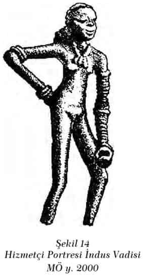
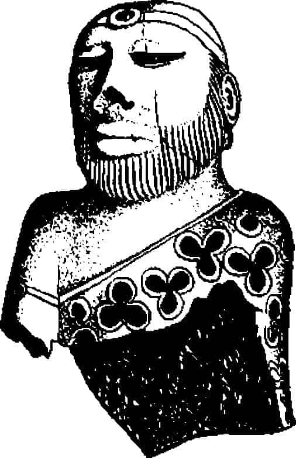
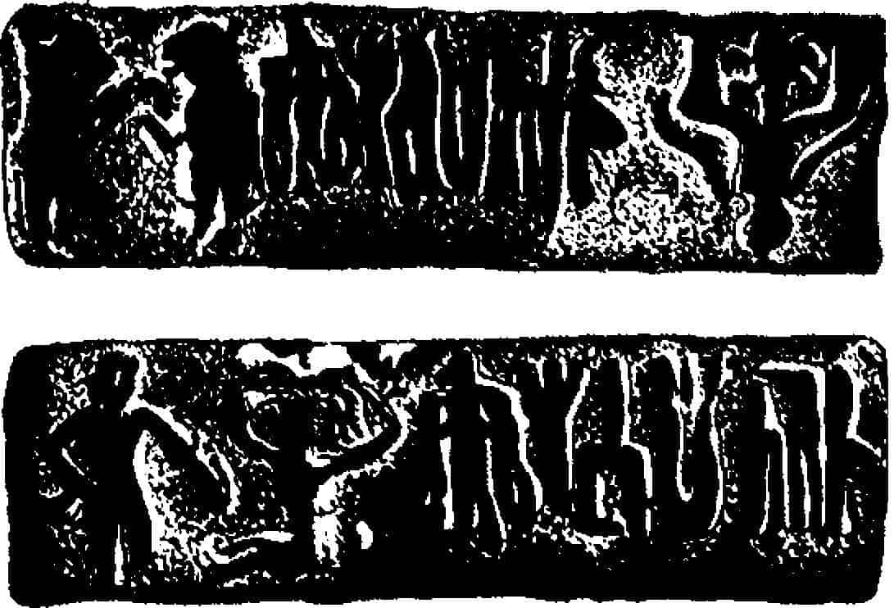
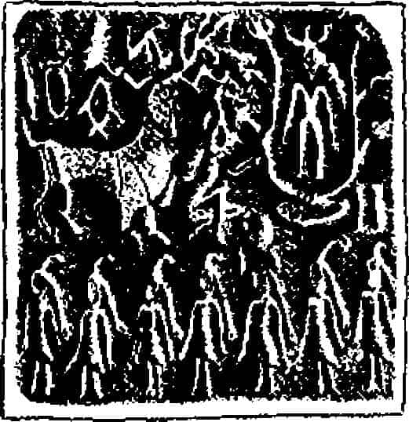
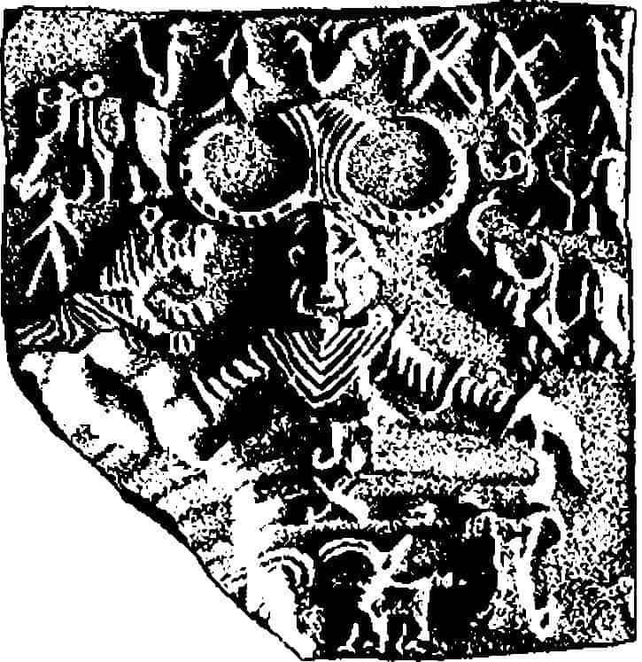
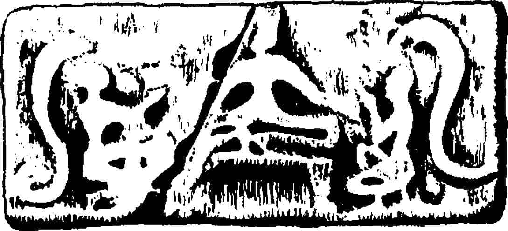

Dr. Ananda K. Coomaraswamy’nin bir çalışmasında, “Yaşamın kökeninin sularda olduğu inancı, birçok eski kültürde ortaktır ve doğal olarak Nil, Fırat veya İndus Vadisi gibi yörelerin halkları arasında gelişmiş olmalıdır. Bunlar arasında İndus Vadisi mevsimlik yağmurları veya sürekli akan ırmaklarıyla tarımsal açıdan en can alıcı konumda olandır.”{252} denilmektedir.
Bu öneri, ortak psikolojik yasalara bağlı olarak dünyanın çeşitli yerlerinde benzer mitolojilerin gelişebileceği düşüncesini getirir. Ve on dokuzuncu yüzyılın çoğunluğunda, yirminci yüzyılın başlarında bilim adamları arasında genel kabul gören düşünce de bu olmuştur. Fakat son arkeolojik keşiflerle tahıl türlerinin, evcilleştirilmiş hayvanların, yeni sanatları geliştiren tekniklerin vb. belirli kültür ocaklarından dünyanın başka köşelerine yayılarak paylaşıldığı ortaya çıkmış, kökenleri başka uygarlıkların ‘doğal’ ekonomik, toplumsal veya psikolojik ‘yasa’ların işleyişiyle koşut gelişimler geçirdikleri görüşü terk edilmiştir. Daha önce söylenildiği gibi, tahıl üretimi ve hayvan yetiştiriciliğine dayanan köylü ekonomisi üstüne kurulan en eski ırmak uygarlıklarının nihai kökeni Nil, aşağı Fırat-Dicle ve İndus vadileri değil, yağmurla sulanan otlakları ve dağlarla sarılı vadileriyle Verimli Hilal’dir. Ve bu tek kültürel dönüşüm bölgesinde, hem Hindistan hem Batı için özellikle önem taşıyan alt kültür bölgesi niteliği taşıyan İran olmuştur. İran’da MÖ y. 4500'de görülen karakteristik ince işlenmiş deri etkilerini batıya doğru MÖ y. 4000’de aşağı Mezopotamya’da (Sümerlerin ilk yerleşim alanı, eski Eridu ve Obeid) ve doğuya doğru yaklaşık bin yıl kadar sonra Belucistan (özellikle Kuetta, Nal ve Külli eserlerinde) ve İndus Vadisinde (Amri ve Kalepar seramiklerinde) izleyebiliriz.{253}
Güneybatı Asya kültür yöresinden Hindistan’a doğru etkide bulunmaya başlayan göçmenlerde gelişmiş neolitik kültürün ögeleri vardır: Evcilleştirilmiş keçi, koyun ve sığır, üstü kapalı öküz arabaları ve çömlekçi çarkı, bakır ve tunç, hatta görüldüğüne göre cam. Kentlerini taş temeller üstüne kaba tuğladan, taş veya tuğladan inşa ediyorlar, tahıl yetiştiriyorlar, seramikten tanrıça ve boğa heykelleri yapıyorlardı. Çömleklerindeki motifler Batı’da yaygın olarak tanınmıştı: Svastika İran’ın, çifte balta Suriye’nin, menderes, kırık ve dalgalı çizgi, damalı desen, üçgen, zikzak, baklava biçimleri vb., ile birlikte stilize edilmiş veya aynen resmedilmiş bitki, balık ve kuşlar da, hemen her zaman güneybatı ve Kuzey Irak’ın (Susa I, II ve Samarra seramikleri), Suriye’nin (Halaf seramiği) ve Mezopotamya havzasının bilinen en eski tabakasının (Obeid ve Cemdit Nasr) ileri neolitik yörelerinin motifleridir. Benzerlik o derecededir ki. Profesör V. Gordon Childe, “Belucistan... bir zamanlar Dicle’den İndus’a kadar uzanan kültürel sürekliliğin parçasını oluşturmuş olmalıdır” gözleminde bulunmuştur.{254}
Dahası, Girit’in ve ilk Akdeniz uygarlığının hemen geniş kesiminin temelini de aynı çekirdek Yakındoğu oluşturduğundan (boğa, çifte balta ve tanrıça buralarda da MÖ y. 4500’den itibaren görülürler) Doğu ve Batı’nın mitos ve ritüellerindeki artan sayıda benzerlikleri gördüğümüzde şaşırmamıza veya metafizik etkilenmelere kapılmamıza gerek yok. Dr. Robert Heine-Geldern’in çok
doğru olarak gözlemlediği gibi, “eski uygarlıklar ne kadar özgün ve tek görünürlerse görünsünler bir teki bile bağımsız olarak gelişmemiştir... Büyük bir tarihsel hareketle, daha doğrusu bir dizi hareketle karşı karşıyayız ve son çözümlemede hepsi aynı ortak kökenden yayılmıştır.”{255}
Ama gene de, benzerliklere değil de farklılıklara baktığımızda, geniş yayılım gösteren Yakındoğu neolitik uzantısının Doğu ucunda göze çarpan birçok iz yakalarız. Bu izler, Hindistan uygarlığının yalnızca Batı’dan gelenlerin esini ve katkılarıyla sınırlı kalmadığına işaret etmektedir. Çömleklere resmedilen ve seramik heykelleri yapılan güzel boğalar Hint hörgüçlü boğasıdır (Bos indicus). Hint pipalinin (Ficus religiosa){256} yaprak biçiminden kaynaklanan motifler bugün tüm Hindistan’da tapınılan ve özellikle yerli Hint topraklarının dehâlârıyla (yakşa ve yakşiler) bağlantılı kabul edilen bir bitkinin o zamandan saygı gördüğünü ortaya koyar. Kuzey Belucistan’ın Zhob Vadisi’nden ilginç seramik tanrıça heykelleriyse bütün Yakındoğu tanrıça kültünde örneği bulunmayan özellikler gösterir. İran’daki birkaç örneğinde olduğu gibi bu heykeller belin altında biter; her yerdeki tanrıça heykellerinde olduğu gibi süslü gerdanlıkları vardır. Ama Profesör Stuart Piggott’un belirttiği gibi, bu heykellerin yüzleri dünyanın başka yerlerindeki bilinen bütün yüzlerden farklıdır:
“Yapılmış saçları veya başörtüleri, geniş, düz alınları, gözlerini size dikmiş gibi bakan yuvarlak gözyuvarları, baykuş burunları ve zalim, düz ağızları vardır. Sonuç, on beş santimlik küçük bir heykelde bile korkutucudur. Dabar Kot’taki iki tanesinde ise bütün sahte tavırlardan vazgeçilerek yüz yerine sırıtan kuru kafa yapılmıştır... Bunların oyuncak olduğu düşünülemez, daha çok ölüler ülkesinin bekçiliğini yapan ana tanrıçanın zalimce vücut buluşu olarak görünmektedirler; ceset ve toprak altına gömülen darı tohumuyla aynı derecede ilgilenen bir yeraltı ilahı.”{257}
Bazılarının, bugünün Güney Hindistan’ında etkileyici biçimde “Balık Gözlü” (minakşi) olarak adlandırılan tanrıçada açıkça görüldüğü gibi patlak gözleri vardır. Ayrıca, Belucistan’daki Dabar Kot’ta kazılan sunaklardan birinde pişmiş tuğladan drenaj bulunduğu gibi, biraz daha batıdaki Kuetta Vadisinde ana tanrıça ve boğa heykelcikleri bu tür drenajı olan çamur tuğla platform üstünde otururken görünmektedir ve platformun dibinde parçalanmış bir kafatası durmaktadır.{258}
Bu arkları biliyoruz. Bugünkü Hindistan tapınaklarında başları kesilen kurbanların kanını hemen geri tanrıçadaki özlerine taşıyan arkların aynısıdır. Bildiğimiz gibi, “taze olarak sunulan kan, ambrosia haline gelir.”{259} Ve bu kalıntılara ilişkin Hint çizgisini iyice vurgulamak için ekleyelim: Güney Belucistan’da Moghul Ghundai olarak bilinen örende taştan fallus, bir başkasında, Periano Ghundai’de yalnızca kaba çömlekten fallus değil, fakat “anormal derecede abartılmış kadın organı ve kasıkları”nı içeren bir heykel de bulunmuştur.{260} Batı kültlerinde de fallusun neolitik tanrıça için önem taşıdığı doğrudur. Fakat Hindistan’da varlıkları bugüne kadar gelmektedir; yukarıda anlatılan ölüm tanrıçası, balık gözlü tanrıça, arklı sunaklar, kurban edilen insanlar üstüne inşa edilen sunaklar, hörgüçlü boğalar ve pipal yapraklarıyla birlikte, Hindistan’da Batı’yla ilişki içinde olsa da, onun taklidinden ibaret olmayan, kendi başına bir merkez oluşturan kültür bölgesi kurulmuş olması gerektiği düşüncesini güçlendirmektedir.
Bütün bu kanıtlar, tarihöncesi uzmanlarını ciddi bir sorunla karşı karşıya getirmektedir. Arkeoloğun küreği bu en eski köy ve kentlerde birkaç cm daha aşağı indikçe, geniş bir kültürel arayla çok daha ilkel bir tabakayla karşılaşmaktadır. Yani son Kapsiyen avcılık döneminin neolitik dönem öncesi basit malzemesi çıkmaktadır. Bu dönemin karakteristik eşyası küçük çakmaktaşı parçasıdır (mikrolit) ve paleolitik kültür alanının son döneminde Güney Afrika’dan Kuzey Avrupa’ya, Fas’tan Seylan’a, gerçekte Hindistan’la bağıntısı bulunmayan ülkeye kadar, bütün Batı kültür çevresine yayılmış olarak bulunur. Ve gene, daha derine kazıldığında, ortaya çıkan sonraki kültürel tabaka, uçurumun kendisidir, insanın kültürel gelişiminin en alt tabakası olan ilk, gelişmemiş paleolitik dönemle karşı karşıya gelinir.
Hindistan, bu demektir ki, dayanıklı aletlerin dilinden -taş, seramik ve metal- ifade edildiğinde resmi parçalamaktadır. Şimdi ulaşmış olduğumuz gelişmemiş paleolitik eserler bütünü, ikinci buzul çağın son döneminden veya ikinci buzul çağı arası dönemden, aşağı yukarı MÖ 400 binden, Pitekantropos erektusun, Profesör Haeckel’in ‘Kayıp Halka’ olarak karşıladığı insanın çağından başlamaktadır.{261} Kuzeybatı ve Orta Hindistan’da bulunan ve balta olarak anılan bir tür kaba taş alet, paleolitik çağın yarım akıllı, sendeleyen tekniğinin Hindistan örneğini temsil etmektedir. Bilinen en eski Hint aletleri, Soan-öncesi baltalarını kuzeybatıda -Soan Kültür Bölgesi denilen yerde- ikinci buzul çağı arası dönemden, MÖ y. 400 binden, belki y. 200 binlere kadar ilave edilen iki fazlasıyla ilkel taş aletle birlikte izleyebiliyoruz. 1. çağdaşı ve daha eski, en basit aletler olan Güney ve Doğu Afrika aletleriyle yakınlık gösteren tek parça, yuvarlak yontma taş ve 2. yeni tür kalın, ağır balta ve bu kaba aletlerin yontuldukları kabuklar. Son tür alet ve kabuklar Burma (Anyathian sanayi), Malaya (Tampanian), Cava (Pajitanian) ve Çin’de de (Çoukoutien’de bulunan Pekin Adamı’yla ilişkili olarak) keşfedilmiştir. Bu alan bütün Doğu Asya paleolitik kültür bölgesini, Hindistan’ın kuzeybatısıyla birlikte içine almaktadır.
Bu uzun dönem boyunca, oysa, Batıda daha gelişkin bir taş alet geliştirilmiştir; Aşölyen el baltası kültürü adı verilen ve geniş Avroafrika bölgesini kapsayan bu alana Hindistan’ın Batı, Orta ve Güneydoğu bölgeleri dâhil olmuştur. Dolayısıyla, daha MÖ y. 500 binden başlamak üzere, karşılıklı ilişki içinde bulunan, fakat gene de birbirinden ayrı iki Hint kültür bölgesi tanımlanabilir:
A. Kuzeybatının Soan Kültür Bölgesi,
1. Güney Afrika bağlantılı “yontma taş” aletler ve,
2. Doğu Asya bağlantılı “baltalar”ı kapsar;
B. Batı, Orta ve Güneydoğu'nun Madras-Acheul (Bombay’dan Madras’a kadar) Kültür Bölgesi,
3. Aşölyen tipi “el baltası”.
Orta Paleolitik dönemde (üçüncü buzul arası ve son buzul dönemi, MÖ y. 200 binden herhalde 30 binlere kadar süren ve Neandertal Adam’ın tüm Avrupa’da yünlü mamotları izleyerek kuzeyin donmuş bölgelerine kadar uzandığı dönem), yukarıda tanımlanan iki temel Hint bölgesi çok yavaş değişip ve ilk paleolitik gelenekleri geliştirmeye başlayarak kendi yapılarına bağlı kalmıştır. Ve bildiğimiz kadarıyla, paleolitik Hindistan’ın sonu budur; çünkü henüz Hint topraklarında paleolitiğin son dönemini gösteren, yani “cilalı” taş devri sanayine işaret eden hiçbir şey bulunmamıştır. Avrupa’da boyalı Cro-Magnon mağaraları döneminde (Lascaux ve ötekiler, MÖ y. 10.000) ve Afrika’da biraz önce son aşamasına işaret edilen son Kapsiyen döneminde (MÖ y. 10.000-4.000) bu gelişme sağlanmıştır.
Fakat Profesör Piggott’un da belirttiği gibi, taşlar her zaman bütün öyküyü anlatmayabilir:
“Göçebe avcı grupların maddi kültürlerinin yok olmayan kalıntılarına sahibiz; ahşap, lif, sap, deri ve gön gibi kalıcı olmayan başka organik maddelerden yapılmış birçok malzemesi olabilir.”{262}
Leo Frobenius da, yıllar önce, insanın en eski dönemlerini canlandırmaya çalışırken yalnız daha dayanıklı iskelet parçalarına dayandığımıza, gözle görünen kanıtların bir zamanların canlısına ilişkin bilinmeyen, görülmeyen gerçekliğin ancak tortusunu oluşturabileceğine dikkat çekmiştir.{263} Dahası, insanın en eski köklerinin ve yayılımının bulunduğu geniş ekvator bölgesinde kullanılmaya elverişli doğal malzeme çoğunlukla dayanıksızdır. Geleneksel biçimlerden başka hiçbir şey bugüne gelememiştir. Oysa kuzeyin ılıman kuşağında taş, çömlek ve metaller, kültürün maddi biçimlenişinde çok daha önemli bir yer tutar. Kuzeyin güney komşuya yaptığı etki gözle görülür, ölçülebilir bir katkı oluştururken, ekvator kuşağının taş, seramik ve metal kullanan ılıman kuşak geleneklerine etkisi, ancak kuzey geleneğinin kendi sanatı içinde göstereceği belirgin değişimlerle izlenebilir. Ve dikkatsiz filozof, bunu, kültürel evrimin bulanık “doğal yasası”nın örneği olarak yorumlar.
Frobenius şöyle yazmaktadır: “Eski tarihi anlayışımız ken-disini önce arkeolojik, sonra tarihsel biçimler içinde ortaya koyan kültürel bağlamların belgelerine dayanmaktadır. Fakat bütün bu kaynaklar çok bencil bir tür oluşturur: Ancak kendileri ve kendi küçük benlikleri hakkında bilgi verir. Her bölge, burada Sümer, orada Mısır bana kendi kişilerini anlatır. Bu dar bölge ötesinde yer alan, bulunan ve olanlar göz ardı edilmektedir; eğer dışarıdan gelen kültürel etki söz konusu olursa, ne zaman geldiği ve hangi yabancı koşullarda değişime uğradığı önemli değildir. Önemli olan yalnızca onun gelişidir, başka yerdeki tarihi önemsizdir. Dolayısıyla, büyük Batı Asya-Mısır kültür çemberinin tek başına geliştiğine, dünyadan yalıtılmış olduğuna, kendi başına doğup geliştiğine inanma eğiliminde oluyoruz. Bu anıtlardan, bu ülkelerin dışında sessizce etkinlik gösteren güçlerin varlığı kanıtlanmaz. Dış dünya bu belgelerin aynalarında yansıtılmaz.
Bilim daha ileri kültürlerin tarihini araştırmaktan tatmin olduğu sürece -yani Roma döneminde benimsenen ‘uygar’ ve ‘barbar’ sınıflandırılması kabul edildikçe- bu sınırlama aşılamaz. Fakat son yirmi, otuz yıldır [Frobenius 1929’da yazıyor] insanın alın yazısını araştırma gayreti kültürün nitelik ve tanımıyla ilgili anlayışın sorgulanmasını gerektirmiş ve her şey değişmiştir. Bir yandan arkeoloji, bir yandan çağdaş etnoloji ileri kültürlerin piramit zirveleri olduğunu, duvarların ve temellerin ancak küçük parçaların bulunmasıyla yeniden inşa edilebileceğini göstermiştir. Ve bu tür keşifler, ileri kültürlerin solgun yıkıntıları ötesinde eskiden beri dünyada parlak kültürel yaşamın canlandırılmış olduğunu göstermiştir.
Eski çağların ileri kültürlerinin görkemi, bilgilerimize göre, 20-45 derece kuzey kuşağını yani Yengeç Dönencesi’ni oluşturan bölgeden ibarettir. Arkeolojinin bu kanıtlarına karşı bilimimizin etnoloji dalı bu kuşağın güney sınırını, Batı Afrika’dan Hindistan yoluyla Malaya ve Melanezya’ya uzanan bölgeyi daha fazla tanımazlıktan gelemezdi. Bu bölgelerde gelenekleri tarihsel köklerine kadar izlenebilen ve hayvan dünyasının bitki dünyasından farklı olduğu kadar kendine ait bir dünyayı temsil eden kültürler bugüne dek yaşamıştır. İkinci tür kültür bölgesi bir gerçektir. Bu ikinci tür tarihsel kültürlerin özelliklerine göre o kadar farklıdır ki, tarihsel koşulları arasında bağıntı kurmak olanağı yoktur. Çünkü dışarıdan gelen hiçbir anahtar ve ipucu onu açamamaktadır. Dışarıdan bakıldığında, yalnızca durağan manzaralar ve perspektiflerden ibarettir. Sanki kendi yurdundaki bitki gibi, bahar ve yaz, yükseklik ve alçaklık olmadan yaşayıp gitmiştir.
Bu tür kültürlere insanın kültür tarihinin “görülmez rakip- oyuncuları” (die unsichtbaren Gegenspicler) adını veriyorum.
Varlıkları tarihsel belgelerde nadiren yer alsa da ve doğrudan ortaya konulup gösterilmeleri pek söz konusu olamasa da, güneyden gelip ileri kültürler üstünde yaptıkları etkilerin tanınabileceğinden gene de kuşkum yok.”{264}
Tarihöncesine ait araştırmalarda bize somut kanıtlar sunan arkeolojik bulgularla birlikte, demek ki görülmez rakip-oyuncuların güçlerini de hesaba katmamız gerekiyor. Bunlar, bu tür işaretlere karşı uyanık olmayan gözlerin kolayca atlayabileceği dönüşümler ve eklemelerde kendilerini gösterir. Profesör W. Norman Brown, İndus’un doğusunda beş yüz, bin millik bir alanın, İndus Vadisi’ndeki ileri kültüre ait ilk kanıtlarla çağdaş karakteristik Hint kültür alanı olduğunu ileri sürmüştür.{265} Deneme niteliğinde bir hipotez olarak bu görüşün hâlâ mantıklı biçimde savunulması olanaklıdır. Fakat bu bölgenin uygarlık düzeyinin, diyelim çağdaş Melanezya köyünden ileri olduğunu söylemek kanıtların dışına çıkmak olur. Benim kendi önerime göre, zengin Hint yarımadasında gerçekten İlkel Mitoloji cildinde tanımladığım yerel tropik köy biçimleri üretilmiş olmalıdır ve bunun da önemli büyük değeri ve ruhsal derinliği vardır. Fakat bugünün birçok Hintli aydını tarafından yurtsever bir coşkuyla savunulduğu gibi, belki Tufan’dan bile önce, belirlenemeyen çok eski tarihlerde Hindistan’da zamansız bir bilgeliğin ortaya konmuş olduğu{266}, bir yazardan alıntı yaparsak, “bizim mantık ve konuşmamızdan farklı yöntemlerle düşünceler geliştirildiği” ve Vedaların “Sonsuzluktan, kendini daha önce kişisel olmayan bilgiye hazırlamış olan insanın içine titreyen kutsal Söz” olarak geldiği{267} görüşünü, korkarım, bir düşüncenin değerini onun ele gelmezliğiyle ölçenlere bırakmak zorunda kalacağım. Şu an için okuyucudan Himalaya’nın gururlu rüzgârlarının değil, Batı’nın halen gelişmekte olan ölçülebilir değerlerinin kılavuzluğunu kabul etmesini istiyorum.
İndus Vadisi’nde MÖ y. 2500’de iki Tunç Çağı kentinin tüm gelişmişliğiyle aniden ortaya çıkışını henüz kimse tam açıklayamamıştır. İki kent de kültürel olarak aynıdır, fakat aralarında, yalnızca küçük köylerin bulunduğu dört yüz mil mesafe vardır.
Bunlar Pencap’ta Ravi kıyısındaki Harappa ve güneyde, Sind’de, Ravi’nin kolu olduğu İndus kıyısındaki Mohenjo-daro kentleridir. İkisinin de temel planı aynıdır ve bağımsız gelişmiş oldukları düşünülemez. Koloniyal yerleşimler olmaları gerekir. Ve şaşırtıcı olan, yarattıkları etkilerin yaygınlığıdır. Son dönem kazılarını yapmış olan Sir Mortimer Wheeler, “İndus uygarlığı, Roma İmparatorluğu’ndan önceki en yaygın siyasal deneyimin örneğidir” gözleminde bulunmuştur.{268} Karakteristik el eşyaları Pencap’tan Bombay’a kadar uzanır. Daha da şaşırtıcı olanı, bunların tekdüzeliğidir. Kalıntılar güneyden kuzeye, ilkten sonuncuya hiçbir gelişme, hatta değişme göstermez. İlk muhteşem örneklerin üretilmesinden sonra, ancak standartlarda hafif bir düşme gözlenir. Bu kentler ve uygarlıkları ortaya çıkmış, bin yıl değişmeden kalmış ve gece görülen hayal gibi kaybolup gitmiştir.
Wheeler, Akadlı Sargon zamanında (MÖ y. 2350) Mezopotamya’daki başkentin limanında Makkan ve Meluhha adlı iki uzak limandan gelen gemiler bulunduğunu bildirip, sonra bunların Dilmun veya Telmun olarak bilinen adada (Bahreyn) ikmal sağladıktan sonra oraya ulaşabildiğini açıklar. Bir süre sonra III. Ur zamanında (MÖ y. 2050-1950), Makkan hâlâ ilişkinin sürdüğü bir limanken, bakır, taş, ahşap, fildişi eşyaların ve çeşitli hayvanların getirildiği liman olmasına karşın, Meluhha’yla ilişki kopmuştur. Ve sonra, kabaca Hammurabi döneminde (MÖ y. 1700) Makkan’la da bağıntı kopmuştur. Wheeler, “önemini yitiren bu ticaret kaydının ortaya koyduğu Telmun, Makkan ve Meluhha’nın Mezopotamya’dan gittikçe uzaklaşan mesafelerde olmasıdır; bu çıkarsamaya en uzak olan Meluhha'nın fildişi, ahşap ve bakırla olan bağıntısı da eklenirse, İndus uygarlığıyla (ormanları, filleri ve Racastan’daki bakır kaynaklarıyla) özdeşleştirilmesi oldukça mantıklı gelmektedir. Bu görüş arkeolojik kanıtlarla da uyuşmaktadır. Fildişi işçiliği Hint sanatıydı...” diye yazıyor.
Önerisini şöyle sürdürüyor: “Gemiler dolusu ahşap ve fil dişi düşünelim. -İndus sanatkârının yakından bildiği maymun ve tavus kuşu da niçin aralarında olmasın?- Uygarlığın en gelişkin olduğu dönemde İndus limanlarından yola çıkıyorlar. Sonuç olarak, daha sonraki kent standartlarının ortaya koyduğu kanıtlarla anlaşılan uzun süreli gerilemeyi, denizaşırı trafiğin alan ve hacmindeki gerilemeyle açıklamak zor değildir. Kayıtlardan elde edilen bilgilerle maddi kanıtlar birbirini desteklemektedir.”{269}
Irk açısından, İndus kalıntılarında bulunan elli küsur iskelet sınıflandırılmış ve iki ana gruba ait oldukları görülmüştür: I. Proto-Avustralya özellikleri gösterenler ve 2. Akdeniz akrabalığı gösterenler.
Birinci grup Seylan’ın Veddoid yerlileri, Avustralyalılar ve Hindistan’daki birçok kabileyle karşılaştırılmıştır. Profesör Stuart Piggott bu konuda “Genel kabul gören görüşe göre, Avustralya’nın yerli halkı Güney Hindistan, Seylan ve Melanezya’dan göç eden insanlardan oluşmuştur. Bu tip bu bölgelerde bugün de çok iyi temsil edilmektedir. Gövde küçük, ten siyaha yaklaşan bir esmerlikte, dalgalı veya bukleli (fakat asla kıvırcık olmayan) siyah saçlar, uzun baş, enli basık burun ve etli, patlak dudaklar; Güney ve Orta Hindistan’ın bugünkü yerli kabileleri ve Hindu toplumunun ‘dış kast’tan olanlarının çoğunluğunu bu insanlar oluşturur” demektedir.{270}
Mohenjodaro’da bulunmuş tunçtan yapılma uzun, zayıf çıplak kız heykeli tam bu tipi göstermektedir (Şekil 14). Saç biçimi, küçük göğüsleri ve bileziklerini takış tarzı, Güney Belucistan’daki MÖ y. 3000 yılının Kulli kültür bölgesindeki bir dizi heykelciği çağrıştırmaktadır. “Öyle görünüyor ki” diye yazar Profesör Piggott, bu benzeşmeden söz ederken, “gerçekten Belucistan tipinin temsilcisidir. Geçerken, Proto-Avusturalya grubuyla bağlantı kurulan koyu tenin Belucistan’a klasik çağlarda verilen Gedrosia, kara tenliler ülkesi adıyla da uyum içinde olduğunu belirtelim.”{271}
Güney Hindistan’daki önde gelen dillerin Aryan değil Dravid ailesinden olduğunu belirtmeliyiz. Bunlar Tamil dili (Güney’in ana dili, Malabar’ın Malayalam dili de bu dilin diyalektidir), Telugu dili (Madras çevresinde), Kanarese dili (Mysorenin dili), Kodagu, Badaga, Kota ve Toda dilleri (Nilgiri dağlarının kabile dilleri), Gondi dili ve diyalektleri, Bhil ve Kolam, ayrıca Khondi ve Oraon dilleri (Orta Hindistan eyaletlerinde, Orissa ve Bihar’da) ve son olarak Malto dilidir (Rajmahal’da). Bu dillerin Doğu Belucistan dağlarının ve Sind’in Brahui diliyle yakın bağlantısı vardır.{272}
İkinci ırk, Akdenizliler, tersine -gene Profesör Piggott’dan alıntı yaparsak- “bugün İberya’dan Hindistan'a kadar uzanan geniş bir aileyi içine alır. Karakteristik tipi son Natufian döneminde Filistin’de [MÖ y. 7500-5500] görülmüştür ve Kuzey Afrika’nın güney bozkırlarında ve Asya’da farklılaşıp batıya ve doğuya doğru yayılmış olmalıdır. Hanedan öncesi dönemin Mısırlıları kesinlikle bu aileye aitti ve bugün en saf temsilcileri Arap yarımadasında bulunur. Bugünkü Hindistan’ın kuzeyinde halkın çoğunluğunu oluşturan öğedir ve üst sınıflar arasında başka bölgelere de yayılmıştır. Bu insanlar orta-uzun boylu, esmerden hafif zeytin kahverengisine kadar değişen ten rengine sahip, uzun baş ve yüzleri olan, dar ve görece sert hatlı burunlu, siyah saçlı, göz renkleri kara veya kahverengi ve özellikte büyük ve yuvarlaktır. Gövde oldukça tıknazdır.”
“Arkeolojik kanıtlar bu uzun başlı Akdenizlilerin en eski tarımsal yerleşmelerle birlikte tüm Batı Asya’ya yayılmış olduklarını gösterir” diye eklemektedir. “Belucistan’ın boyalı çömleklerinin ve Harappa kültürünün boyalı seramiklerinin ortaya koyduğu kanıtların bu basit tarım ekonomilerinin sonuçta benzer olduklarını göstermeleri gibi, fiziki tipler de bütün bölgede aynı etnik topluluğun olduğunu göstermektedir; tarihöncesi Hindistan’ın ilk “Akdenizli” halkı da batıdan yayılmayla ilişkili olmalıdır.”{273}
Mohenjodaro'da bulunmuş, yirmi santim kadar uzunluğunda, rahibi andıran kırık bir heykel vardır. Üstünde yonca desenli sol omuzunu sarıp sağını açıkta bırakan bir şal görünmektedir (Şekil 15). Hindistan’da ve Buddhist dünyada kutsal bir yapı veya kişiye giderken saygı taşıyan giyinme biçimi budur. Sağ omuzun saygı nedeniyle açık bırakılması, öte yandan, ilk Sümer rahip heykellerinde de görülmektedir ve yonca deseni de, daha sonraki Hint geleneğinde görünmemesine karşın, aynı biçimde Mezopotamya sanatında bulunmaktadır. Bu heykeldeki saç biçimi de daha sonraki Hint sanatında görünmez. Saç geriye fırçalanmış ve ortadan ayrılmıştır, ensede kısa örgüler vardır ve iki uzun ucu arkada sarkan dar bir şeritle bağlanmıştır, şeridin alnın ortasına gelen yerinde madalyon bulunmaktadır. Sakal ve bıyık aynı hizada kırkılmıştır. Kulakların hemen altında bulunan delikler gerdanlığa işaret ediyor olabilir. Sağ pazuya pazıbent takılıdır. Uzun gözler yarı kapalı gibidir. Yapılı burunun uzun bir kemeri vardır ve hiçbir biçimde daha sonraki istilacı Aryanların yerli halkı küçümsemek için kullandıkları “burunsuz” (anasa) lakabını hak eder görünmemektedir. Yerli halk kara derili ‘şeytanlar’ (dasa, dasyu), “tanrısı fallus olanlar” (sisna-deva) diye de küçümsenmiştir.{274} Bu heykelin kültürel ve toplumsal bakımdan daha üstün olan ikinci ırktan olduğuna kuşku yoktur ve Aryanlar Hindistan’a girdiklerinde herhalde çoktan önemli derecede özümlenmişlerdi.

Şekil 15
Rahip Portresi: İndus Vadisi, MÖ y. 2000
Kalıntılar arasında, Aryanlar tarafından küçük görülen ana tanrıça fallus kültünün, uygarlığın önde gelen özelliklerinden biri olduğunu göstermeye yetecek kadar kanıt var. Dahası, etnolojist Peder Wilhelm Koppers’in gösterdiği gibi, Hindistan’da bugüne kadar devam edip gelen iki tabakalı ana tanrıça tapımı vardır. 1. Proto-Avusturalya tabakası, 2. neolitik tabakadır. Dünya’nın başka hiçbir yerinde baştanrının erkek değil, kadın oluşu kavramı bu kadar ince biçimde geliştirilmemiştir.{275} Tropikal dünyada olsun, neolitik dünyada olsun, Tanrıça inancının özelliklerinden olan insan kurbanının Hindistan’da tapınaklarda ve köy korularında 1835’te kanunen yasaklanana değin, bu kadar uzun süre devam etmiş olmasına, dolayısıyla şaşırmamalıdır. Ayrıca, İndus Vadisi döneminde aynı türden ritlerin yalnız yerli köylerinde ve işçi semtlerinde değil, devletin takvime bağlı yüksek törenlerinde de kutlanmış olduğunu kabul etmek gerekir. Ve kurbanın acısı ve halkın heyecanıyla bu tür ritlerden neler öğrenilmiş olduğunu çağdaş Hindistan’ın köylerine ait bilgimizden çıkartabiliriz.
Canlı, tipik bir ders, Khond örneğinden, Dravid asıllı, Proto-Avusturalya grubundan Orissa, Bengal ve Bihar'da yaşayan{276} halktan çıkartılabilir. Bu halk kurbanlarına meriah adını verir, toplumdan ayırıp yıllarca saklayabilir ve iyi hasat sağlayıp hastalıklardan kurtulmak için, özellikle güzel, zengin, kırmızı hintsafranı elde etmek için Yer Tanrıçası’na sunardı. Kurbanın kabul edilmesi için satın alınmış veya meriah çocuğu olması gerekiyordu. Khondlar, raporlara göre, zaman zaman kendi çocuklarını da meriah olarak satıyorlardı, çünkü ruhlarının özel olarak kutsanacağına inanıyorlardı. Fakat daha çok komşu Panlardan kurban satın alırlardı. Panlar suç peşinde koşan bir kabileydi ve çocukları bu amaçla ovalardan sağlarlardı. Meriah gençliğinde başka bir meriahla evlendirilir ve onlardan meriah çocuklar elde edilirdi. Kutsal varlıklar olarak kabul edilirler, olağanüstü sevgi ve saygı görürlerdi. Ancak olağanüstü olaylarda veya mevsimlik festivallerde, tohum atımından önce kurban edilirlerdi. Her aile ürününü artırmak için yılda en az bir kez tarlasına et sağlardı.
On, on iki gün önceden kurban adanır, saçı kırpılır, yağlar, sıvılar ve hintsafranıyla sıvanır. Vahşi bir şenlik ve âlemden sonra meriah, müzik ve dansla köyün az ilerisindeki meriah korusuna direğe bağlanır ve bir kez daha gövdesi yağlarla, hintsafranıyla sıvanır, çiçeklerle süslenir. Bu sırada kalabalık çevresinde dans ederek tanrıçaya şarkı söylemektedir: “Ey Tanrıça, sana bu kurbanı sunuyoruz: Bize güzel havalar, ürün ve sağlık ver.” Kurbana da şu şarkı söylenir; “Seni fiyatını verip aldık, seni kaçırmadık, geleneğe göre kurban ediyoruz: Bizim günahımız yok.” Kurbanın süslerinden, çiçeklerden veya zerdeçaldan ya da tükürüğünden büyülü bir parça elde etmek için verilen mücadeleden sonra, âlem ertesi gün öğleye kadar devam eder. Sonunda ritin tamamlanacağı zaman gelmiştir.
Sir James Frazer, dört tanığın anlatımından çıkardığı özette anlatıyor: “Kurban yeniden yağlanır, herkes yağlanmış kısma dokunur ve yağı kendi kafasında silerdi. Bazı yerlerde, kurban bundan sonra köyün içinde kapı kapı alay halinde dolaştırılırdı; kimi kafasından saç koparır, bir başkası bir damlacık salyası için yalvarırdı, bunu başlarına sürerlerdi. Kurban bağlanamayacağı için, ayrıca herhangi bir direnç göstermesi iyi olmayacağından, kol kemikleri, eğer gerekiyorsa bacakları kırılırdı; ama çoğu kez bu önleme gerek kalmazdı, kurban afyondan sersemlemiş olurdu. Kurbanı öldürme şekli bölgelere göre değişirdi. En yaygın usullerden biri boğmak ya da sıkıştırarak öldürmek gibi görünüyor. Yeşil bir ağacın dalı ortasından aşağı doğru yarılır, kurbanın boynu (başka yerlerde göğsü) bu yarığa sokulurdu, sonra rahip bütün gücüyle, yardımcılarının da desteğiyle bu yarığı kapamaya çalışırdı. Daha sonra kurbanı, baltasıyla hafifçe yaralar, bunun üzerine kalabalık kurbanın üstüne saldırır, etlerini kemiklerinden ayırırdı, başa ve bağırsaklara dokunulmazdı. Bu kesme işi bazen canlı canlı yapılırdı. Chinna Kimedy’de kurban, çevresinde kalabalık, tarlalar boyunca sürüklenirdi; kalabalık başına ve bağırsaklarına dokunmaksızın bıçaklarıyla etlerini çenterdi, ta ölünceye kadar. Aynı bölgede bir başka çok yaygın kurban etme şekli, kurbanı kalın ve sağlam bir direk çevresinde dönen ağaçtan bir filin hortumuna bağlamaktı; fil hızla döndükçe kalabalık hâlâ canlı olan kurbandan etler koparırdı. Binbaşı Campbell, bazı köylerde kurbanlarda kullanılmış bu ağaç fillerden on dört tane bulmuştu. Bir bölgede kurban ateşle ağır ağır öldürülürdü.
Her iki yanı çalı gibi yükselen alçak bir sahne yapılırdı; çırpınmasını kısıtlamak için bedeni, kolları, bacakları iplerle bağlı kurban bunun üzerine yerleştirilirdi. Bundan sonra ateşler yakılır ve kurbanın vücuduna, onu sahnenin eğimleri boyunca olduğunca uzun süre aşağı yukarı yuvarlatacak kızgın közler uygulanırdı; çünkü ne kadar çok gözyaşı dökerse o kadar bol yağmur alınacak demekti. Ertesi gün ceset parçalara ayrılırdı.
Kurbandan kesilen etler, her köyün onları getirmek için seçtiği kişi tarafından hemen köye götürülürdü. Etin çabucak köye varmasını sağlamak için bazen yoruldukça değiştirilen adamlarla gönderilir, elli altmış millik yolu bir posta arabası hızıyla alırdı. Her köyde, evde kalmış olan kimseler et gelinceye kadar çok sıkı bir perhizde olurdu. Eti getiren, onu, halkın toplandığı bir alanda rahibe ve aile reislerine teslim ederdi. Rahip bunu iki kısma ayırırdı, birini arkası dönük olarak ve bakmaksızın yerde bir deliğe gömmek yoluyla Yer Tanrıçası’na sunardı. Sonra her erkek bir parça toprak atardı deliğin üzerine ve rahip bir su kabağıyla o noktaya su dökerdi. Etin öbür kısmını, orada ne kadar aile reisi varsa o kadar parçaya bölerdi. Her aile reisi kendi payına düşen eti yapraklara sarar ve en verimli tarlasına gömerdi, o da rahip gibi elini arkasına götürerek ve bakmaksızın yapardı bu gömme işini. Bazı yerlerde her erkek kendi payına düşen eti, tarlalarını sulayan su akıntısına götürür, orada bir direğe asardı. Bundan sonra üç gün ev süpürülmezdi; bir bölgede de kesin bir sessizlik uygulanırdı. Dışarıya ateş verilmez, odun kesilmez, eve yabancı kabul edilmezdi. İnsan kurbandan geriye kalan kısımlar (yani başı, bağırsakları ve kemikleri) kurbandan sonraki gece boyunca güçlü kuvvetli kişilerce beklenirdi; ertesi sabah bir cenaze ateşi üzerinde bütün bir koyunla birlikte yakılırdı. Külleri tarlaların üzerine saçılır, evlerin ve tahıl ambarlarının üzerine macun olarak sürülür ya da haşarattan koruması için yeni tohum içine karıştırılırdı. Bununla birlikte, bazen başı ve kemikleri yakılmaz, gömülürdü. İnsan kurban etme yasaklandıktan sonra, bunların yerini bazı yerlerde adi kurbanlar aldı; örneğin Chinna Kimedy’nin başkentinde insan kurbanının yerini keçi aldı. Başkaları buffalo kurban ediyorlar. Kutsal bir koruda hayvanı ahşap bir direğe bağlıyorlar, çevresinde bıçaklarını savurarak vahşi bir dans yapıyorlar, sonra canlı hayvanın üstüne üşüşüp, her parça için birbirleriyle dövüşüp mücadele ederek birkaç dakikada hayvanı parça parça ediyorlar. Bir parça almayı beceren erkek, eski geleneğe uyarak güneş batmadan önce bunu tarlasına gömmek için son hızıyla koşuyor. Bazılarının tarlaları uzak olduğu için çok hızlı koşmak zorundalar. Bütün kadınlar hızla koşan erkeğe toprak parçaları atarlar ve bazıları çok iyi tutturup vururlar. Çok geçmeden kutsal orman, biraz önce kargaşa yeriyken gene sessizleşip terk edilmiştir, yalnızca buffalodan kalanları, başı, kemikleri ve mideyi beklemek için birkaç kişi kalmıştır. Bunlar direğin dibine törenle gömülürler.{277}
Bugün de, Assamlı Nagaların canlı bir boğayı bir çevirme içinde koşturup, bağıran vahşilerden oluşan kabile elinde parça parça kıydıkları, kuzeydeki Yukarı Çindvin eyaletinde yumuşak gözlü Burmalılar arasında, bu amaçla satın alınan çocukların Ağustos’taki bir festivalde iyi pirinç ürünü elde etmek için her yıl kurban edildiği görülebilir.
“Boynuna geçirilen iple, kurban satın alan kişinin bütün akrabalarının evlerine götürüldü. Her evde bir parmak boğumu kesildi ve evdeki herkes kanla sıvandı. Parmak boğumunu yalayıp ocakta kullandıkları sacayağına sürttüler. Sonra kurban köy ortasında bir direğe bağlandı ve mızrak darbeleriyle öldürüldü. Her darbede akan kan oyuk bir bambuda toplanıyordu. Sonra satın alan kişinin akrabaları bu kanı gövdelerine sıvamakta kullanacaklardı. Sonra bağırsaklar çıkartıldı ve et kemiklerden sıyrıldı. Etler bir sepete doldurulup yakındaki bir sehpa üstüne konulup tanrıya sunuldu. Kurbanı satın alan kişi ve akrabaları bir yandan dans edip ağlayarak kanla sıvandıktan sonra sepet içindekilerle birlikte cangıla fırlatıldı.”{278}
Bu tür ritler Görülmez Rakip-Oyuncu kültür bölgesinde çok yaygındır ve İlkel Mitoloji cildinde ele alınmıştır.{279} Belirleyici mitos kesilen, parçalanan ve gömülen, böylece topluluğun beslenmesinin üstüne kurulduğu bitkiye dönüşen kutsal varlığa aittir. Ana tema da, önceki yapıtımda belirtmiş olduğum gibi, dünyada ölümün başlamasıdır: Özellikle önem taşıyan yönü, ölümün cinayetle gelmesidir, ikinci nokta, insanların besinini sağlayan bitkinin ölümden türemesidir. Ve son olarak, cinsel organlar, bu mitolojiye göre, ölümün ortaya çıkmasıyla oluşmuştur; çünkü ölüm olmadan üreme felaket olurdu, üreme olmadan ölümün olacağı gibi. Böylece, bir kez daha: “Ölüm ve cinsiyetin tek varoluş biçiminin çeşitli yönleri olarak birbirine bagh olduğunu ve öldürmenin -öldürme ve yeme- bu varoluşu sürdürmek için zorunlu olduğunu” söyleyebiliriz. “Dünyadaki bütün insanlar ve onlar gibi bütün hayvanlar, balıklar, kuşların varoluşu buna bağlıdır. Bu, ölümün yaşayanlara yaşam verdiği düşüncesinin duygusal olarak derinden etkileyiciliği, ilk bahçe köylerini oluşturan yapı çerçevesindeki ritlerin temel dürtüsüdür.” Ve aynı zamanda, şimdi eklemeliyiz ki, bütün mitolojinin, uygarlığın, felsefenin Hindistan’daki çıkış noktası olan temel dürtü de odur.
Cangılın sakin, acımasız gücü ve sonuç olarak halkının (tarihi olmayan, fakat zamana karşı dayanıklılık gösteren bu durağan hayaller dünyasının Proto-Avusturalyalı yerlilerin) hareket temeli, Hindistan’da insan üstüne, kaderi ve bu kaderden kurtuluşu üstüne söylenen bütün şarkıların tekdüze temelini oluşturmuştur. Yeni uygarlıklar, ırklar, felsefeler ve büyük mitolojiler Hindistan’a akmış, fakat özümlenmekle kalmayıp büyük ölçüde geliştirilmiş, zenginleştirilmiş ve inceltilmiştir. Gene de, sonuçta (ve gerçekten, hatta alttan alta) ülkede gücünü devam ettiren, daima aynı uzun kırmızı dilli esmer tanrıça olmuştur; her şeyi kendi sonsuz, huşu veren ve ne de olsa bıktırıcı kendi varlığına dönüştürür.
Son zamanların en büyük mümini Şri Ramakrişna (1836-1886) onu şöyle anlatıyor: “Ah, onun hareket biçimi çeşit çeşittir. Maha-Kali (Yüce Zaman), Nitya-Kali (Sonsuz Zaman), Şma-şana-Kali (Yenen-yerlerin Kalisi), Rakşa-Kali (Korucuyucu Kali) ve Şyama-Kai (Kara) olarak bilinen odur. Maha-Kali ve Nitya-Kali’den Tantra felsefesinde söz edilir. Yaratılış, güneş, ay, gezegenler, yer yokken ve karanlık, karanlık tarafından sarılmışken Anne, Biçimi-olmayan, Maha-Kali, Büyük Güç Maha-Kali, Mutlak’la aynı şeydi.
Şyama-Kali biraz daha yumuşaktır ve Hindu evlerinde ona tapılmaktadır. Nimetlerin dağıtıcısı ve korkunun gidericisi odur. İnsanlar salgın hastalıklar, açlık, deprem, kuraklık ve sel zamanlarında Koruyucu Rakşa-Kali’ye tapınırlar. Şmaşana-Kali yıkıcı gücün vücut bulmasıdır. Ölü yakılan yerde cesetler, çakallar ve korkunç dişi ruhlarla çevrilmiş olarak yaşar. Ağzından kanlar akar, boynunda insan başlarından çelenk ve belinde insan ellerinden yapılma kuşak vardır.
Evrenin yıkılmasından sonra, büyük devrin sonunda, Kutsal Ana yeni yaratılış için tohumları toplar. Bir evin, evde kullanılabilecek birçok farklı şeyi aynı sepette saklayan yaşlı hanımı gibidir... Evrenin yıkılmasından sonra Kutsal Annem, Brahman’ın vücut buluşu, yeni yaratılış için tohumları bir araya getirir. Yaratılıştan sonra bu Esas Güç evrenin kendinde bulunmaktadır. Bu görüngü dünyasını ortaya çıkarıp kapsayan odur...
Kali, Kutsal Annem esmer midir? Esmer görünür, çünkü uzaktan görülmektedir; yakından bilindiğinde öyle değildir... Tutsaklık da, kurtuluş da onun işidir. Onun Maya’sıyla{280} dünyanın insanları “kadına ve altına” bulaşmışlar ve gene, onun rahmeti sayesinde özgürlüklerine kavuşmuşlardır. Onun bir adı da Kurtarıcı’dır, insanı dünyaya bağlayan bağları kaldıran da odur... Başına buyruktur ve daima kendi bildiğini yapar. Mutluluk doludur.”{281}
Ulu tanrıçanın İndus Vadisi’ndeki rolünü kanıtlayan A Sergisi gibi, Harappa’da bulunmuş bir mühüre de bakabiliriz. Bölgede yapılan ilk kazının yöneticisi Sir John Marshall, bu mühüre dikkat çekeli çok olmuştur (Şekil 16). Ön yüzünde, sağ tarafta baş

Şekil 16
Kurban: İndus Vadisi, MÖ y. 2000
aşağı bir dişi şekil görünmektedir. Bacaklarını ayırmıştır ve rahminden bir bitki çıkmaktadır. Aynı yüzün solunda yüz yüze bakan bir çift hayvan cini vardır. Bunlar ve çıplak kadın arasında ne olduğu belirlenemeyen altı işaret bulunmaktadır. Arka yüzde çizim yinelenmektedir ve solda, Marshall’ın işaret ettiği gibi, “birincisi sağ elinde orak benzeri bir bıçakla dikilmiş, ikincisi ellerini dua edermiş gibi kaldırıp yere çökmüş bir erkek ve bir kadın vardır”.
Marshall şu gözlemde bulunuyor: “Erkeğin kadını öldürmeye hazırlandığı açık. Sahnenin öteki yüzde gösterilen Yer Tanrıçasıyla ilgili olarak insan kurbanını çizdiğini düşünmek akla yatkındır. Öteki yüzdeki iki cini de ilahın yardımcıları olarak görüyorum. Hindistan’da, bildiğim kadarıyla tek olmasına karşın, Yer Tanrıçası’nın rahminden büyüyen bitkiyle çarpıcı biçimde temsil edilmesi olağandışı değildir; ilk Gupta çağından kalma [MS y. 330-650] bacaklarını hemen hemen aynı biçimde açmış, fakat rahmi yerine ensesinden lotus uzanan Tanrıça’yı gösteren, Birleşik Eyaletler’de Şita’da bulunan pişmiş tuğladan rölyef de buna çok yakındır.”{282}
İkinci bir mühür (Şekil 17) konuyu daha da ileri götürüyor. Gene çıplak tanrıçamızı gösteriyor, fakat şimdi kutsat pipal ağacının parçaları arasında durmaktadır; Marshall’ın belirttiği gibi bu, “Buddha’nın altında aydınlanmaya kavuştuğu bilgi ağacıdır (bodhi veya bo ağacı).” Yarı boğa, yarı keçi veya koç insan yüzlü bir tür sfenks, önünde yalvaran yarı diz çökmüş figürün arkasında duruyor. Aşağıda alanda, yedi kadın refakatçi var; her birinin saçında tüy veya dal bulunuyor, arkalarından uzun örgüleri sarkıyor. Birçok Mezopotamya mühürü bir tanrı tarafından daha yüce bir tanrıya götürülen kendini adamışlar grubunu gösterir. Bu mühürün de aynı anlamı taşıdığını kabul ediyorum. Burada ve Mezopotamya mühürlerinde boynuzlu taçların, Mezopotamya dizilerinde daima ilahları temsil eden figürleri süslediğini fark ediyoruz. Bu benzerlikten buradaki sahnenin de bir sfenksi ağacın çıplak tanrıçasına götüren bir tanrıyı temsil ettiğini çıkartabiliriz. Ve Mısır’da sfenksin Firavun’un (büyük F) simgesi olduğunu bildiğimizden, bu sahnede de, verimli hale getirmek için tanrıçaya sunulan kutsal kralı (kral öldürme ritüeli) tanımak zor değil. Bu durumda yedi kişi de sati kadınları olur. Ve ağacın yarılması da, yoksa Khondların ritüel öldürme biçimini mi gösteriyor?

Şekil 17
Ağaç Tanrıçası: İndus Vadisi, MÖ y. 2000
İndus Vadisi kültürüyle ilgili mezar bulunamamıştır, dolayısıyla kral öldürmenin gerçekten var olup olmadığını kesinlikle söyleyemeyiz. Fakat daha önce belirtilmiş olduğu gibi, Malabar’da, MS on altıncı yüzyıl gibi geç bir tarihte, kralın bir platforma çıkarak kendisini parça parça kestiği ve parçaları bekleyen halkına attığı, bayılmak üzereyken de boğazını kestiği gözlemlenmiştir.{283}
Hindistan mitolojisiyle ilgili olarak yapılacak ilk gözlem, dolayısıyla en derin köklerinin, yaşamın devamını sağlayan ritüel ölüm anlayışının mevcut olduğu zamansız ekvator dünyasının topraklarında bulunduğudur. Ve bilmece oluşturan İndus Vadisi kentleri döneminde, varlığın gizemiyle ilgili bu ilkel anlayışın neolitik eşdeğeri, Yakındoğu’daki kendi tanrıça biçimiyle birlikte, yazıya geçmiş uygarlığın sanatlarını da getirerek gelmiştir: Yazı ve kuşkusuz takvim matematiği, krallık ve geri kalanlar. Dahası, arkeoloji ve etnolojinin kanıtları bizi aldatmadığı sürece, bu kentlerde kral ölüm ve sati ritüeli uygulanıyordu ve yalnız Batılı gezginlerin değil, anıtların, kroniklerin, mitosların ve Hindistan’ın revaçta olan kendi masallarının da kaydettiği ve anlattığı en azından bazı ve muhtemelen bütün insan kurbanı içeren Hint geleneklerinin kökü buraya çıkartılabilir.
Zaman dışı Hindistan için daha az önemli olmayan ikinci bir tema, yarım düzine İndus mühüründe göze çarpan yoga oturuşlu kişilerdir; şu an için bize bunların ikisini incelemek yetecek. İlki (Şekil 18) alçak bir kürsüde yoga oturuşuyla oturan, üç yüzlü kişidir. Önünde birbirine dönük iki gazal durmaktadır. Dört yanını dört yabanıl hayvan sarmıştır: Kaplan, fil, gergedan ve su bufalosu. İki koca boynuz ve aralarındaki kule gibi taçtan oluşan başlığı (ağaçtaki tanrıçanın başlığı gibi) üçlü çatal mızrağı (trisula) çağrıştırmaktadır. Ve ortadaki fallusu diktir.

Şekil 18
Hayvanların Efendisi: İndus Vadisi, MÖ y. 2000.
Bu resim üstüne fikir bildiren herkes, onun Şiva’nın ilk biçimi olduğunu söylemiştir. Bugün de Hindistan’ın tanrısı olan Şiva, tanrıça Kali’nin eşidir. Şiva yogaların, ölü yakma alanlarının, onun tefekküre dalmış varlığıyla vahşetleri dinen yabanıl hayvanların ve lingamın (fallus) efendisidir. Simgesi üç ağızlı çatal mızraktır. Maheşvara, Yüce Efendi kimliğiyle üç yüzü vardır. Dahası, özel hayvanı boğadır ve İndus Vadisi mühürlerinde resmi yapılmış olan sayısız hayvan arasında boğa şimdiye kadar sık sık bir yüksek görevlinin önünde dururken gösterilmiştir; bu durum da Ptah’ın Apis boğası gibi, kutsal kabul edilmiş olduğunu gösterir.
Fakat daha sonraki Hint mitolojisinde bu biçimle temsil edilen tek yüce kişilik Şiva değildir. Kürsü önündeki iki gazal, Buddha’nın Benares Geyik Parkı’nda ilk vaazını verirken gösterildiği klasik resimlerin gazalları gibi durmaktadır. Başların biçimi, ayrıca Buddhist sanatında ‘Üç Mücevher’, Buddha, Yasa ve Düzen olarak adlandırılan simgeye benzemektedir.
Yoga dizisinin ikinci mühüründe (Şekil 19) iki yılan gövdelerini iki yanda tefekküre dalmış kişinin başındaki tacın yüksekliğine ulaşacak kadar kaldırmış olarak görünür. Diz çökmüş iki kişi ise bu kişinin iki elini tutmuş tapınmaktadırlar.

Şekil 19
Yılan Gücü: İndus Vadisi, MÖ y. 2000
İndus Vadisi’nde boyları iki santimden otuz, kırk santimlere kadar varan sayısız fallus simgesi bulunmuştur. Ve bunlarla bağıntılı olarak halka taşlar denilen garip taşlar dizisi vardır. Marshall bu ikincilerle ilgili olarak, “Boyları bir buçuk santimden, çapları bir metreyi geçenlere kadar çok çeşitlilik gösterir. Büyük olanların hepsi taştandır. Küçükler de taştan veya fayans, kabuk veya taklit akiktendir. En tipik olanların üst ve alt yüzleri dalgalıdır, ötekilerde alt yüz düzdür, üst yüz dört yaprak biçimini alır” diye yazar. Gene İndus Vadisi’nde bulunan Taksila’da, çok daha sonraki dönemlerde çıkartılmış halka taşlarında “deliklerin ortasına tanrıçayı gösteren çıplak figürler çizilmiştir böylece... taşlarla dişilik ilkesi arasındaki bağıntı belirtilmeye çalışılmaktadır” diye ekliyor.{284}
Klasik Hint lingam ve yoni simgelerinin -çağdaş Hint dininin bütün sahasında şimdiye kadar en yaygın olarak bulunan kutsal nesneler bunlardır- bu Son dönem Taş ve Gelişmiş Tunç Çağı taşlarında canlandırılmış olduğu ortadadır. Ve bir yandan tefekküre dalmış yogi, öte yandan bitki dünyasının ana tanrıçası figürleri bu kanıta eklendiğinde, bugün Hindistan’da Şiva ve onun kan içici eşi Kali “Kara”, Durga “yaklaşılması zor olan” diye bilinen ve kurbanların yağdığı tanrı ve tanrıçanın eskiliğinden hiçbir kuşku kalmamaktadır. Dahası, kültleri iki katlıdır; bir yanıyla müthiş ilkel bir düzeydedir, Proto-Avustralya tabakasına aittir, Melanezya’nın, Yeni Gine’nin ve dünyanın öteki cangıl bölgelerinin köy kültleriyle akrabalığı vardır. Öte yandan uygarlığın Yakındoğu’daki merkezlerinden geliştirilmiştir. Burada önde gelen kavram, yedi dairenin geçmesiyle belirlenen matematik eonların tanrıçası ve ritüel olarak öldürülen, vücut bulmuş tanrı, tanrıçanın ezeli ve ebedi eşi kraldır.
Bugün Harappa ve Mohenjodaro’nun batı kesimi boyunca -bu kültürü inşa edenlerin geldiği ve bir zaman sonra savaşçı Aryan halkın gelip onların dönemine son vereceği yön- sıkışmış topraktan yapılmış kocaman bir hisar vardır. Uzunluğu kuzeyden güneye çeyrek mil kadar, yüksekliği bir buçuk metre, genişliği yaklaşık yüz seksen metredir ve yüzeyi tuğlayla kaplanmıştır. Kapılar ve platformlar (alaylar bulunduğunu düşündürtür), berkitmeler, gözetleme kuleleri, salonlar ve çeşitli kullanımlar için alanlar ve Mohenjodaro’da giyinme odalarıyla birlikte on iki metre uzunluğunda, yedi metre genişliğinde, iki buçuk metre derinliğinde bir hamam bulunmaktadır. Dokuz metre genişliğinde iki ana bulvar bu büyük hisardan doğuya doğru uzanır, ikisi de kuzeyden güneye uzanan iki sokak tarafından, 220’şer metre arayla kesilir. Böylece, dikkatle planlanmış olan kentler, on iki mahalle halinde dikdörtgen bir tabana oturur. Her mahalle tekdüze tuğla duvarların oluşturduğu fare yuvası gibi dar sokaklarla doludur.
Bazı mahallelerdeki döşemeli banyolar, üstü kapalı kuyular, özenle yapılmış lağımlar, Girit'te bulunanlarla pek karşılaştırıla masa da, zenginliği ortaya koymaktadır. Bazı mahallelerse, kazıcılara günümüz Doğusunda bulunan amele mahallelerini anımsatmıştır. Harappa’daki işçi mahallesi, örnek olarak, biri ötekinin iki katı büyüklükte iki odaya bölünmüş, her biri üç buçuğa altı metre boyutlarında birbirinin aynı sıralanmış yapılardan oluşur. Yakınında metal işçilerinin ocakları ve pişmiş tuğladan yapılmış daire biçiminde tahıl öğütme yerleri vardır. Burada genellikle Yakındoğu’dan getirilmiş olduğu düşünülen arpa öğütülüyordu, fakat vadide veya hemen yakınında yirmi bir kromozomlu ekmeklik buğday da yetiştirilmişti. Aynı biçimde, burada yetiştirilen domuz, keçi, sığır, koyun ve eşek türleri Verimli Hilal’de üç bin yıldır yetiştiriliyor olmasına karşın, bazı yerel hayvanlar da evcilleştirilmiş ve yetiştirilmişti: Belucistan’da hörgüçlü boğa veya zebudan söz etmiştik, deve ve at (gene bu yöredenmiş gibi görünmektedir), fil, su bufalosu ve kümes hayvanları (kesinlikle Hindistan veya Güneydoğu Asya kökenlidir) ve son olarak Hint parya köpeği ve Avustralya dingosuna benzeyen iri bir köpek.{285} Bütün bunlara sözünü ettiğimiz iki ırka dair bütün kanıtları ekleyin ve ana tarihsel ortam ortaya çıkar. Doğu’nun savunulmasına gerek yoktu; yerliler gelişmemişti, mezolitik, hatta paleolitik ilkellerdi. Fakat emeklerinden yararlanmak üzere eğitilebilirlerdi. Ve Hindistan’da, eski çağda dünyanın hiçbir yerinde görmediğimiz iki katlı tanrıça kültünü ve kast oluşturmaya yatkın koşulları görüyoruz. Hiçbir yerde üstteki fatih ve alttaki bağlanmış halklar arasında bu kadar açık ırk ve kültür farkı olmamıştı.
MÖ 2. binden önce insanın, nereye giderse gitsin, kano veya gemi kullanmadıkça her yere yürüyerek gittiğini düşünmek zor değil. Kültürel eğilim, dolayısıyla merkezden yayılma biçiminde olmalıydı: Uzağa yönelip gitmek ve orada kalmak. Mitoloji açısından bunun sonucu sürekli farklılaşmadır. Konular, kişilikler, olaylar, bütün sistem yeni ülkelere taşınmış ve (Dr. Ananda K. Coomaraswamy’i izleyerek) landnama, “ülke adlandırma” veya “ülkeyi ele geçirme” adını verdiğim duyarlı bir süreç başlamıştır: Yeni gelinen ülkenin koşulları dışarıdan getirilen mitos kalıtımıyla kaynaştırılmıştır.{286}
At üstünde egemenlik kurulmasıyla her şey değişmiştir; yeni kuvvetin ilk işaretlerini MÖ y. 2000’in hemen peşinden iyi eğitilmiş bir çift at tarafından çekilen iki tekerli hafif arabaların ortaya çıkışıyla görüyoruz. Tekerleğin MÖ y. 3200’den beri Sümer’de kullanılmış olduğunu biliyoruz. Ur kral mezarlarında bulunan kabuk, lapis lazuli ve kırmızı taştan yapılmış hoş bir mozaikte -kâşifi Sir Leonard Woolley’in belirttiği gibi- “bildiğimiz en eski sahra ordusunun donanımı ve örgütlenmesi” gösterilmektedir.{287} Bu resimde arabalar vardır, fakat dört eşek veya yaban eşeğinin çektiği dört tekerlekli hantal araçlardır. O zamanın araçlarını anlatan Profesör V. Gordon Childe, “tekerlekler tek parçalıydı” diyor, “demir kuşakla sarılmış ve bakır çivilerle deri geçirilmiş ahşaptan oluşuyorlardı. Deri şeritlerle arabanın gövdesine bağlanmış dingile tutturulmuşlardı.”{288} Pek manevra yapabilecek bir araba değil! Fakat tarihte bir yerde ve zamanda, kabaca MÖ y. 2000’de ve büyük olasılıkla Kafkaslarda iki hızlı atla çekilen iki tekerlekli hafif araba yapıldı; tekerlekleri parmaklıklıydı, dingilin üstünde serbestçe dönüyordu ve arabalar da rahatça dönebiliyorlardı. Ve bu hareketli askeri aracın avantajıyla dünyada daha önce görülmedik imparatorluklar yeni yerlerde kuruldular. Örnek olarak MÖ y. 1650’de Anadolu’da Hititler -ayrıca demir kullanarak çoktan ileri geçmişlerdi-; MÖ y. 1523’te Şang’ta hâlâ tunç kullanan Çin. “Re olmadan hükmeden” Hiksoslar MÖ y. 1670-1570’de arabayı Mısır’a soktular ve MÖ y. 1500-1200’de İndo-Aryanlarla Hindistan’a girdi. Dahası, MÖ y. 1500’de Güneydoğu Avrupa’da yeni bir silah, eğer üstünde kullanılabilen kılıç ortaya çıktı.{289} Bir yerlerden at sürmeyi bilen insanlar geliyordu.
Bu yeni silahları kullanmayı öğrenenler daha önce görülmeyen bir güç kazandılar ve eski, temelde köylü, toprağa bağlı uygarlıklar bunlar karşısında tamamen çaresizdir. Ama yalnızca yeni bir darbe indirici güç değil, yeni bir gurur da geldi. Basit bir insan için muhteşem bir atın üstündeki iyi bir eyerden daha gururlandırıcı ne olabilir? Cavalier, caballero, chevalrie ve chivalrous sözcükleri bu masalı anlatır. Köylünün yaya, soylunun at üstünde olduğu günler gelmişti ve ancak makine çağıyla şimdi sona erdi. Ve yaklaşık dört bin yıl süreyle eski, merkezden yayılan çağların uzak eyaletlerini şiddetle, yavaş yavaş ele geçirerek imparatorluklar kurdu. Eskiden bölünüp parçalara ayrılan dünya şimdi yavaş yavaş bir araya getiriliyordu -ama “Zafer!” diye bağıranlarla ağlayanlar arasında doğan kökten bir ayrımla. Nil’den Sarı Irmağa kadar örs rolünde olanlar, çekiç olma ataklığını gösterenlerden kaçınılmaz acı derslerini aldılar ve böylece Toprak Ana’nın çocuklarının altın çağı geçmişe karıştı-.
Mohenjodaro’nun en üst tabakasında bazılarında kılıç ve balta kesikleri olan erkek, kadın, çocuk iskeletlerinin yattığı görülmüştür. Buradan Yağmacı bir grup geçmiştir. Ve kentlerle o kadar az ilgilenen bir ırktır ki, egemenliği ele geçirdiklerinde artık İndus Vadisi’nde bin yıl yeni kent görülmeyecektir. Çanhudaro’da, seksen mil güneyde ve birkaç başka yerde daha, daha geri düzeyde bir halk kalıntılar üstünde uyduruk barakalar kurmuştur (Jhukar kültürü adı verilen kültür). Bir zamanlar yaratılmış olan kültür dünyasının en güney kesiminde, Kathiavar Yarımadasında bir tür cep gibi kalıntı yaşamını sürdürmüştür. Fakat “Roma İmparatorluğundan önceki bilinen en büyük siyasal deneyimdir” bu, fuit llium{290}, onun da işi bitirilmiştir.
Yeni gelen göçebe, savaşkan ırkın zekâ parlaklığı, araba kullanan, savaşan tanrılarının panteonuyla ilgili, büyü gücü taşıyan şarkılarından, aşağıdaki Rig Veda’dan alınan tipik ilahiden çıkarılabilir:
Agni’ye sesleniyorum, önce, savaş için,
Mitra-Varuna’ya sesleniyorum, yardım etsin diye,
Geceye sesleniyorum, dünyaya uyku getiren;
Tanrı Savitri’ye sesleniyorum, desteği için.
Karanlıklardan buraya yuvarlanıp,
Ölümsüzlere ve ölümlülere uyku veren,
Altın arabasında Savitri geliyor,
Bütün yaratıkları kollayan tanrı.
Savitri’nin adı Sanskritçe fiil kökü su’dan geliyor, “heyecanlandırmak, harekete geçirmek, kışkırtmak, sevk etmek” anlamlarında ve bir eski çağ yorumcusuna göre, “her şeyi uyaran”ı gösteriyor.
Altın elli Savitri, etkin olan,
Gökle yer arasında gidip gelir.
Hastalıkları uzaklaştırır, güneşe yön verir,
Ve karanlıklar arasından göğe ulaşır.
Aşağı gelen yolda, yukarı çıkan yolda yürür;
İki parıl parıl küheylanıyla hayranlık uyandırır.
Uzaklardan gelir tanrı Savitri,
Bütün sıkıntıları def eder.
Senin eski yollarından Ey Savitri,
Toz tutmayan ve havada asılı duran,
Gidip geldiğin yollarından koşarak,
Bugün bizi koru ve bizim için konuş, Ey Tanrı.{291}
Yaklaşık bir buçuk yüzyıldır birçok büyük bilgin böyle ortaya çıkmış olan Aryanların kökenlerini araştırıyor. Ve birçok noktanın çözülmeden kalmış olmasına karşın Aryan, Hint-Avrupalı veya İndo-Germen denilen halkların tarihöncesine, dillerine ve mitolojilerine değin ana hatlar elde edilmiştir.
Kısaca, öncesi görece daha homojen olmuş olması gereken çekirdek toplumun gelişmesinde iki tarih öncesi dönem vardır:
1. Ren ve Don ırmakları veya Ren ve Batı Türkistan arasında kalan geniş otlaklarda birlikte bulundukları ortak dönem.
2. Bölünme dönemi: a) Olasılıkla Dinyeper ve Tuna arasındaki ovaları merkez edinen ve eski Yunan, Italik, Keltik ve Germen dallarının doğduğu Batılı kabileler birliği; b) Olasılıkla Kuzey Kafkasya’da veya Aral Gölü çevresinde yerleşip, Ermenilerin ve çeşitti Balto-slavik kabilelerin (Eski Prusya, Letonya ve Litvanyalılar, Çekler, Polonyalılar, Ruslar, vb. ), eski İranlıların ve yakın akrabaları, daha sonra Hindukuş geçitlerini aşıp geniş, zengin ve onları bekleyen Hint ovalarına yayılan Hint-Ari dallarının doğduğu doğu kolu.
İkiye ayrılmanın ne zaman olduğunu veya ayrılma gerçekleştiğinde grubun nerede bulunduğunu kimse bilmiyor -veya gerçekten ayrılma olup olmadığını, hatta tek, homojen bir grup bulunup bulunmadığını da-. Ortaya çıktıkları geniş kuzey otlakları Yakındoğu’nun yeni sanatları gelmeden önce 200.000 yıl süreyle paleolitik av sahası olmuştur, yavaş yavaş ve yer yer avcıları sürü sahiplerine dönüştürmüştür. Neolitiğin ilk merkezlerinden, MÖ y. 4500-2500, doğudan ve batıdan çalışkan köylülerin bölgeye girdiği ve paleolitik kabilelerin geri çekildiği düşünülebilir. Fakat yeni sanatları kendilerine uyan biçimde özümledikten sonra, kabileler geri döndüler ve arabayı kullanabilmeleri sayesinde herkese dehşet saçtılar. Temel mülkleri çoğunluğu sığır olmak üzere, sürüleriydi. Çokeşli, ataerkil, soylarıyla övünen, çadırda yaşayan, pis ve kaba insanlardı. Ve fethettikleri yerlerin kadınlarını sevinçle yük arabalarına ilave ettiklerinden, Aryan ırklarının -eğer böyle bir ad verilebilirse- ancak sürekli karışma, harmanlanma ve ayrılma süreçlerinin evrimiyle geliştiği düşünülebilir. Profesör C. C. Uhlenbeck’in gösterdiği gibi, iki dal ayrılmadan önce bile, ana dilleri bir yandan Kafkas halklarıyla, bir yandan Eskimolarla akrabalıklar taşıyan öğelerle karışmıştı.{292}
Aryan panteonlarının çeşitli tanrıları, çoğunlukla, yerel bağlantılarını yitirmişlerdir. Şu veya bu ağaç, göl, kaya veya yerel manzarayla, birçok ilkel ve gelişmiş yerleşik kültürde olduğu gibi özel olarak özdeşleştirildikleri yoktur; dolaşıp duran göçebelerin her yerde yaşayıp her yere taşıyabileceği güçlere dönüşmüşlerdir. Örnek olarak Hint-Ari Rig Veda’nın 1028 ilahisinden en az 250’si tanrılar kralı İndra’ya, yıldırımlar savuran ve yağmur veren tanrıya seslenmektedir. 200 tanesi ateş tanrısı Agni’ye seslenmektedir; Agni ocaklarında ailelerinin koruyuculuğunu yapmakta, sunaklarda onların saygılarını ve kurbanlarını kabul etmektedir, ateşten ağzıyla kurbanları tanrılara taşımaktadır. 120’si Agni’nin ağzına dökülen kurban içkileri Soma’yadır.
Güneşe, rüzgâra, yağmur tanrısına, fırtına tanrılarına seslenen sayısız ilahi vardır. Parlak Gök Baba ve her yere yayılan Toprak Anayla kızları sevimli Şafak ve Gece de kutsanmaktadır. Fakat hepsinden yücesi, doğrudan ona adanan ilahi sayısı bir düzineyi zor bulurken, ilah Varuna’dır.
Varuna’nın adı fiil kökü vr, “kaplamak, içermek” anlamından gelir; çünkü o evreni içerir ve sıfatı egemenliktir. Varuna sulara ateş salar, altın disk güneşi göklere uçurur, gece ve gündüzü ayarlar ve ayırır; ve onun düzeninin ritmi (rta) dünyanın düzenidir. Gökte durarak, güneşi alet gibi kullanıp büyülü yaratıcı gücüyle (maya) dünyaya yön verir. Bu yolla üç dünya yaratmıştır; üçünde de oturur; Gök, yer ve aradaki hava. Burada sesi duyulan rüzgâr Varuna’nın soluğudur. Altından evi en yüksek noktadadır: Burası bin kapılı bir malikânedir, burada oturup yapılan bütün işleri gözler, çevresinde casusları vardır; dünyayı tararlar ve aldatılmaları olanaksızdır. Babalar da onu orada görmektedirler ve her şeyi gören güneş, kendi parlayan evinden doğrularak bu yüksek noktaya ilerler, insanların yaptıklarını ona bildirir.{293}
Görüleceği üzere, bu tanrı, birçoğunun Vedik panteonunda (Yunan panteonunda da) bulmayı arzuladığı gibi, basit bir “doğa tanrısı” değildir. Bu şiirsel ilahiler toplamına sistematik olarak herhangi dinler evrimi kuramını da uygulamak ve ocağın gerçekten yanan ateşine, parlayan güneşin kendisine, bulutlarda çakan şimşeğe, gökten boşanan yağmura ve daha sonraki bir gelişim olarak bunların ardındaki güçlere seslenen bu ilahileri, bu anlayışa göre sınıflandırmaya çalışmak doğru olmaz. Çünkü öncelikle, dünyanın herhangi bir yerinde mitolojinin bir gücün kişileştirilmesiyle geliştiğine ilişkin inandırıcı bir kanıt yoktur. Andaman adalarının pigmelerinin -bilinen en ilkel insanların- mitoslarının bütününde kişileştirme görülür; örnek olarak Biliku, kuzeybatı musonudur. İkincisi, evcil hayvanlara, arabalara, tunca sahip olan Aryanlar elbette ilkel sayılamazlar. Vedik düzenlerinin temel, yapısal biçimleri bunun tarım, hayvancılık ve ondalık matematik düzeniyle birlikte, gelişmiş uygarlıkların ilk merkezlerinden, öncelikle Sümer’den geliştirilmiş olduğunu gösterir. Gök, yer ve aralarındaki hava An, Ki ve Enlil’dir. Soma, kurban, Tammuz’a karşılıktır, hatta aynı bağlantılara sahiptir; çünkü bu tanrı da doğan ve kaybolan ayla özdeşleştirilir, kurban direğine bağlanan boğadır, yaşam boyu meyve veren bitki özüdür ve soma bitkisinin suyundan mayalanan sarhoş edici içki, ölümsüz yaşamın ambrosiasıdır. Ayrıca, Varuna’nın hükmettiği düzen ilkesi (rta, “biçim, yol”) tam tamına Mısır maat, Sümer me’sinin Vedik karşılığıdır. Ve maat ve me gibi, terim yalnız fiziki değil, ahlaki düzeni de İfade eder.
Profesör Hermann Oldenberg, Vedik düşünce üstüne yazdığı klasikleşmiş yapıtında evrenin egemen ilkesini şöyle anlatır;
“Irmakları akıtan Rta’dır. Gökten şafak Rta’ya göre doğar. Dünyayı yöneten Babalar, Rta’ya göre güneşi göğe çıkarmışlardır. Güneş de Rta’nın ışıyan, gözle görülebilir yüzüdür. Güneş tutulmasının getirdiği karanlık ise, güneşi doğal düzene karşı çıkarak engellemektedir ve “düzene karşı”dır. Gökte Rta’nın on iki parmaklıklı tekerliği döner; bu, asla eskimeyen yıldır. Ve Rta’nın gücü özellikle şaşırtıcı, çelişkili koşullar yinelenmeye başladığında görülür; örnek olarak, insanın beslenmesini borçlu olduğu mucize, koyu renkli ineğin beyaz sütü üretmesi, çiğ ineğin pişmiş süt üretmesinde görülür. Vedik şiirinde süt “Rta’nın ineğinin Rta’sı” olarak kutsanır.
Rta ve gerçek sürekli birbirinin yerini alabilen terimlerdir. Ve “gerçek”in zıttı anlamında sık sık anrta “rta olmayan” kullanılır. Arkadaşına aldatma veya kötü büyü yoluyla zarar veren kişi, onurlu insanın, “rta”ya göre mücadele veren” insanın zıttıdır. Rta’nın yolunu izleyen için ayaklarının altındaki yol harika ve dikensizdir...
Rta’da bir dereceye kadar somut bir yön olduğu doğrudur. Belirsiz bir derecede mekân içine yerleştirme de vardır; şafağın rta’nın yerinde uyanıp geldiğini okuyoruz veya kurban yeri rta’nın koltuğu olarak gösteriliyor. Rta’nın yolları vardır ve bu geleneksel bir ifade olarak anlaşılır bir deyiştir. Rta gerçekten olaylara yön vermektedir, rta’nın arabaları, gemileri, inekleri ve sütü vardır. Gene de birkaç bağıntısız istisna dışında kimse rta’ya dua etmemiştir ve ona kurbanlar ve armağanlar sunmamıştır.”{294}
Yakındoğu’nun yarattığı ilk kültür ortamının yoğun etkilerinin Veda mitolojisinin yapısal görkemine katkısı büyük olmuşsa da, gene de bu ilahilerde Sümer ve Mısır’da bilinmeyen tamamen farklı bir anlayış ve yönelme görülmektedir. Aryanlar da, Samiler gibi, basit bir topluluktu ve yerleşik devletlerin büyük tapınaklarında geliştirilmiş olan rahip düzeninden önemli şeyler aldılar. Bu karmaşık bir toplumsal birimin yönetilmesine ilişkin değildi. Çünkü böyle bir devleti yönetmiyorlardı. Ancak özellikle öğrendikleri iktidar, zafer, talan, saldırganlık, verimlilik ve zenginlikti.
Aryanların yıktığı İndus uygarlığının mitolojik temeli Eski İleri Tunç Çağı’nın bitki-ay kökenli ritmik düzenin bir türünü oluşturuyordu; takvimden kaynaklanan ruhban bilimi her şeyin direnç göstermeden inkâr edilemez kadere teslim olmasını gerektiriyordu. Her şeyin kısa ömrünü makrokozmik rahminde yaşadığı varsayılan ana tanrıçanın hükmü mutlaktı. Onun egemenliğinde kahramanlık gibi hiçbir çelimsiz duygunun en ufak bir sonuç elde edebilirim diye umuda kapılmasına olanak yoktu. Ramakrişna “Başına buyruktur ve daima kendi bildiğini yapar” demişti. Gene de annelerinin iradesine ses çıkarmadan teslim olan çocuklar için “mutluluk doludur”. Bütün yaşam, her an onun doymak bilmez gırtlağında son bulur. Gene de bu korkutucu dönüşte, kendini gerçekten verebilen için nihai vecd vardır -mükemmel kral gibi: kozmik annenin oğlu ve aynı zamanda boğasıdır-.
Kali, annem, gerçekten kara mı?
Hintli bir mümin böyle şarkı söylüyor:
En kara tonun Çıplağı,
Yüreğin Lotus’unu aydınlatıyor.{295}
Veda ilahilerinde, öte yandan tamamen başka bir ton çınlıyor. Yaşamın verimli akışından duyulan canlı, renkli sevinçle, bu büyüsel şiirler güneş doğuşunun veya yirmi ilahinin adanmış olduğu en sevilen tanrıçaları Şafağın parlaklığıyla doluyor:
Görkem içinde, uyandırıyor insanların dünyasını,
Önde gidip yolu açıyor
Azametli, şahane arabasında, herkesi sevindirerek.
Gün doğumunun ışıklarını saçıyor.
Gövdesinin sevimliliğinden övünür gibi,
Yeni yıkanmış genç Şafak görülmek için
Ayağa kalkıyor. Karanlık, düşman kovulur
Göğün Çocuğu gelip ışıklarını saçtığı zaman.
Göğün Kızı, peri kızı gibi, peçesini açıp
Göğsünden sıyırır: Parlak bir neşe saçar
Ona tapanlara. Eskiden olduğu gibi,
Genç Şafak gene dikilip ışık saçar.{296}
Savaş arabalarının gürültüsü, kırbaçların şaklaması ve tuncun tunca çarpmasından çıkan sesler bu güçlü mısralarda duyuluyor; tanrıların kendi güçlerinin bu şiirlerde yakalandığı hissediliyordu. Erkekçe bir ruhla kadere karşı gösterilen gerçek ve sabırlı bir inanç, sonucun iyi olacağına duyulan güven her satırda parıldıyor. Güneşin doğması, şimşeğin çakması, Agni’nin ocaklardaki alevli dilinin yalımları önde gelen simgesel imgeler; ilahilerde saldırgan ateşin sonunda karanlığa karşı zafer kazanacağına büyük bir güven var. Yeni terbiye edilen atların hızı, yeni silahlar ve bunlarla kazanılan güçle kentlere, ovalara, istenilen her yere yenilgi yüzü görmeden saldırabilmek savaşçı halka yeni bir özgürlük hissi vermişti. Artık kozmik kurbandan çıkartılan ders bile teslim olma değil, güç kazanma dersi olarak kavranılıyordu. Soma, ay kurbanı, tanrılara layık içki olarak soma bitkisinin suyu biçiminde ateşe dökülüyordu. Fakat aynı sarhoş edici içecek savaşçının kendi boğazına da gitmekteydi; yüreğinde kendine özgü bir savaşçı cesareti tutuşturuyordu. “Bilgece” diye anlatılıyor:
Bilgece iyi düşünceler uyandıran
Tatlı yiyecekten aldım: dikkati dağıtan en iyi şey.
Bütün tanrılar ve ölümlüler
Ona bal demekte birleşirler.
Soma içtik, ölümsüz olduk.
Işığa gittik, tanrıları bulduk.
Şimdi ne düşmanlık yapabiliriz?
Ölümlü insanın, Ey Ölümsüz, hangi kötülüğünü işleyebiliriz?
Sizi muhteşem, özgürlük veren damlalar!
Eklemlerimi araba kayışları gibi bağladınız.
Bu damlalar beni bacağımı kırmaktan korusun,
Hastalıktan uzak tutsun.
Sürtünmeden çıkan ateş gibi, yak beni!
Aydınlat bizi! Bize zenginlik ver!
Verdiğin sarhoşlukla, Ey Soma,
kendimi zengin hissediyorum.
Artık içimize dolup bizi gerçekten zenginleştir.{297}
Aryanların, Samiler gibi, görece basit bir topluluk olduğunu söylemiştik. Ve aynı Samilerin mitolojilerindeki gibi, karşı konulamaz ruhbanca eon kavramı, kişileştirilmiş tanrının esnek iradesinin gazaba ve aynı zamanda yalvarmaya konu olan işlevine dönüştürülmüştür; Vedik düzen böyle işlemektedir: Varuna’nın dairesel düzeni (rta), inançla karşılanmasına karşın, sistemin ön planında yer almaz. Avcı, çoban ve savaşçı olan Aryanlar, onları ötekilerle birlikte öğütüp lapaya çevirecek olan matematik, ruhbani görüşün, ölü ve ölümcül ağırlığı altında ezilmeyecek kadar, özgür eylemcinin kaderini biçimleyici gücünün farkındaydılar. Varuna’nın ritmik düzeni, dolayısıyla geri çekildi. Ve mitsel kozmik sahnelerinde ön planı, burnundan soluyan, yelelerinde tavus tüyünün renkleri uçuşan kula küheylanların çektiği savaş arabasıyla, hepsinin en çok Soma içicisi, savaş tanrısı, savaş cesareti, savaş gücü ve savaş zaferi, çok açılı yıldırımlar savuran, içtiğinde ve Somayla kafayı bulduğunda kızıl sakalı göl suları gibi kabaran, güneş gibi uzun kolları kozmik ejderha Vritra’nın işini yıldırım çarpmış gibi bitiren İndra’ya verdiler.
Tıslayan, gök gürlemeleri, yıldırımlar, sisler ve dolular yaratan, öfkeli yılan Vritra, el ve ayağı olmayan büyük cin, uzak ormanlarda yaşıyor, dağlarda yatıyordu -dünyanın sularını kendisine ayırmış ve yüzyıllarca her türlü sıvıdan yoksun kalan evren çöle dönmüştü-.
Fakat İndra’nın becerdiklerini duymayan mı kaldı?
Öfkeli bir boğa gibi, Soma’yı kaptı,
Üç koca kâseden basınçlı içkiyi içti,
Silahı ateşli yıldırımı aldı,
Ve ilk doğmuş olan ejderhayı kesti.{298}
İndra’nın becerisi, söylemiş olduğumuz gibi, ilahi toplamının en az dörtte birinde dile getiriliyor.
Dahası (ve burası sanırım yeterince üstünde durulup vurgulanmayan nokta), yıldırımla işi bitirilen ejderhanın adı ve kökünden gelir, “kaplamak, içermek”; okuyucunun anımsayacağı gibi Varuna’nın adı da aynı kökten gelir.
Yani:
1. Bu Aryan mitolojide düşman, yaşamı etkileyen gücüyle, ruhbani kozmik düzenin zıttıdır.
2. Çöreklenmiş yılan Vritra, “Kapsayıcının getirdiği kuraklık, Mezopotamya sistemindeki Tufan mitolojisinin karşılığıdır.
3. Tufan’ın Semitik türevinde olduğu gibi, Aryanların Kuraklık türevinde de kozmik felaket kişisel olmayan ritmik düzenin kendiliğinden sonucu değil, özgür iradenin sonucudur.
4. Fakat Semitik anlayışın tersine, İndo-Aryan mitos Vritra’yı, zıt eylemin yerine getiricisini, saygı duyulacak bir tanrı değil, küçümsenecek bir şey olarak kabul etmiştir:
Elsiz, ayaksız, İndra’yla savaştı,
İndra yıldırımını sırtına indirdi.
Ve erkek boğayla eşit olmak isteyen iğdiş boğa
Vritra, parçalanıp dağıldı.
Ve kesilmiş bir kurban yatarken,
Su dalgaları kabarıp üstüne tırmandı,
Daha önce zorla kapatmıştı suları:
Şimdi koca ejderha altlarında yatıyordu.{299}
5. Aynı biçimde, Mezopotamya’nın gelişiminde ulu tanrı insanın arzularıyla uyum içinde olmayabilirken -kıskanç, tehlikeli, alıngan bir tanrı, memnun olmadığında kahredici olabiliyor; Vedik tanrılar genellikle güler yüzlü, kolay memnun olan ve unutulduklarında basitçe dönüp giden tanrılardır-. Profesör Winternitz bu zıtlığı şöyle anlatmaktadır:
“Vedik şarkıcı, kutsadığı tanrıya, Yehovacı mezmurcu gibi engin bir huşu içinde de, taş gibi katı bir inançla da bakmaz. Eski Hindistan’ın rahip şarkıcıları da dualarında, mezmurlar gibi ruhun derinliklerinden göklere çıkmazlar. Bir tanrıyı övmek için şarkı söylediklerinde, tanrının bol inek ve kahraman oğullarla hemen karşılık vereceğini beklerler ve bunu bildirmekten çekinmezler. Anlayışlarının temeli “Ben sana veriyorum, sen de bana ver (al gülüm ver gülüm - do, ut des)”dir; böylece, Vedik şarkıcı İndra’ya şöyle seslenir;
Eğer ben, İndra, senin gibi,
Bütün her şeyin tek efendisi olsaydım,
Beni öven şarkıcı
Hiç İneksiz kalmazdı.
Ona memnuniyetle yardım ederdim;
Bilge şarkıcıya beklediğini verirdim:
Eğer, Ey lütufkâr Tanrı, ben
Senin gibi İneklerin Efendisi olsaydım.”{300}
Şimdi ileri sürülecek son bir nokta daha var; neşeli yaşam ve dünyevi güç isteyen bu ilahilerde, daha sonraki Vedalardan türemiş olduğu kabul edilen Hinduizme ait bir ruh veya mitolojik dünya imgesini çağrıştıran hiçbir yön bulamıyoruz. Örnek olarak ölü ruhunun yeniden başka gövdeye girmesi, yeniden doğumun girdabından kurtulmak için bir yakarış, yoga, kurtuluş mitolojisi, vejetaryenizm, şiddetten sakınmak veya kasta ait bir iz yok. Savaşı anlatan eski Vedik sözcük gavişti, “İneğe duyulan istek” anlamına gelmektedir; Aryan çobanların inekleri kesilmekte, derisi yüzülmekte ve sütü içildiği gibi eti de yenilmekteydi. (Eğer bütün dünya dinlerinde çelişkiler, bilerek ve isteyerek yapılan yanlış anlamalar olmasaydı bütün bunları açıklamak güç olurdu.)
Fakat Hindistan’ın daha sonraki mitolojisi öz olarak Vedik değil Dravidyan’dı; ana yapı olarak İndus’un Tunç Çağı uygarlığından kaynaklanır. Süreç içinde Aryanlar özümlenmiş (ne yazık ki inekleri değil), kozmik tanrı Varuna’nın düzen ilkesi -İndus formları gibi bu da Yakındoğu’nun matematiğinden türetilmiştir- İndra’nın özgür irade ilkesine üstün tutulmuştur. Varuna’nın rta’sı dharma’ya dönüşmüştür. Varuna’nın yaratıcı maya’sı Vişnu’nun yaratıcı maya’sı olmuştur. Ve sonsuz dönüşün daireleri her şeyi sonsuza kadar öğüten sonsuz dairelere dönüşmüştür. Öyle ki, Vedaların en büyük, kahraman tanrısının istek ve erdem dolu eylemi, olmaması gereken bir şey haline gelmiştir.
Ejderha, şimdi öğreneceğimiz gibi, Brahman’dır. Ve Brahman öldürmek -daha sonraki Hint düşüncesine göre- en büyük, bağışlanmayacak bir suç olduğundan, İndra’nın Brahman Vritra’yı öldürmesi, ancak tiksindirici bir kefaret vermesiyle ödenebilecek bir suçtur.
Dolayısıyla Mahabharata’da, Vedik ilahilerden (en azından) tam bin yıl sonra, kozmik ejderhanın Vedik tanrı tarafından öldürülüşü şu biçimde değişime uğradı:
Bölümün başında öyküyü anlatan, “Dinleyelim, ey bilge” diye sesleniyor: “Bilgeliğinin eşi olmayan ve Vişnu’ya bağlılığı kavrayışın ötesinde olan, ölçüsüz parlaklıktaki Vritra’nın erdeme (dharma) bağlanışını dinleyelim!”
“O günlerde [değişime uğrayan metin başlıyor] azametli araba sürücüsü Tanrılar Kralı, göksel varlıklardan oluşan ordusu çevresinde, ulu titanı önünde gördü; 4500 mil uzunluğunda, 1500 mil eninde dağ gibi dikilmişti. Üç dünyanın güçlerinin birlikte alt etmeleri olanaksız bu koca biçimi görünce bütün gök yaratıkları korkuya kapıldılar ve önderleri, düşmanın gövdesini ayırt edince belden aşağısı tutmaz oldu.
Her yandan dövülen davullar, trampetler ve öteki aletlerin gümbürtüsü koptu ve titan, tanrılar ordusunu ve önlerinde krallarını fark edince ne şaşırdı ne de korktu. Bu kavgada bütün gücünü kullanması gerekebileceğini bile aklına getirmedi.
Savaş başladı. Ve üç dünyaya da korku saldı. Bütün gök iki tarafın da savaşçılarıyla dolmuştu, kılıç, cirit ve balta, mızrak ve gürz, her boyda taş savuruyorlar, sesli oklar, sayısız türde göksel silahlar, ateşler ve alevli kılıçlar uçuşuyordu. Ve en iyi arabalarıyla çok eski zamanlardan beri Vedaların verilmiş olduğu bütün kutsanmış kâhinler seyre geldiler. Yogiler ve hoş arabalarında göksel eşleri bulunan göksel müzikçiler de geldi. Hepsinden parlağı dünyanın yaratıcısı ve yöneticisi ulu tanrı Brahma’nın kendisiydi.
Dharma’yı savunan Vritra becerikli bir biçimde hem Tanrı’lar Kralı’nı hem de bütün gök dünyasını yoğun bir taş yağmuruna tuttu. Öfkeden deli olan tanrılar bu kayalara ok sağanağı gönderip hepsini parçaladılar. Fakat kendi gücü kadar maya gücü de fazla olan titan, maya gücüyle Tanrılar Kralı’nı tamamiyle sersemletti. Ve yüzlerce kurbanın tanrısı, maya gücüyle uyuşunca kıpırdamadan kaldı. Vedik bilge Vasiştha -Rig Veda’nın yedinci kitabındaki bütün ilahileri yüreğinde hisseden ve böylece bir araya getiren odur- Vedik şiirleri okuyarak onu kendine getirdi. “Sen tanrıların önderisin” dedi bilge, “üç dünyanın gücü de sende. Öyleyse niçin sendeliyorsun? Yaratıcı Brahma, Koruyucu Vişnu, Hayallerin Yıkıcısı Şiva ve muhteşem, kutsal Soma’yla bütün Vedik kâhinler seyrediyorlar. Basit bir ölümlü gibi yıkılma. Şiva’nın üç gözü de senin üstünde. Vedik azizlerin zafer ilahileriyle sana övgüler düzdüklerini görmüyor musun?”
Böylece, kendine gelen tanrı, güvenini kazandı, kendini yogaya bıraktı ve kendisini o kadar sersemleten mayanın etkisinden çıktı. O zamana kadar titanın yiğitliğine tanık olan kâhinler şimdi dualarını evrenin efendisi Şiva’ya çevirdiler. Ve yüce tanrı, karşılık olarak, korkunç bir alev biçiminde enerjisini Vritra’ya yolladı. Aynı anda Vişnu İndra’nın silahının içine girdi. Bütün kâhinler grubu İndra’ya dönerek düşmanına saldırmasını istediler. Tanrı Şiva’nın kendisi ona seslendi:
“Düşmanın önünde, Vritra; ordusu da yanında: Evrenin ta kendisi (Atman), her yerde hazır ve nazır ve korkunç aldatma gücü vardır. 60.000 yıl bu titan bu güçleri elde etmek için şiddetle, en sofuca yoksunluklara katlandı. Sonunda Brahma, ona istediği nimetleri bağışlamak, vermek zorunda kaldı. Ve bunlar bir yoginin elde edebileceği en büyük güçlerdi; isteğine göre hayaller yaratma gücü, yenilmez bir kuvvet, sonsuz bir enerji. Fakat şimdi, sana, benim enerji ve gücümü veriyorum. Dolayısıyla, yoganın yardımını alarak yıldırımınla düşmanını parçala.”
Tanrıların Kralı dedi: “Ey en büyük Tanrı, senin kutsal gözlerinin önünde, senin gücün bağışlanmış olunca, şimdi bu yıldırımla cinlerin annesinin yenilmez oğlunu keseceğim.”
Ve bütün tanrılar ve azizler, düşmanın alevlerle sarsıldığını gördüklerinde, büyük bir sevinç bağırtısı kopuyor. Meydan davulları, kösler, borular ve trampetler, binlercesi hep birden üflenip dövülmeye başlanıyor. Cinler akıllarını yitiriyor. Hile güçleri onları terk etmiş. Ve o zaman Tanrılar Kralının, o büyük zafer anında, Vedik kâhinlerin alkış ve bağırışları arasında, arabasında oturmuş, aldığı biçim, hiç kimsenin korkmadan bakamayacağı bir biçimdi.
Ama önce, felakete uğrayan titanı anlatalım. Yakıcı alevle kavrulunca, koca ağzından korkunç alevler çıktı. Rengi kaçtı. Her yeri titriyor, zor nefes alıyordu, gövdesinin her kılı dikilmişti. Aklı, çenesinden kötü, iğrenç bir çakal biçiminde çıktı ve sağından solundan meteorlar fışkırmaya başladı.
Ve Tanrılar Kralı, tanrılar tarafından övülüp kutsanarak, elinde yıldırımı, canavarı seyrediyordu. Isıyla kendinden geçen canavar, acıyla uludu; ağzı daha açıkken, tanrı kozmik dairenin sonunda evreni yakan ateşten hiç de aşağı kalmayan yıldırımını ağzından içeri fırlattı. Vritra o anda tutuştu. Tanrılar kendilerinden geçmişlerdi. Ve Tanrılar Kralı, yıldırımını geri çekip, arabasıyla gökyüzünün derinliklerine doğru hızla uzaklaştı.
Fakat bu iğrenç suç, Brahman öldürmek, bütün dünyalardaki ürkütücü, lanetli, korku salıcı eylem, öldürülen titanın gövdesinden, korkunç biçimde ileri fırlamış dişler, kızıl ve kara, öfkeyle kıvrım kıvrım, darmadağınık saçlar, dehşet saçan gözler ve boynunda kana batmış kafataslarından çelenkle, paçavralara ve ağaç kabuklarına sarılmış biçimde çıktı. Ve Yıldırımın Efendisi’nin ardından gitti, arabasına yetişti, onu yakaladı. O andan sonra Brahman cinayeti ona yapıştı. Korkuya kapılan tanrı lotus sapına saklandı, yıllarca orada kaldı, fakat ondan kurtulmak için hangi yolu denese bir sonuç alamadı. Bütün girişimleri boşunaydı, sonunda hâlâ kendisine yapışık ifritle birlikte sefil Tanrılar Kralı saygıyla Yaratıcı Brahma’ya yanaştı. Suçu bilen Yaratıcı Brahma, Tanrılar Kralı’nın nasıl kurtulabileceğini düşünmeye başladı.”{301}
Burada Vedik olan hiçbir öğe yok, yalnızca adlar ve yalnızca iki mücadelecinin adları. Karakterleri değişmiş; güçleri de. Erdemleri bile tersine dönmüş. Kukla-kahramanın cesaretinin somadan değil, fakat yogadan geldiğini söylemeden geçemeyeceğiz. İndus mühürlerinden öğrendiğimiz gibi, yoga İndus uygarlığına ait yönlerden biriydi. Dahası, zaferin itibarı, sonunda Şiva’ya, yoganın efendisine verilmiştir; mühürlerde önceden canlandırılmış olduğu gibi. Yani görülüyor ki, Aryanların gelişiyle bu metnin oluştuğu dönem arasında Vedik panteon, en azından bazı yönleriyle, daha eski olan, yoganın önemli bir rol oynadığı yerli Hint sisteminin ilahiyatı içinde uyarlanmıştır. Gerçekten, rakibe atfedilen güç bile, altmış bin yıl üstünde sebatla çalıştığı söylenilen yogadan gelmektedir.
Dharma üstünde durulmasına da dikkat edelim: Dharma kozmik düzenle uyum içinde olan erdem diye yorumlanmaktadır, aynı maat, me, rta, tao gibi. Tunç Çağı’nın düzen ilkesi, yani Vedik bireysel eylem kahramanlığı temasını bastırarak tekrar ön plana çıkmıştır. Ve gerçekten, bu anlatımda, zıt, kahramanlıkla ilgisi olmayan bir tema önem taşımaktadır. Mahabharata’nın bütününde üstünde durulan tema budur. Yani titanlar grubuyla tanrılar grubu arasında iktidarın yer değiştirmesi, karanlık ve aydınlık dönüşümü ilkesinin canlandırılmaya çalışılması. Öyle ki, bazı çağdaş tarih görüşleri gibi -örnek olarak Tolstoy ve Marx’ınki- taşıdığı kahramanlarla (Napolyonlar, Bismarklar, İndralar, vb.) temsil edilen yalnızca tarihin karşı konulamaz yükselişidir. Fakat biraz Levanten bir sistem olarak Marx’ınkinin tersine, bu mitolojide, tarihin bildiğimiz yasalarına son verecek Mesih Çağı bulunmamaktadır. Çünkü bu görüşe göre, iki tarafın da zaferinde doğuştan gelen bir sınır vardır. Birbirinin yerine geçmek işin özüdür. Brahma, dünya hayalinin yaratıcısı, hayal gücünü sorun çıkaran tarafa vermiştir. Şiva hayalin yıkılması için enerji ve gücünü İndra’ya verir. Fakat kahraman tanrı avını kestiğinde, bir yandan dünyanın kurtarıcısıyken, bir yandan da -diyelim- savaş suçlusu olduğunu görür.
Böylece burada Prometheus’un yankısı ortaya çıkıyor; aynı zamanda çarmıha gerilen İsa; dünyanın günahları omuzlarında, İsa çarmıha geriliyor. Prometheus dağa çivilenmiş, İndra lotus sapına! Bir kez daha iyiliğin ve kötülüğün ötesinde karşımıza ilk kez Horus, Seth ve İki Ortağın Gizi{302} olarak çıkan eski mitolojik damarın kişilikleriyle karşılaşıyoruz.
Yoga ve dönen daireler ilkesi, anlaşıldığına göre, daha eski İndus sisteminin özellikleridir. Fakat şarkı söyleyen Veda kâhinleri motifi, bu mitosta Vedik tarafın öğelerini temsil etmektedir. Tanrılar üçlemesi, dünya hayalinin yaratıcısı Brahma, koruyucusu Vişnu ve üç gözüyle, yoganın efendisi, dünya hayalinin yıkıcısı Şiva çok, çok daha sonraki, Hint sanatında ve mitosunda MS 400’e kadar görülmeyen bir kavramdır.
Daha sonraki dönemi VI. Bölüm’de işleyeceğiz; şu an güneşli Vedik tanrıların önce aşağıladıkları kahramanlık dışı fallik tapınmayla birleşmelerini ve sonra ironik biçimde, Nietzsche’nin Cüceleştirici Erdem adını taktığı, dünyayı görmezlikten gelen öğretinin hizmetine sokulmasını izleyeceğiz. -Bu öğretide büyükler küçük ve küçükler büyük yapılır ve el çekmeyi öğreten öğretmenlerin kendileri görkemi kendilerine alırlar-.
Hindistan’da rahip kastının soyluların üstünde egemenlik kurma araçları -egemenliği belki yavaş yavaş, fakat kesinlikle ve sağlam biçimde kurdular- her yerde şarkı söyleyerek ve Vedik güçlerinin çekiciliğini kullanarak uyandırdıkları huşudur. En eski dönemde tanrılara yalvarılıyordu. Ama daha sonra, tanrılara büyü yoluyla insanların istekleri yaptırılabildiğine göre, büyü ritlerinin tanrılardan daha güçlü olduğu sonucuna varıldı ve artık tanrılara yalvarılmadı, savaşçı kabilelere nimetlerini vermeye zorlanmaya başlandılar. Ve Brahmanların büyüsü, gizli sihirlerin bilgisi, dünyanın en güçlü, en tehlikeli eylemi olarak tanındı.
Veda “bilgi” sözcüğü vid kökünden gelir (Latince video “görüyorum”la benzeşiyor), “kavramak, bilmek, bakmak, adlandırmak, keşfetmek, elde etmek, bağışlamak” anlamlarına gelir. Vedik ilahilerin insanlar tarafından düzenlenmediği, fakat mitsel geçmişin büyük kâhinleri (rşis) tarafından vahiy olarak “duyulduğu” (sruti) kabul edilmektedir. Dolayısıyla, Vedik ilahiler kutsal gerçeğin ve sonuç olarak gücün hazineleridir; öğrenilmeli, irdelenmeli ve üstlerinde düşünülmelidir, ilahilerin yorumlarından çıkan ilahiyat yapıtlarına “Brahmanların Yapıtları” (Brahmanas) denilir ve en eskisi MÖ y. 800 tarihine ait olabilir. Bunlar da Vedik ilahiler ve ritler, insanın eylem ve düşüncesinin ürünü olarak değil, evrenin temel etkenleri olarak görülmektedirler. Vedaların, artık evrenden önce var olduğu, tanrıların ve evrenin gelişim sürecini başlatan gizil, yaratıcı, ezeli heceleri içerdikleri ileri sürülmektedir. Örnek olarak “OM” diye okuyoruz:
Hiç değişmeden kalacak olan hece budur.
Yani:
Bütün Geçmiş, Hal ve Gelecek OM’dur;
Ve bu üç katlı zamanın ötesindeki de - oda OM’dur.{303}
Veda ilahileri üstüne bilgileri ve onların güçlerini kullanabilmeleriyle, öğrenim görmüş olan Brahmanlar dostlarına iyilik getirebilecekleri gibi, düşmanlarına da kötülük getirebilirler. Şiirlerin uygun biçimde kullanılması bunun için yeter. Örnek olarak:
“Eğer bir insan için ‘şunun nefes vermesini keseyim’ diye dilerse, Vayu (Rüzgâr Tanrısı) üçlemesinden mısrayı karıştırarak okur; bir kıta veya mısrayı atlayarak sırayı karıştırır: Gerçekten, böylece adamın nefes vermesini keser. Eğer bir insan için ‘şunun nefes vermesini ve almasını keseyim’ diye dilerse, İndra ve Vayu üçlemelerinden bir kıta veya satır adayarak karıştırıp okur ve gerçekten onun nefes alıp vermesini engeller... Eğer bir insan için ‘şunun gücünü keseyim’ diye dilerse, İndra üçlemesini karıştırarak okur... Eğer bir insan için ‘şunun kolunu bacağını tutmaz edeyim’ diye dilerse, bütün tanrıların üçlemelerinden karıştırarak okur... Fakat bir insan için ‘bütün her şeyiyle, bu adam başarılı olsun’ diye dilerse, gerçekten onun için düzgün ve doğru sırayla okusun, gerçekten böylece onu her şeyiyle başarılı kılar. Bunu bilen bütün her şeyiyle başarılı olmayı bilir.”{304}
Tanrılar güçlerini kurbandan alırlar. “Kurban tanrıların arabasıdır” denilmiştir.{305} Dolayısıyla, Brahmanlar yalnızca inananların değil tanrıların da efendileridir. “Gerçekte iki tür tanrı vardır” diye okuyoruz, “yani tanrılar tanrılardır, bir de eğitim görmüş, yetişmiş Brahmanlar insan tanrılardır. Sunulanlar bu ikisi arasında paylaşılır. Kurbanlar tanrılar içindir, bağışlar insan tanrılar, eğitim görmüş, iyi yetişmiş Brahmanlar içindir. Kurban veren insan kurbanıyla tanrıları memnun eder, insan tanrıları, eğitim görmüş, iyi yetişmiş Brahmanları bağışlarıyla memnun eder. Ve memnun oldukları zaman bu iki tür tanrı onu göklerin güzelliklerine kavuştururlar.”{306}
Eğer bu iki tür tanrıdan hangisi daha büyüktür diye sorulacak olursa yanıtı hazırdır: “Brahmanlar ulu kişinin kendisinden, gerçekten bütün tanrılardan gelirler”{307} ve “Brahmanlar en büyük tanrılardır”.{308}
Brahmanların efendilerini ululamak için düzenledikleri bütün törenler içinde en büyüğü debdebeli At Kurbanı’ydı (aşva- medha); krallar için düzenlenirdi ve fazla sayıda yetenekli Brahman’ın katılımını gerektirirdi. Bu Brahmanlar dört sınıftı:
1. Hotri, “davetçi”ler, eski dönemde (MÖ y. 1000) şarkıcı ve kurbancı olmalılar, fakat daha sonraki Brahmanların zirvede olduğu dönemde (MÖ y. 800-600), özellikle tanrıları çağırma, onları özel yerlerinden festivale getirme ve ateşten kendilerine sunulan parçaları verme görevini yüklenmişlerdi;
2. Adhvaryu, “kurbancı”lar, görevleri sunulanların yönetimiydi; Hotriler “güzel dilli" diye övülürken, Adhvaryular “güzel elli” diye övülmüşlerdir; Hotrilerin el kitabı Rig Veda’dır, Adhvaryularınki Yajur Veda; ve bütün önemli ritlerde görev yüklenenlerin önde gelenleri bunlardır; törenin büyüklüğüne göre kendilerine yardım eden yardımcıları vardır.
3. Udgarti, “Şarkıcı”lar, çoğunluğunun (çoğu Rig’dekilerle aynıdır) Sama’ya adanmış olduğu Sama Veda’dan ilahiler seslendirirler. Ve son olarak:
4. Yönetici Brahman, her zaman zorunlu olarak olmasa da, çoğunlukla kralın önde gelen maiyet rahibidir.
At Kurbanı’nın simgeleri büyük bölümüyle kaba cinsellik içerir; rit eski Tunç Çağı boğa ritüelinden uyarlanarak türetilmiştir ve boğa ritleri öncelikle bitki verimliliği kültleriyle ilgilidir. Fakat burada en açık fallik yanlar bile, yalnız verimlilikle değil hepsinden önce -en iyisinden- bütün dünyada en üstün kraliyet iktidarı ve yetkesiyle ilişkilendirilmiştir. Rit baharda veya yazın başlar; hayvanın özel işaretler taşıyan, özel olarak yetiştirilmiş saf kan aygır olması gerekir. Seçildikten sonra törenle ötekilerden ayrılır ve kurban direğine bağlanır.
“Kurban direği ötedeki güneş” diye okuyoruz, “sunak dünyadır. Kutsal otun samanı bitkileri temsil eder, yakılan odunlar ağaçlar, serpilen sular su, çevreleyen çitler dört yöndür.”{309}
Kurbanın her öğesi evrenin bir öğesinin karşılığıdır; her eylemin kozmik bir kaynağı vardır; ritin dünyaya etki yapma gücü de bu benzerliklerin kesinliğinden türetilmiştir. Brahman kastının gücü de bu tür uyumları bilmesinden kaynaklanır. Temel olarak işlevi görülen ilke Frazer’in verdiği adla “taklit büyüsü”dür.{310} Fakat ilkel düzeyde büyüsel benzetmeler gözle görülecek kadar açıkken, Brahmanlarınkiler çoğunlukla fazlasıyla üstü kapalı ve parlak biçimde şiirseldir.
At, direğe bağlanmasının ardından, bir süpürgeyle yıkanmak üzere suya sürülür. Bu arada bir fahişenin oğlu “dört gözlü” bir köpeği (yani gözlerinin üstünde siyah lekeler bulunan bir köpeği; ölüler ülkesinin bekçi köpeği olarak kabul edilir) sopayla vurarak öldürür. Köpek atın karnına doğru güney yönünden yüzdürülür, sonra ölüler ülkesine doğru yüzüp gider.
Köpeği öldüren kişi, “Varuna bu aygıra saldırmaya kalkışan herkese karşı çıksın” diye bağırır, “insanlar uzaklaşın! Köpekler uzaklaşın!”{311}
Bu garip ritte, öldürülen köpek talihsizliğin simgesidir; kaba cinselliğin gücünün yalnız temsili değil gerçek etkisi, bir fahişenin oğlu tarafından büyüyle uzaklaştırılmaktadır. Cinselliğin gücü ritte askerlerin silahları ve Brahman edebiyatının bilgisi kadar rol oynamaktadır.
At artık serbest bırakılır ve bir yıl kadar yüzlerce ihtiyar beygir arasında istediği gibi koşturmasına izin verilir; fakat hiçbir biçimde kısraklara yanaştırılmaz. Peşinden yüz atlı prens, yüz yüksek rütbeli kumandanın oğlu ve yüz daha düşük rütbeli kumandanın oğlu koşturur. Eğer biri aygıra binecek veya krallığına girmesini engelleyecek olursa, kral bunlarla savaşmak zorunda kalacaktır. Öte yandan, aygırın geçmesine izin veren bir kral atı serbest bırakmış olan -ve şu anda evinde büyüsel önem taşıyan muazzam törene hazırlanmakla meşgul olan- büyük monarkın efendiliğini kabul etmiş demektir.
Her gün kurban edilme yoluyla tanrı Savitri’ye armağanlar sunulmaktadır. Kral ve maiyetinin önünde Hotri rahip her gün dramatik oyunlar, şarkı ve müzik, dans ve destanlardan dinletiler sunar; soylu bir ozan kral onuruna doğaçlama şiirler okur. Ve günün anlamına göre seyirciler seçilir: Yaşlılar veya gençler için, yılan oynatıcılar, balıkçılar ve kuşçular için; soyguncular ve faizciler için veya bilgeler için.{312} Ayrıca, yıl boyunca at cinsel bir zevk tadamadığından, kral da -fakat her gece en sevdiği kraliçesinin bacakları arasında uyuması gerektiğinden zahitliği daha da zorlayıcıdır,- cinsel ilişkiden uzak durur. Altmışaltı Adhvaryu rahibi yaklaşık on beş günde bir aşvatta ağaçından (burada aşva “at” sözcüğüyle oynanıyor) bir sıranın üstünde oturarak bir ateşte çayırların ve süthanenin ürünlerini, yağ, arpa, süt ve pirinç yakarak geceyi geçirirler.{313}
Yıl üç günlük bir festivalle sona erer; at yanındakilerle birlikte döner ve muhteşem biçimde dörtnal koşturup Sama Veda şarkısını söyler. Hayvan sesinin bu mucizesi, Udgarti rahibi kendi şarkısını kesip, ortaya bir kısrak çıktığında ve küheylan kişnediğinde yaşanır. Bu aygırın Udgitha’sı olarak bilinir. Muhteşem kısrak yanıt verir. Bu da kısrağın Udgitha’sıdır.{314}
Daha Eski Vedik dönemlerde, bu ritte atla birlikte kurban edilen tek hayvanın, tanrı Puşan’ı, güneşin habercisini temsil eden koç olduğu anlaşılıyor. Fakat Mahabharata’da aşağıdaki dehşetli olay anlatılır:
“Rahipler Vedalarda öğrendikleri gibi bütün ritleri uygun biçimde yerine getiriyorlardı; her yöne zamanında dönüyorlardı, mükemmel çalışmışlardı ve mükemmel bilgilenmişlerdi. Düzende en ufak aksama olmuyordu; uygunsuz tek davranış yoktu. Aralarında, ayrıca, iyilik dolu olmayan, fakir, açlık çeken, acı içinde kimse bulunmuyordu, kaba olan yoktu, yemek isteyen herkes yemek buluyordu.
Rahipler her gün kutsal metinleri okuyor, yazılı emirleri kesinlikle yerine getiriyor, güçlü ritin başlaması için gerekli işleri yapıyorlardı ve Vedik metinlerin ustası olmayan, sözlerini mükemmel biçimde yerine getirmeyen kimse yoktu. Ve kütükleri çatma zamanı geldiğinde, altısı vilva ağacı, altısı khadira, altısı sarvavarnin, ikisi devadaru ve biri şleşmataka ağacıydı [toplam yirmi bir tane]. Ayrıca, yalnızca güzellik amacıyla konulan ötekiler altındandı. Ve kralın verdiği flamalarla süslenen kütükler, İndra’nın çevresinde yedi göksel kâhinle birlikte, maiyetiyle ilahlar arasında oturduğu gibi parlıyorlardı. Ayrıca, altın tuğlalarla kule yapılmıştı; göklerde inşa edilenler kadar güzeldi. On sekiz kol uzunluğunda ve dört katlıydı. Sivri tepesine güneş kuşu Garuda biçiminde altından üçgen bir kuş yerleştirilmişti.
Yazılı emirleri mükemmel biçimde izleyen rahipler, her birinin ilahına uygun biçimde hayvanları ve kuşları kütüklere bağladılar. Kutsal ateşin tutuşturulmasından sonra, yazılarda söylenildiği gibi, özel işaret taşıyan boğalar ve su hayvanları da uygun biçimde kütüklere bağlandılar. Ve kurban hazırlığı olarak, üç yüz hayvan böyle kütüklere bağlanmış oldu, önde gelen mükemmel küheylanlar da bunların arasındaydı.
Ve bütün kurban alanı muhteşem biçimde, göksel müzisyenler ve eşleri, dans eden kızlarla birlikte göksel kâhinlerin sarayı gibi donatılmıştı...{315}
Kralın, biri Şudra kastından olabilecek olan üç (veya dört) karısı{316} şimdi ata yaklaşıyorlar ve çevresini dönüyorlar. Sonra hayvanı yağlayıp masaj yaparak, boynuna çelenk takarak kurban için hazırlıyorlar. Bu sırada Hotri rahipleri ve yönetici Brahman simgesel, gülünç, bilmece gibi bir oyun sergiliyorlar. Sonra at yerine götürülüyor, örtüyle örtülüyor ve boğuluyor. Kralın gözde kraliçesi geliyor ve ritin en garip, inanılmaz bölümü, ölümsüz ulu tanrı Varuna, dünya düzeninin efendisinin simgesi ölü atla kraliçenin evliliği başlıyor.
Kadın ölü atın yanına yatıyor ve Adhvaryu rahibi ikisini de örtüyle örtüyor. Dua ediyor: “Siz ikiniz gökte örtülmüş olun. Ve erkek gücü taşıyan küheylan, tohum veren, içeriye tohumlarını versin.” Kraliçenin küheylanın cinsel organını tutarak kendisininkini ona bastırması gerekmektedir.
“Ey Anne Anne Anne!” diye bağırır. “Kimse beni almayacak! Zavallı ihtiyar beygir uyuyor! Ben, kampila ağacı yaprakları ve kabukları giyinmiş bu harika küçüğü!”
Rahip: “Dölleyiciyi ben teşvik edeceğim. Sen de dölleyiciyi teşvik et.”
Böylece, kraliçe küheylana şöyle der: “Haydi, ikimiz de kollarımızı bacaklarımızı uzatıp gerelim.”
Rahip tanrıyı teşvik etmek için dua okur: “Haydi, tohumlarını sana bacaklarını açmış olan kanalına güzelce bırak. Ey sen, erkeklik gücü olan, kadınların yaşam besleyicisi olan organını harekete geçir. İleri geri karanlığı dövüp, gizli sevgilin kına doğru atıl.”
Kraliçe: “Ey Anne Anne Anne! Kimse beni almıyor!”
Kral bilmece gibi bir benzetme ekliyor: “Tepeden yukarı kamış arabası çıkaran biri gibi kaldır. O zaman içinde rahat edecektir, taze rüzgârda harman savurmak gibi.”
Rahip, oradaki prensese dönerek cinsel organını işaret eder: “Zavallı küçük tavuk orada kanat çırpıyor, telaş içinde. Seren yarığa giriyor; kın istekle yutuyor."
Ve prenses rahibe yanıt verir, cinsel organını işaret ederek; “Zavallı küçük horoz orada kanat çırpıyor, koca geveze çenen gibi telaş içinde. Rahip, çeneni tut.”
Bir kez daha kraliçe: “Ey Anne Anne Anne! Kimse beni almıyor!"
Yönetici Brahman ona seslenir: “Annen ve baban bir seferinde bir ağacın tepesine tırmandılar. Baban ‘Şimdi’ dedi, ‘karşıya geçeceğim’ ve ileri geri giderek yarığın derinliğinde sereni oynattı.”
Kraliçe: “Ey Anne Anne Anne! Kimse beni almıyor!”
Hotri rahibi öteki kraliçelerden birine döner: “Dar yarıktaki koca şey küçük şeye vurdu mu, iki iri dudak, inek yolundaki bataklığın iki küçük balığı gibi döner.”
Seslenilen kraliçe Adhvaryu rahibine döner: “Eğer tanrılar bu damlayan, noktalı boğaya zevk bağışlamışlarsa, kadının dikilen dizleri gözünün önündeki gerçek gibi bunu sana açıkça gösterir.”
Ve gene kraliçe: “Ey Anne Anne Anne! Kimse beni almıyor!” Şimdi, efendi baş kâhya, dördüncüye, Şudra olana söylüyor: “Soylu antilop arpa tohumu yediğinde, kimse daha önce ondan beslenen ineği düşünmez. Şudra’nın âşığı Aryan olduğunda, kadın fahişelik ücretini unutur.”{317}
Kaba ve çıktıkları soylu ağızlarla bağdaştırılması zor bu sözler, eski Tunç ve Demir Çağı dinsel edebiyatının büyülerini yaşatan ritüelleşmiş açık saçıklığı içeriyor. Hindistan’ın bitki kültlerini araştırmış olan Profesör J. J. Meyer “Analoji ilkesi sayesinde çiftleşme, sözle büyüsel olarak gerçek ritüel birleşme veya her türlü cinsel birleşme kadar sağlıklı oluyor” diyor.{318} Kurban edilmiş ölü atın simgesel eylemi, ölü Osiris’in genç Apis boğası Horus’u doğurtmasına benziyor.{319} Ve hayvanla birleşen kraliçe riti de bunun eşdeğeridir; Meyer’in dediği gibi: “Atina kraliçesinin, verimlilik tanrısı Dionysos’la olan sığır ahırındaki kutsat birleşmesi -tanrı ona boğa biçimiyle görünmüş olmalı-; Varuna da burada Yüce Kraliçeye (mahişi) küheylan biçiminde gelmektedir.”{320}
Kurban edilmiş atla yatan dâhil, şimdi bütün kraliçeler ayağa kalkıp birlikte Rig Veda’dan bir parça söylüyorlar; ilahi, Dad-hikravan (“katı süt dağıtan") adlı kutsal, uçan aygıra sesleniyor:
Dadhikravan’ı öven şarkılar söyleyeyim:
Birçok zafer kazanmış olan güçlü, hızlı aygıra:
Ağızlarımıza güzel koku versin.
Yaşamımıza uzun günler versin!{321}
Törensel olarak yıkanıyorlar, gene Veda’dan sözlerle, dünyanın bütün suları gibi Varuna’ya koştukları kabul edilen sulara sesleniyorlar:
Ey Su, çabuk davran,
Bize taze güç ver,
Bizim büyük neşe olarak bildiğimizi.
Ne akıcı nimetsin sen?
Bırak onu paylaşalım,
Seven, kutsal ana tanrıçalar gibi.
Sana onun adına yaklaşıyoruz
Onun yerine hızla gidiyorsun.
Bize gücünü ver Su!{322}
Mahabharata’da “atı kestikten sonra” diye okuyoruz, “yüksek bilgili kraliçeyi -ona kutsal bilgi, mülk ve aynı derecede inanç verilmişti; kraliçelerin önde gelen nitelikleri bunlardır- kesilmiş hayvanın yanına oturttular, bu arada Brahmanlar, sakin ve akıllı biçimde ilikleri çıkartıp usulüne göre pişirdiler. Kral gene yazıları izleyerek pişirilen parçanın dumanını içine çekti; dumanın günahlarını temizleme gücü vardır. Hayvanın kalan parçaları on altı yetişmiş rahip tarafından ateşe atıldı ve Dünya Monarkı’nın At Kurbanı tamamlandı.”{323}
Homeros’un, Yunanlı kahramanların, yeniden doğuşuyla Truva'yı fethettikleri Truva Atı efsanesi böyle güçlü bir ritin yansısı olmalı. Çok basitleştirilmiş bir At Kurbanı, tanrının “habercisi” beyaz koçun da öldürülmesini içerir, fakat cinselliğe ve krallığa ait motifleri dışlar biçimde, Volga bölgesinin Fin asıllı Çeremişleri arasında 1913’te gözlemlenmiştir.{324} Rit, kuzeyli bozkır insanlarının kalıtımıdır. At ilk kez onlar arasında kullanılmıştı ve Vedik Aryanlar da aynı bölgenin bir koludur. Ve daha sonraki Hint geleneği bağlamında, insan kurbanının Vedik olmayan, Tanrıça ve eşi sistemi için olduğu gibi, Brahmancı Aryan için, birincil işaretidir.
Vedaların klasik Kutsal Ülkesi Brahmavarta, Cumna ve Sutlej ırmakları arasındaki ovanın kuzeydoğu bölümünde, kabaca Delhi ile Lahor arasındaydı. Brahmarşideşa, “Kutsal Kâhinlerin Ülkesi”, ilahilerin toplanıp düzenlendiği ülke ise, bu bölgenin biraz daha güneydoğusunda, Doab’ın (Jumna ve Ganj arasındaki bölge) yukarı bölümünde, Mathura çevresindeki yörelerdeydi.{325} Rig Vedada Bengal kaplanından söz edilmez, güneyin ürünü olan pirinçten de bahis yoktur. Onur yeri aslanındır; o dönemde Sutlej doğusundaki geniş çöllerde geziniyordu. Ve sığır yetiştiricilerin tahılı, anlaşıldığına göre buğdaydı.{326}
Buddhistlerin klasik ülkesi ise, öte yandan, Aryan merkezlerin çok daha doğusunda, Ganj’ın aşağılarında, Benares’in alt bölgelerinde, Oudh ve Bihar çevresindedir ve kuzeyde Nepal’e, güneyde tehlikeli Çota Nagpur cangıllarına uzanır: Bengal kaplanı ve pirincin ülkesidir.
Bu iki dünyayı yeni gelenlerin ve ülkenin eski yerlilerinin birbirine zıt mitolojilerinin simgesel iki kutbu olarak görebiliriz. Çünkü yalnız Buddhistler ve Caynacılar değil, bağlantısız, dünyayı yadsıyan orman bilgelerinin önem verilmesi gereken galaksileri de kendi klasik Kutsal Ülkeleri olarak Hindistan’ın bu bölümüne sahip çıkmaktadırlar. Benares tanrı Şiva’nın ‘Yoga Efendisi’nin kentidir. Ve daha önce belirtildiği gibi{327}, İndus Vadisi’ndeki mühürlerde yoga oturuşlu resimler bu bölgeden alınıp geliştirilmiş olabilir. Bunu, bu bölgenin çok eski bir dönemde mitoloji doğuran bölge olduğu hakkında bir tez geliştirmek için temel alabiliriz.
Brahmanların en büyük tanrılar olduklarını artık öğrendik. Fakat Olimpos’un büyüsel kalesinde önemli bir çatlak vardı. Ve bu çatlak Aryanlar Ganj vadisinin egemenliğini ele geçirip Benares’e komşu olana kadar ortaya çıkmadı. Bu gelişme MÖ y. 700-600’lerde olmalı. En eski Upanişadlarda şunları okuyoruz:
“Bir zamanlar Gargya ailesinden Balaki adlı gururlu ve bilgili bir Brahman vardı. Benares kralı Ajatashatru’nun huzuruna çıktı. “Sana Brahmanları öğreteceğim” dedi. Kral “Sana bin inek veririm” dedi. Ve Brahman Gargya, “Güneşte bulunan insanı Brahman olarak sayarım” dedi. Fakat Ajatashatru, “Bana onu anlatma: Ben onu bütün varlıkların en yüce başkanı ve kralı olarak zaten sayıyorum” dedi. Gargya, “Ayda bulunan insanı Brahman olarak sayarım” dedi. Fakat Ajatashatru, “Bana onu anlatma: Ben onu beyaz elbiseli kral Soma olarak zaten sayıyorum. Onu böyle sayan kimse her gün sıkılmış bol soma kazanır: Onun yiyeceği tükenmez” dedi.
Brahman ışık, uzay, rüzgâr, ateş ve su hakkında aynı biçimde vaaz etmeye çalıştı, aynadaki varlık, yürüyen adamın çıkardığı ses, dört yön, gölge ve gövde hakkında konuşmak istedi. Her denemesinde aynı terslemeyle karşılaştı ve sonunda sustu.
Kral: “Hepsi bu mu?” diye sordu.
Gargya: “Hepsi bu!” dedi.
Kral: “Fakat Brahman bilgisi olarak bunlar yeterli değil” dedi.
Brahman: “Beni öğrenciliğine kabul et” dedi.
Ve kral dedi: “Bir Brahman’ın, ‘bana brahmanı öğretir’ düşüncesiyle bir Kşatriya’ya gelmesi çok garip. Gene de seni öğrenciliğe alıyorum.” Ve kral kalktı, Gargya’yı elinden tutup uyuyan bir adama götürdü. Ajatashatru uyuyan adama: “Ey ulu, beyaz elbiseli Kral Soma” diye seslendi. Adam kalkmadı. Kral onu dürtüp uyandırdı. Adam kalktı. Ve Ajatashatru: “Bu adam uyurken, anlayışı nereye gitmiş ve uyanınca nereden döndü?” diye sordu.
Gargya yanıt veremedi.
Ajatashatru, “Bir adam uyuduğunda, anlayışla dolu kişilik kalpteki bir yerde dinlenir, anlayışıyla duyulan da kavrayıp almıştır. Ve birinin böyle duyuları alındığı zaman, onun uyuduğu söylenir Nefes yavaşlamıştır; ses, gözün, kulağın ve zihnin yetenekleri yavaşlamıştır. Ve bir adam böyle uyudu mu, bütün dünya onundur. Maharaja olur. Büyük bir Brahman olur. Yükseğe çıkar ve alçağa iner. Çünkü maharaja olarak halkını yanına alarak, keyfince ülkesinde dolaşır, adam uyurken duyularını alıp gövdesinde [uykuda] keyfince gezinir.
Fakat daha ileri gidip daha derin uykuya daldığında, hiçbir şey bilmez olur ve tüm gövdesi hareketsiz kalır. Kalpten gövdeye giden 72.000 damardan geçerek kalpteki yerinden çıkar. Sonra maharajanın, büyük Brahman’ın veya bir çocuğun dinlenebileceği gibi, mutluluğun zirvesine vardığında bu kişi dinlenir.
Örümceğin ağından dışarı çıkması veya ateşten dışarı kıvılcımlar düşmesi gibi, bütün duyular, dünyalar, tanrılar ve varlıklar Atmanı terk eder. Ve gizli ad (upanişad), bundan böyle gerçekler gerçeği (satyasya satya: varlıklar varlığı, doğrular doğrusu) olur. Duyu dünyası artık gerçekliktir. Ve onun gerçekliği şudur...”{328}
Bu öğretinin çarpıcı yanı, kalpten çıkan sinir ve damarların, anatominin, rüya görülen uyku ve rüyasız uyku halleriyle ilişkilendirilmesi gibi, mistik bağlantı içine sokulmasıdır. Varlıklar Varlığı’nın bu biçim söylemi kuşku duyulmayacak biçimde yoganın psikosomatik öğretisine dâhildir -MÖ y. 700-600’de gayet güzel geliştirilmiş durumdadır; oysa Vedalarda bu konuda hiçbir şey yoktu. Atman öğretisi, ruhsal ‘kendi’ oluş da, bu metinde gelişmiş durumdadır ve Brahmancı kurban söylemiyle değil, kendi içine dönük rüya ve rüya görülmeyen haller öğretisiyle bağlantı içindedir-.
72.000 Sayısına da dikkat çekilmeli. Mezopotamya yılı, gördüğümüz gibi, 72 beş günlük haftadan oluşuyordu. Dahası, Plutarkhos’un Osiris’in öldürülüşüne dair açıklamalarında, kendi özüyle{329} özdeşleştirilen, ölen-dirilen tanrı tabutuna kardeşi Seth’in 72 hizmetkârı tarafından atılıyordu (yani derin uykuya gönderiliyordu).{330} Sayı, makro-mikrokozmik eşitliklerin varsayıldığı Mezopotamyalı içeriğe sahiptir. Simgesel olmaktan çok, gerçekte var olan düzene bağlanmış bilimsel nitelik taşıyan mitsel büyüklüktür.
Kısaca, 1. atman, 2. derin uyku, rüya ve uyanış halleri, 3. yoga ve 4. psikosomatik sistem; simgesel olarak 5. Tunç Çağı Mezopotamya’sında geliştirilmiş kozmik sistem, aniden, daha önce izi yokken, ilk Upanişad’da ortaya çıkmıştır. Doğu felsefe ve dininin sonraki bütün gelişimi boyunca temel düşünceler olarak kalacaktır. Ve dünya düşünce tarihine Brahman veya keşiş tarafından değil, olasılıkla Aryan olmayan bir kral tarafından tanıtılmıştır. Kral, gururlu Gargya’nın misyonerliğe gittiği, fakat en iyi misyonerlerin çoğu gibi öğretmesi gereken şeyi, yani gerçeklik alanında yönetiminde olmayanları öğrendiği kişidir.
Doğu bilgelerinin hepsinin sevgilisi ikinci, oldukça çarpıcı bir Brahman oğlunu bilgeler toplantısına katılmak üzere sarayın birine yollamıştı. Eğitim görmüş genç, Şvetaketu geldiğinde kral Pravahana Jaibali ona:
“Genç adam, baban seni eğitti mi?” diye sordu.
“Evet efendim, eğitti.”
“Yaratıkların öldüklerinde nereye gittiklerini biliyor musun?”
“Hayır efendim.”
“Nasıl geri geldiklerini biliyor musun?”
“Hayır efendim.”
“İki yolun, biri tanrılara öteki babalara giden yolların nerede ayrıldıklarını biliyor musun?"
“Hayır efendim."
“Öteki dünyanın niye hiç dolmadığını biliyor musun?”
“Hayır efendim, bilmiyorum.”
“Tanrılar adına yere dökülen beşinci içkiye neden insan denildiğini biliyor musun?”
“Hayır efendim, bilmiyorum.”
“Öyleyse, allah aşkına, neden bana eğitim gördüğünü söylüyorsun? Böyle konularda cahil biri kendine nasıl eğitimli diyebilir?”
Genç üzüntüyle babasının yanına döner.
“Saygıdeğer efendim, bana beni eğittiğinize inandırdınız, hâlbuki beni eğitmediniz. Saray sınıfından kişi bana beş soru sordu, birini bile yanıtlayamadım.”
Soruları öğrenen babası ona şöyle der;
“Fakat ben de birinin bile yanıtını bilmiyorum. Bilseydim sana öğretirdim.”
Ve böylece kralın sarayına gider.
Kral konuğuna: “Saygıdeğer Gautama, insan sağlığı için arzuladığınız her türlü nimeti dileyebilirsiniz” der.
Ama o, ‘Sağlık sizin olsun Ey kral!” diye yanıt verir, “Ben, oğluma sorduğunuz sorular için geldim.”
O zaman kral sıkılmış görünür.
“Bekle” der. “Bu bilgi daha önce hiçbir Brahman’a verilmedi. Bu nedenle bugüne kadar egemenlik yalnızca Kşatriya kastında kaldı.’’
Kral Jaibali gene de onu eğitmeyi kabul etti ve öğrettiği Doğu’nun mitsel düşüncesinin merkezinde yer alan öğretiler, burada alev ve duman veya iki ruhsal yolun ayrılışı olarak adlandırılıyor; bir yanda alev yolu güneşe ve dolayısıyla orada yaşayan tanrılara ulaşırken, öteki duman yolu aya ve babalara ve yeniden dünyaya gelmeye ulaşıyor.
“Bu bilgiyi bilen” dedi kral, “ve ormanda yaşayıp inanç ve sofulukla tefekkür edenler, ölüleri yakan ateşin alevlerinden geçerler, alevlerden güne, günden büyüyen ayın on beş gününe ve oradan kuzeye giden güneşin altı ayına ulaşırlar; sonra yıla ve yıldan güneşe ulaşılır; güneşten aya ve aydan insan olmayan (a-manava) kişinin (puruşa) bulunduğu yıldırıma varılır. O da onları Brahma’ya götürür. Tanrıların yolu böyledir.
“Fakat köyde kurban, övülme ve sadaka alanlar, kurban alevinin dumanına girerler, dumandan geceye geçerler ve geceden ayın son on beş gününe geçerler, buradan güneye giden güneşin yılı tamamlamayan altı ayına ve bu aylardan babaların dünyasına geçerler; babalar dünyasından uzaya, uzaydan aya geçerler. Bu Kral Soma’dır. Tanrıların gıdası budur. Tanrılar bunu yerler.
“Burada iyiliklerinin sağladığı sürece kalırlar, sonra geldikleri yoldan geri dönerler. Uzaya geçerler, uzaydan rüzgâra geçerler. Rüzgâr olduktan sonra duman olur, sonra sis olurlar. Sisten sonra bulut olurlar. Bulut olduktan sonra yağmur olarak yağarlar ve pirinç, ot, ağaç, susam veya fasulye haline gelirler -gerçekten başka hale geçilmesi güç bir hal-. Ancak biri onları yemek olarak yer ve sonra tohum olarak dışarıya bırakırsa, bu duruma gelmiş biri daha ileri düzeye gelme şansını bulabilir.
“Dünyada hoş davranışlarda bulunanlar içinse, hoş bir rahme, bir Brahman, Kşatriya veya Vaişya’ya düşme şansı vardır. Fakat pis işler yapanlar için kader köpek, domuz veya işe yaramaz pis bir rahme düşmektir.
“Fakat küçük, sürekli geri gelen yaratıklar bu yolların ikisine de gitmezler; onlar için ‘doğ ve öl’ denilmiştir. Onlarınki üçüncü haldir. Öteki dünyanın hiç dolmamasının nedeni de budur. İnsanın daima dikkatli olması da bunun için gereklidir...
“Bunu bilen kimse asla kötülüğe bulaşmaz... bunu bilen kimse saf, temiz kalır, saf dünyaya sahip olur. Evet, bunu bilen kişi!” {331}
İşte, her şey burada: Kast, karma{332}, doğum ve ondan kurtuluş çemberi, ayın doğum ve ölüm dairesiyle ilişkilendirilmesi, kurtuluşun güneş kapısı. İstenilir bir doğum ve babalar yanında hoş bir geçici ikametin araçları olarak laik sofuluğun disiplinleri (kurban ritleri, bağışlar vb.) öte yandan, kurtuluş aracı olarak ormanda uygulanan sofuluk disiplini. Bunlara öteki kral tarafından öğretilen yoga, atman, derin uyku, rüya ve uyanış öğretisini de eklediğinizde Hinduizmin temelleri hakkında öğrenilecek fazla bilgi kalmıyor.{333}
Profesör Paul Deussen, konuya ilişkin klasikleşmiş tartışmasında, “atman olarak Brahman’ın, her şeye ruh veren ilke olarak atmanın bilgisine ve ruhun ölüm ötesindeki kaderine ait bu bölümlerde” demektedir, “Upanişadların öğretisinin en önemli noktaları dile gelmektedir ve krallar bilge olarak gösterilirken, Brahmanlar özellikle bilmeyenler veya yanlış yapanlar olarak gösterilmektedir (dahası metinler kendileri Brahman olan Vedik bilginlerce yazılmıştır). O zaman, kesin doğru olarak değilse bile, en azından üstünde durulması gereken bir olasılık olarak atman öğretisinin, gerçekten Vedik ritüel bilgisinin ruhuna zıt bir anlayış içindeyken, ilk kez Brahmanlar tarafından düzenlenmiş olmasına karşın, gene de Brahman çevrelerde ele alınıp geliştirilmediğini, Kşatriyaların işi olup sonradan Brahmanlarca benimsendiği sonucuna varmak gerekir.”{334}
Deussen on dokuzuncu yüzyılın sonlarında, henüz İndus uygarlığı hakkında bir şey bilinmezken yazmıştı. Gene de hiçbir Hintlinin görmediğini, Vedalardaki anlayışla Upanişadlardaki anlayışın ikincinin birinciden gelişemeyecek kadar farklı olduğunu görebilmişti. Biri dışa dönük ve törensel, öbürü içe dönük ve psikolojiktir. Biri Aryandır öteki değil.
Gerçekten, bir metinle daha göstereceğimiz gibi, ataerkil Aryan tanrıları, tanrıçanın niteliklerinin bile zıttına, akıl yönünden çok zayıf görünürler. Eski neolitik Tunç Çağı Tanrıçası! Tanrıça Hint-Ari metinlerde ilk kez MÖ y. 600 yılında aşağıdaki Upanişad’da ortaya çıkar:
Brahman, tanrılar için zafer kazanmıştı. Brahman, kutsal güç. Fakat Brahman’ın zaferiyle coşanlar zaferi kendilerinin sanarak, “Bu zafer gerçekten bizim! Şeref bizim!” diye düşündüler. Brahman, böylece onların gururunu görüp anladı ve önlerine çıktı; fakat onlar Brahman’ın ne olduğunu bilmiyorlardı. “Bu ne tür hayal (yakşa) olabilir?” diye sordular. Ve Agni’ye “Ey Neredeyse Her Şeye Kadir Olan, bunun ne olduğunu bul” dediler. Agni “Olur” dedi ve işe koyuldu. Brahman sordu: “Sen kimsin?” “Ben ünlü Agni’yim, Neredeyse Her Şeye Kadir Olan” diye yanıtladı Agni. Brahman, “Böyle ünlü olmanı hangi güce borçlusun?” diye sordu. Tanrı yanıtladı: “Dünyada ne varsa yakıp yok edebilirim.” Brahman önüne saman çöpü koydu, “Bunu yak!” Agni bütün gücüyle çöpe saldırdı. Ama yakamadı. Tanrılara döndü. “Bu hayalin ne olduğunu öğrenemedim” dedi.
O zaman tanrılar Vayu’ya seslendiler: “Ey Rüzgâr, bu hayalin ne olduğunu bul.” Vayu “olur” deyip koştu. Brahman sordu: “Sen kimsin?” “Ben ünlü Vayu’yum, Gökyüzünde Dolaşan” dedi Vayu. Brahman sordu: “Böyle ünlü olmanı hangi güce borçlusun?” ve Tanrı yanıtladı: “Dünyada ne varsa önüme katıp süpürürüm.” Brahman önüne saman çöpü koydu: “Bunu kaldırıp götür!” dedi. Vayu işe girişti. Bütün gücünü kullanmasına karşın kaldıramadı. Tanrılara döndü. “Bu hayalin ne olduğunu öğrenemedim” dedi.
O zaman tanrılar İndra’ya seslendiler: “Ey Tapınılacak Olan, bu hayalin ne olduğunu bul.” “Olur’’ dedi ve ona doğru koştu İndra, fakat o ortadan kayboldu. Onun yerinde çok güzel bir kadınla, Uma Haimavati’yle karşılaştı. Karlı Dağın Kızı. Kıza sordu: “O hayal neydi?” Kız yanıt verdi: “Brahman. Bu Brahman’ın zaferiyle siz o kadar övündüğünüz şan ve şerefi kazandınız.” İndra böylece Brahman’ı öğrendi.{335}
Heinrich Zimmer, bu alegorik efsane için “Tanrıça Vedik anlayışta ilk kurucu değil” diye yazmıştı: “Gene de o -Vedik tanrılar değil- Brahman’ı biliyordu. Onlara bu kutsal varlığı o öğretti, böylece tanrıların en büyüğü oldular, çünkü ‘Brahman’ı ilk onlar öğrendiler.{336} Bu metinde görece eski bir dönemde (MÖ y. yedinci yüzyıl) dünya sürecinin sonu gelmeyen oyununda bütün zaferleri kazanan evrenin gizli, merkezi, kutsal gücünün gerçekte Vedik panteonun egemenleri olan erkek ilahlar değil, tanrıça olduğunu görüyoruz. Çünkü kendiliğinden güçlü olan odur. O Brahman’dır, bütün her şeyde gizlice bulunan evrenin yaşam veren gücüdür.
Kena Upanişad’daki bu olayda Hindistan’ın ortodoks dinsel ve felsefi geleneğinde ana tanrıça ilk kez görünüyor. Yeniden dirilen kadınlık, erkek tanrıların gurusu{337} oluyor. Onların mistagogu gerçekte kendi özü olan evrenin en engin ve temel gizini onlara öğreten ilk kurucu olarak gösterilmiş.”{338}
Brh, “büyümek, çoğalmak, gürlemek” kökünden gelen{339} Brahman “kutsal güç” terimi Veda ilahilerinde göründüğünde, yalnızca duacının sözcükleri ve şiirlerinde var olan güce işaret eder; özel anlamı “kıta, beyit, mısra”dır. Örnek olarak “Bu kıtayla (anena brahmana) sizi hastalıktan kurtaracağım.”{340} Tanrıların rahibi, Tanrı Brihaspati, dolayısıyla “gürleyen gücün (brh) efendisidir (pati)”, büyüsel kıtaların gücü; ve Brahmanlar onun insanlar arasındaki eşdeğerleridir: büyük tanrılardır, çünkü bu gücü yönetip kullanmanın bilgisine sahiptirler. Brahman teriminin, bütün varlıkları doğuran metafizik bir güç olarak, bu gücün Brahmanlarca kullanılmasından önce veya ondan bağımsız olarak, Brahmanlar döneminden önce kullanıldığına rastlamıyoruz. Bundan sonra bile çok nadir, ancak “Orman Kitapları” denilenlerde yer alıyor.
Bu konuda kuşku duyulamaz: Yabancı bir çevre Brahmanlara kendini öğretmiş ve süreç içinde özümlenmiş. Bu etkinin alt-yapısının İndus Vadisi’ndeki kentlerde ortaya çıkarıldığından da kuşkulanılamaz. Brahmanların törensel, dışa dönük, göklerin, yerin ve aradaki havanın güçlerine, dünyanın yönetim merkezi olan ateş sunağı önünde önce yalvarıp sonra onları büyüleyen taklit büyülerine zıt biçimde, öteki içe dönük, bugün bilinçaltı hakkında bilinenlerin çoğunun sezinlendiği, hatta bir dereceye kadar belli bir yaklaşım doğrultusunda baskın çıktığı psikolojik deneyim, büyü ve düşünce sistemidir.
Hindistan mitos varlığının iki bileşenini karşılaştırdık; İndus Vadisi’nde boğa önde gelen simgesel hayvandır ve Şiva ile Ulu Tanrıça kişilikleri belirgindir. Veda sisteminde ise onur yeri aslanındır - aslan boğayı yer, savaşçı somayı içer ve güneş ayın ışığını çeker. Şimdi üçüncü bir bileşen üstünde durmalıyız; yoga. Şu andaki konumuza bağlı olarak yogayı mitsel özdeşleşme yaratan teknik olarak tanımlayabiliriz.
İndus Vadisi’ndeki mühürlerde klasik yoga duruşuyla kişilerin resimlerinin bulunuşu, sistemin ilk dönem Tunç Çağı ritüel kral ölümü mitolojisiyle arasında bağıntı olabileceğini düşündürtmektedir. Kral, ölen ve dirilen ayla özdeşleştirilmektedir ve yoga düşüncesinin sonraki yüzyıllarda Şiva ve Tanrıça kadar sonsuz dönen dairelerle ilişkilendirilmesi bu görüşe güç katmaktadır. Birçok belirti Mısırlı Ptah’ın ruhban düzeninin simgesel sistemi ve dünya kavrayışıyla yakın bağlar bulunduğunu düşündürtmektedir. Hindistan’da yoganın Memphis’in sömürgesi olarak mı geliştiği sormaya değer bir soru olarak görünmektedir. Fakat yogacı her satır, Mısır’a ilişkin bütün doğrudan bilgilerimize, psikolojik yaklaşımının derinliğiyle üstün gelmektedir. Ayrıca, İndus’un batısında bu mühürlerdeki gibi yoga duruşlu resimler bulunduğuna ilişkin hiçbir bilgi olmadığına göre, en azından şimdilik, yoganın Hindistan’da doğmuş olduğunu ve sonuç olarak üçüncü, ayrı bir güç olarak incelenmesi gerektiğini söyleyebiliriz.
Tez olarak, yoganın, vecd hali ve cinnet yaratmak için yerel Şaman tekniklerinden geliştirildiği varsayılabilir. Profesör Mircea Eliade’nin gösterdiği gibi, soluğun tutularak ‘iç ısının’ (tapas) yaratılması, ilkel insanlar arasında çok yaygın bir tekniktir ve genellikle ateş üstünde egemenlik kurma sonucunu verir: “Büyü geleneğinin en eski ve en yaygın öğesi olduğuna göre, yoksulluğun becerisi olarak kabul edilmelidir.” O zaman yerli Hindistan “büyüsel ısı, vecd veya kutsal tutulma yaratabilmek için birkaç çok eski yol biliyor olmalıdır” sonucuna varır.{341}
Indus Vadisi mühürleri, bu durumda, yoga geleneğinin ilk Tunç Çağı mitsel düzenince, bu İkincisi MÖ y. 2500’lerde Indus Vadisi’ne ulaştığında, özümlendiğini gösterir. Ve daha önce Upanişadlardan alıntıladığımız bölümler yoga tekniğinin Vedacı Aryanların ikonografisinde benzer bir yer tuttuğunu göstermektedir. Indus sistemiyle bağlantılı olarak özdeşleşmenin nihai ifadesi sürekli ölen ay tanrısı, kaderin nesnesi, kurban (kurban edilen kral soma) olur; Aryan sistemindeyse, tersine, özdeşleşmenin nihai ifadesi kaderin öznesi, kurbanı tüketen ateşli güçtür. Birincisiyle özdeşleştiğinde, yogi veya mümin ölür ve çembere devam etmek üzere “duman yolu”na katılır. İkincisiyle özdeşleşen ise, her şeyi tüketen güneş, yıldırım veya ateş-tanrısıyla veya brahman, saf özne (atman) veya (Buddhizmdeki gibi) yokluk gibi bir soyutlamayla özdeşleşerek mitsel tüketilişle sonsuzluk ülkesine göçer.
Veda sistemiyle Vedik olmayan yoganın içe dönük mitos dünyasının organik kaynaşmasına somut kanıt oluşturacak ipuçları, Veda sisteminin kendi sayısız tanrısı ve ilkesiyle ortaya konulmaktadır ve Brahmanlar (bu bağlamda kendilerinin dünyanın o zamana kadar bildiği en yaratıcı ve uyanık yorumcuları olduklarını gösterirler) bu olanaklardan yararlanabileceklerini hemen görmüşlerdir.
174-175. Sayfalarda alıntılanan ilk ilahide kutsanan Veda tanrısı Savitri, örnek olarak, birçok açıdan güneşi düşündürtmektedir, gerçekten güneşin ötesindeki güçtür. Profesör Oldenberg bu tanrı ve bugüne kadar önde gelen simgesi olduğu Veda sistemiyle ilgili olarak şunları söylemektedir:
“Güneş evrendeki harekete geçirici gücü kendinde temsil edip bütün hareketleri yönlendirdiğinden, Savitri doğal olarak güneşle yakın ilişki içindedir; ona güneş ilahının niteliklerini yüklemek eğilimi doğmuştur. Fakat özgün, hatta Rig Veda tanrısı Savitra’yı güneş tanrısı olarak yorumlamak bütün bu karmaşık bütünün yapısını yanlış anlamak olur. Önemli olan nokta Savitri kavramının güneş düşüncesi olmayışıdır; yaşam ve hareketi yaratma işlevleri olan güneş düşüncesiyle de ilgisi yoktur. Tersine, buradaki temel, harekete geçiren düşüncenin soyutluğudur. Bu çerçeve tanrılarla ilişkilendirilen bütün düşünceler için geçerlidir.”{342}
Savitri adı, gördüğümüz gibi, su kökünden “heyecanlandırmak, kışkırtmak, uyarmak ve yöneltmek” gelir ve eski bir yorumcuya göre “her şeyi uyaran” anlamındadır.{343} Ona adanmış bir şiirde:
Bütün ölümsüzler bir arabanın dingili gibi
Ona dayanıyorlar.{344}
diye okuyoruz. Bir başka örnekte:
Savitri’nin kucağında, sonsuza kadar
Tanrı, yerleşenler ve tüm insanlar oturur.{345}
denmektedir. İnsanların yaşam uzunluklarını, tanrıların ölümsüzlüğünü bağışlayan Savitri’dir; sular ve rüzgârlar onun emrine uyar, hiçbir varlık, en büyük tanrı bile onun iradesine karşı koyamaz, hareket eden ve var olan her şeyin efendisi odur. Kurallar koyarak dünyayı kurmuştur; çatı dayanağı olmayan gökyüzünü tutan odur. Kuralların işleyişine de o nezaret eder.{346}
Öteki sistemle bağlantı oluşturan ikinci Veda kişiliği, gazap gösteren tanrı Rudra’dır. Üç Veda ilahisi ona adanmıştır ve adı rud “bağırmak" kökünden gelmektedir, “Uluyan” anlamında olduğu düşünülmektedir. Sonraki kültte, yukarıda proto-Şiva olarak tartışılan, tefekküre dalan Hayvanların Efendisi’yle özdeşleşmiştir (Şekil 18). Şiva adı “Uğurlu Olan”, Sanskritçe bir sözcüktür ve dolayısıyla Veda öncesi zamana ait bir tanrının adı olamaz. Fakat Vedalarda ona tanrı Rudra olarak seslenilmektedir; korkunç ve yıkıcı olmasına karşın, aynı zamanda yardımseverdir. Rudra boğadır ve altından birçok genç erkek tanrının, Marutların babasıdır. Anneleri inektir. Bunlar yıldırımı ellerinde tutarlar ve zengin süslerle donatılmışlardır. Arabalarının gürlediği, yağmurlar saçtığı gök kadar büyüktürler.
Ey Rudra, Yıldırım Saçan, doğanların
En iyisi, ihtişam içindeki, güçlülerin güçlüsü.
Bizi güven içinde öteki kıyıya ulaştır,
Acı çekmeyelim, bütün talihsiz tehditlerden emin kıl.{347}
Hastalığın ötesindeki kıyı, güçlü yıldırım, uluyan ev sahibi, boğa ve inek, öfkeli fakat koruyucu kişilik, her zaman genç olan tanrı Rudra’nın evrensel yönetimi: Bunlar daha sonraki Şiva’nın nitelikleridir. Fakat daha sonraki Hindu tanrısının baskın niteliği olan fallik yön, Vedalardan geliştirilmiş olamaz; yoga efendisi yönü de böyledir.
Aynı biçimde, yarım düzine ilahinin adanmış olduğu küçük Veda tanrısı Vişnu, sonradan Hindu panteonunun en zengin, işlenmiş ilahlarından biri olmuştur. Veda’da, cinlerin fatihi olarak İndra’yla işbirliği yapmaktadır ve özellikle üç adımıyla kutsanmaktadır. İlk ikisi insanlarca görülebilir, fakat üçüncüsü kuşların uçuşunu da aşar. Adımlarıyla Vişnu, yer, hava ve göğü ölçmüştür (yani var etmiştir). Adının geldiği kök, viş de “hareketli olmak” Savitri’nin anlamıyla bağıntılıdır. Ve böylece, mitsel formların şiirsel imgelerinin ötesinde, Veda tanrılarının yerli inanca sahip Brahman’da kendini gösteren varlıklar olarak anlaşılmaları kabul edilebilir olmaktadır.
Esin dolu ilahim Vişnu’ya gitsin,
Koca adımlar atan, dağda oturan boğaya,
Tek başına üç adımda ölçtü
Bu koca, uçsuz bucaksız toplanma yerini.
Ah onun sevgili ülkesine gidebilecek miyim?
Tanrıya bağlananlar orada neşe içine yaşıyorlar:
Çünkü orası koca adımlıya çok yakındır,
Ambrosianın kaynağıdır: Vişnu’nun en büyük adımı.{348}
Ve son olarak, tanrı Soma, kurban, kendini her yere yayabilen düşüncesiyle iyi uyum gösteren bir başka Veda kişiliğidir. Her şeyde yaşamını sürdürmesine karşın, Agni tarafından kesilip sunak ateşinde tüketilmiştir. Analojik olarak, yemek yendiğinde, midenin ateşi onu sindirir (yani pişirir). Midedeki ateş Agni’dir. Yemek de Soma’dır. Ve insan öldüğünde, bu kez o Soma olur; Agni onu cenaze ateşiyle ve kurtlarla tüketir. Dolayısıyla, bütün dünya sonu gelmeyen Soma kurbanıdır: Zaman ateşine sonsuza kadar dökülen ölümsüzlük.
Buddha ünlü Ateş Vaazı’nda “Her şey, ey rahip, ateş içinde” diyordu, “... Neyle yanıyorlar? Duygu ateşiyle, diyeyim, nefret, çılgınca sevgi, doğum, yaşlılık, ölüm, pişmanlık, yakınma, sefalet, acı ve umutsuzluk ateşiyle... Ve bunu görünce, ey rahipler, eğitim görmüş soylu öğrenci nefret hissediyor...”{349}
Ama dans eden alevler karşısında, daha eski Vedacı-Upanişadcı anlayışın duyguları böyle değildir. Orada şunları okuyoruz:
Oh, muhteşem! Oh, muhteşem! Oh, muhteşem!
Ben yemeğim! Ben yemeğim! Ben yemeğim!
Ben yiyenim! Ben yiyenim! Ben yiyenim!
Ben ün salanım! Ben ün salanım! Ben ün salanım!
Ben dünya düzeninin ilk doğanıyım [rta]
Tanrılardan önce, ölümsüzlük göbeğinde!
Beni veren gerçekten bana yardım etti!
Ben, yemek olan, yemek yiyeni yerim!
Bütün dünyayı yendim!
Bunu bilenin çok parlak ışığı vardır.
Mistik upanişad böyle olur.{350}
Hint mitolojik yaşam görüşünün dördüncü bileşkesi sorununa ve konusuna gelmiş olduk: Buddha döneminin orman bilgelerinin daha önceki bütün kabulleri hatta daha sonraki Vedacı görüşün görkemini oluşturan içkin ve aşkın kutsal varlık mucizesini bile istemeden de olsa reddetmek.
“OM. Şafak kurbanlık atın başıdır; güneş gözüdür, rüzgâr soluğudur; kozmik ateş onun açık ağzıdır. Yıl kurbanlık atın gövdesidir, gök sırtıdır; aradaki mekân karnıdır; yer karnının altıdır; yönler onun böğürleridir; ara yönler onun kaburgalarıdır; mevsimler onun bacaklarıdır; aylar ve yarım aylar eklemleridir; gündüz ve geceler ayaklarıdır; yıldızlar kemikleridir; bulutlar etidir. Kum, ayrıca midesindeki yemektir, ırmaklar bağırsaklarıdır. Dağlar kara ve akciğeridir; otlar ve ağaçlar saçlarıdır. Yükselen güneş gövdesinin ön kısmı, batan güneş art kısmıdır. Esnemesi yıldırımdır, titremesi gök gürültüsüdür; kaşınması yağmurdur; ve sesi yaratıcı Sözcük’tür...”{351}
At gibi tanımlanan evren, şimdi bilgenin yüreğinde ve zihninde at gibi kurban edilecektir. Buna kurbanın içselleştirilmesi adını vereceğiz. Yogacı eylemin temeli budur. Ve kurban edilen atın kralın ülkesine bolluk kazandırıp kendini Dünya Monarkı yaptığı gibi, içselleştirilen bu kurban da Özü verimlileştirir, Özün lotusuna çiçek açtırır ve bilgeyi taç yapraklarında kral gibi yapar.
Buddha Ateş Vaazı’nda, “Ey rahipler, eğitilmiş ve soylu öğrenci göz için nefret duyar, biçimler için nefret duyar, gözle edinilen bilinç için nefret duyar, gözle edinilen izlenimler için nefret duyar; her türlü duygu, hoş, kötü veya kayıtsızlık getiren, gözle elde edinilen izlenimlere bağlı olarak ortaya çıkar, bu nedenle nefret duygusu doğurur. Kulağa karşı nefret duyar, seslere karşı nefret duyar... buruna karşı nefret duyar, kokulara karşı nefret duyar... dile karşı nefret duyar, tatlara karşı nefret duyar... gövdeye karşı nefret duyar, elle tutulabilen şeylere karşı nefret duyar... zihne karşı nefret duyar, düşüncelere karşı nefret duyar, aklın getirdiği bilince karşı nefret duyar, zihnin edindiği izlenimlere karşı nefret duyar; her türlü duygu, hoş, kötü veya kayıtsızlık getiren, zihinle elde edinilen izlenimlere bağlı olarak ortaya çıkar, bu nedenle nefret durgusu doğurur. Ve bu nefreti duymakla, duygulardan uzaklaşır ve duyguların yok olmasıyla özgür olur ve özgür olunca, özgür olduğunun farkına varır ve yeniden doğumun tükendiğini, kutsal yaşamı yaşamış olduğunu, yapması gerekeni yapağını ve artık bu dünyada işi kalmadığını bilir.”{352}
Tutulan yol, içe dönüklülükle mutlak bir güven yaratılarak mükemmelleştirilmiştir, fakat bu hiçbir zaman yoganın en eski amacının bilgeyi yeniden doğumun girdabından kurtarmak olduğu anlamına gelmez. Yoga gerçekte zorunlu olarak ve hatta genel olarak inkârcı nitelik taşımaz. Dolayısıyla, bildiğimiz en eski yazılarda yoganın bağıntısızlık öğretisi gibi çözümlenmesi, İndus Vadisi’nde bulunan mühürler zamanında böyle bir düşünceyle ilişkilendirilebileceği anlamına gelmez. Gerçekte, bugüne kadar yoga halkın zihninde dünya arenasından çekilme yanlısı değil, çeşitli “güç”leri (siddhi) edinme yolu olarak yer etmiştir. Dünyanın somut zorluklarını büyüsel biçimde aşabilen bu güçler sekiz tanedir: 1. küçülme veya görünmez olma gücü, 2. şişip büyüyebilme ve en uzak nesneye bile ulaşabilme gücü: örnek olarak parmağın ucuyla aya dokunma, 3. hafifleme ve havada, suda yürüyebilme gücü, 4. dünya kadar ağır olabilme gücü, 5. istekle, birinin düşünceleri dâhil, geçmiş ve geleceğe ait bilgileri öğrenebilme gücü, 6. sonsuz neşe elde etme gücü, 7. ölüm dâhil her şeye hükmedebilme gücü, 8. büyüyle bağlama, etkileme ve itaat ettirme gücü.{353}
Doğru yolu bilen biri biraz yoga çalıştığında, bu büyüsel işleri yapabilir hale gelir. Örnek olarak klasik Hint siyaset kitabı Kautilya’nın Arthaşastra’sında “Amaca Ulaşma Sanatlarının Kitabı”, son bölümlerinde bunu okuyoruz:
“Üç gece oruç tutan biri, Puşya olarak bilinen burç gününde, silahla veya darağacında öldürülen adamın kafatasını ele almalı ve bu kafatasını toprak ve arpa tohumuyla doldurarak keçi ve koyun sütüyle sulamalı, sonra bu arpanın filizlerinden yapılmış çelengi taktığında, başkalarına görünmeden yürüyebilir.”{354}
Bir başkası: “Dört gece oruç tuttuktan sonra, ayın koğuşumunun on dördüncü gecesi insan kemiğinden yapılmış boğayı almalı ve aşağıdaki duayı okumalıdır:
‘Ateş tanrısına sığınıyorum ve on yönün bütün tanrıçalarına sığınıyorum:{355} Bütün engeller yok olsun ve her şey benim gücüme tabi olsun! Adak!’
İki öküz tarafından çekilen bir araba dua edenin önüne gelecektir ve ona binen gökyüzüne çıkabilir, güneşin çevresinde dolaşabilir, öteki gök yörüngelerinde gezebilir.”{356}
Kronikler, Hindistan tarihinde yogiler tarafından yapılan bu tür büyülerle dolu. Dahası, yogaya gerçekten büyük bir bağlılıkla bağlanıldığında, güç diyelim altmış bin yıl kadar devam edebilir -daha önce gördüğümüz gibi-.{357} Fakat gerçekten bilge olanların görüşüne göre, aşağıdaki olayın kanıtlayacağı gibi, dünya zevkine eklenecek doğal veya doğaüstü bütün güç, ancak insanın tüm çabasıyla söndürmeye çalıştığı ateşe bir saman çöpü daha eklemesi gibidir.
Anlatacağım masal büyük bilge Saubhari’nindir; Hindistan’ın bütün büyük bilgeleri gibi o da Vedalar üstüne engin bilgi sahibidir ve yalnızca en yüksek erdeme bağlanmıştır. Yıllarını, bir parça su içinde, insan dünyasından uzakta geçirmiştir. Onu hayal dünyasından uyandıran insan, kral, kadın veya iblis değil, aziz suda bulunan büyükçe bir balığın varlığıdır.
Her yönden çocukları ve torunlarıyla sürüler halinde sarılmış balık, gece gündüz onlarla oynayarak çok mutlu yaşamaktadır. Ve Saubhari, bilge, su sıçratmalarından yoğunlaşması bozulduğu için rahatsız olarak, göl monarkının ataerkil mutluluğunu fark etmiş ve şöyle düşünmüştür: ‘Şu yaratık gösterişsiz bir durumda doğmuş olmasına karşın ne kadar kıskançlık çekebilecek bir konumda bulunuyor; soyunun ve yavrularının arasında neşe içinde dolaşıyor! Aklıma bu tür zevklere katılmayı ve çocuklarım arasında saadeti tatmayı getirdi.’ Ve böyle düşünerek Saubhari suyu terk etti, güçlü bir kral olan Mandhatri’nin sarayına gitti; kızlarından birini isteyecekti.
Azizin geldiği haber verilen kral tahtından kalktı, her zamanki konukseverliğiyle büyük saygı gösterdi. Saubhari krala: “Ey kral, evlenmeye karar verdim” dedi, “bana kızlarından birini verir misin? Senin soyundan prenslerin yardım istemeye gelenleri reddetme adetleri yoktur ve ben de beni hayal kırıklığına uğratmayacağını biliyorum. Dünyada kızları olan başka krallar da yaşadı, fakat senin ailen hepsinin içinde cömertliğiyle en çok ün salanı. Elli kızın var. Bana birini veriver.”
Ve kral, bilgeliğine önem vererek, sofuluk ve yaşlılıktan zayıfladığından, kendinde reddetme gücünü bulamadı, kutsal adamın hiddet ve lanetini çekmekten korkarak başı düştü, allak bullak durumda bir zaman düşüncelere daldı.
Tereddüt edildiğini gören bilge: “Ey raca, ne tefekküre daldın? Hemen yerine getirilemeyecek ne istedim? Eğer şimdi bana vermek durumunda olduğun kızından memnun kalırsam, dünyada senin isteyip de elde edemediğin hiçbir şey olmayacak” dedi.
Fakat onun memnuniyetsizliğinden büyük korkuya kapılan kral şöyle yanıt verdi: “Saygıdeğer Efendi, evimizin geleneği kızlarımızı denkleri olan talipleri arasından istedikleriyle evlendirmektir. Sizin isteğiniz henüz çocuklarımca bilinmiyor; onların da bu isteği benim karşıladığım gibi iyi karşılayıp karşılamayacaklarını bilemiyorum. Düşünceye dalmamın nedeni budur; ne yapacağımı bilemiyorum.”
Bilge durumu kavradı: “Bu” diye düşündü, “benden kurtulmak için kaçamak yapmaktan başka bir şey değil. Yaşlı olduğumu, kadınlar için çekici tarafım bulunmadığını, kızlarının büyük olasılıkla beni beğenmeyeceklerini görüyor. Öyle olsun! Ama yine de bu evliliği yapacağım.” Ve krala dedi ki: “Evinizin geleneği böyle olduğuna göre, ey güçlü prens, hareme götürülmem için emir ver. Kızlarından biri beni güveyliğe kabul ederse, onu gelinim olarak alacağım. Eğer istekli çıkmazsa, o zaman suç yalnızca art arda eklediğim yıllardadır, başkasında değil!”
Mandhatri, bilgeden ödü koptuğundan, bir harem ağasına onu içerideki odalara götürme emrini vermek zorunda kaldı. Bilge, hareme ayak basar basmaz öyle bir güzelliğe büründü ki, ölümlüye benzer tarafı kalmadı, gök varlıklarının çekiciliğini kazandı. Harem ağası: “Babanız bu sofu bilgeyi size gönderdi, genç hanımlar, bilge babanızdan gelin istiyor. Kral, içinizden biri onu kocalığa seçerse reddetmemeye söz verdi” diye anlattı. Kızlar bilgeye bakıp bu açıklamayı dinledikten sonra istekle doldular, sürü başını kendilerine çekmek için mücadele eden dişi fil sürüsü gibi birbirlerini itip bağırmaya başladılar: “Git kardeşim, git. Ben seçtim, o benim. Sana uymaz. Brahma onu benim için yaratmış, beni de onun için. İlk ben gördüm. Aramıza giremezsin.” Böylece, şiddetli bir kavga başladı ve çığlıklar atan prensesler suçsuz bilge için birbirlerine girdiler. Harem ağası kralın yanına dönüp olanları gözleri yerde anlattı. Kral şaşırmıştı. “Ne!” diye bağırdı, “böyle şey olur mu? Şimdi ne yapacağım? Ben neye söz verdim?” Ve sözünü tutarak, şimdi elli kızını da yaşlı ziyaretçiyle evlendirmesi gerekiyordu.
Ve geleneklere göre evlenerek, kralın elli kızı da bilgeyle birlikte ormana gittiler. Bilge tanrıların en ustasına, Vişvakarman’ın kendisine elli saray yaptırdı, her biri bir karısı için, her birini lüks yataklar, muhteşem koltuklar, benzeri mobilyayla döşetti, bahçeler, güzel korular, yaban ördeklerinin ve öteki su kuşlarının lotuslar arasında oynaştığı havuzlar yaptırdı. Son olarak, her birine tükenmez erzak ve hazine doldurdu; prensesler konuklarını ve hizmetçilerini seçkin içki ve yiyeceklerle ağırlayabileceklerdi.
Bir zaman sonra kral Mandhatri, kızlarını özleyerek ve nasıl geçindiklerini merak ederek Saubhari’nin inzivaya çekildiği yere yola çıktı. Fakat geldiği zaman önüne birçok kristal saray çıktı, elli güneş gibi parlıyorlardı. Çevrelerini güzel bahçeler ve berrak sular sarmıştı. Birine girince kızlarından birini buldu ve neşeyle sarıldılar. “Sevgili çocuğum” dedi kral, gözlerinden sevinç yaşları boşanarak, “nasılsın, bana anlat. Mutlu musun? Büyük bilge sana yumuşak davranıyor mu? Yoksa pişmanlıkla eski evini mi anıyorsun?”
Kız yanıt verdi: “Baba, ne kadar güzel yerde yaşadığımı kendi gözlerinle gör. Güzel bahçelerle sarılmış, göllerinde lotusların açtığı, vahşi ördeklerin gezdiği sarayda yaşıyorum. En güzel yemekler, en nadir merhemler, en pahalı süsler, güzel elbiseler, yumuşak yataklar, servetin sağlayabileceği her şeyim var. Niçin doğduğum yeri aklıma getireyim? Bütün bunlara senin sayende sahip oldum. Yalnız bir tek kaygım var. Kocam hiç sarayımdan çıkmadığından ve daima benim çevremde dolanıp yanımdan ayrılmadığından kardeşlerime hiç gitmiyor olmalı. Onları ihmal ettiği için çürüyüp gittiklerini düşünüp üzülüyorum. Beni üzen tek şey bu.”
Kral teker teker bütün kızlarını dolaştı ve sarılıp, oturup, hepsine aynı soruyu sordu. Hepsi de aynı yanıtı verdi. Yüreği merak ve neşeyle dolan kral, sonra tek başına bulduğu Saubhari’ye gitti. Bilgenin önünde eğildi ve şükranla ona seslendi.
“Ey kutsal bilge, muhteşem gücünün harika kanıtları karşısında tutuldum. Böyle büyülü yeteneklere sahip olan birini daha önce görmedim. Sana bağlı olanlar için ne büyük ödül!”
Bilge tarafından saygıyla karşılanan kral bir zaman onunla kaldı; harika yerin bol bol tadını çıkardı ve çok memnun biçimde başkentine döndü. Kızlar bu sürede üç kere elli oğul doğurdular ve Saubhari’nin çocuklarına sevgisi günden güne arttı; öyle ki yüreği tamamen kendisinin duygusuyla (mamata: benlik) doldu. “Oğullarım, bebek konuşmalarıyla beni ne kadar etkiliyorlar” diye düşünmek hoşuna gidiyordu: “Yürümeyi öğrenecekler. Genç olacaklar, erkek olacaklar. Evlendiklerini ve çocuk sahibi olduklarını göreceğim. Sonra bu çocukların çocuklarını göreceğim.”
Fakat her gün umutlarının zamanı uzatıp durduğunu fark etti; sonunda “Ne aptallık! Arzularımın sonu yok. On bin yıl da, yüz bin yıl da geçse, istediklerimin hepsi gerçekleşebilir ve aklıma yeni istekler gelir. Şimdi çocuklarımın yürüdüklerini gördüm, gençliklerini, erkekliklerini, evlendiklerini ve çoluk çocuklarını da görürüm ve gene yeni istekler doğar, ruhum torunlarının torunlarını görmeyi arzular. Bunları görür görmez yeni bir istek ortaya çıkar ve bu da olduğunda yeni bir isteğin doğmasını engelleyecek ne var? Sonunda ölüm son vermedikçe umudun sonu olmadığını ve sürekli umutla şişen zihnin yüce ruha bağlanamayacağını anladım. Suya daldığımda dualarım arkadaşım balıkla ilgilenmemle kesilmişti. Bu ilginin sonucu evliliğim oldu ve evliliğimin sonucu doymak bilmez arzular... Dünyayla ilişkiyi kesmek bilgenin nihai kurtuluşu için tek yol; dünyayla ilişkiden ancak sayısız hata doğuyor. Bundan böyle kendimi ruhumun kurtuluşuna vereceğim.”
Ve kendi kendine böyle karara vararak, Saubhari çocuklarını, evini, bütün zenginliğini terk etti, karılarıyla birlikte ormana gitti. Bütün bağlılıklarından kurtulana kadar ustalar tarafından ailesi olanlar için düzenlenmiş olan törenleri yerine getirdi. Sonra, zihninin olgunluğa kavuşmasıyla, kutsal ateşleri ruhunda topladı ve dinsel dilenci oldu. Bütün hareketlerini yüce olana göre ayarlayarak Sağlamlık (acyuta: damlamayan, sızmayan, bozulmayan) konumuna kavuştu. Bu konumda değişiklik bilinmez ve doğum, başka ruha geçme ve ölüm gibi dönüşümler yaşanmaz.{358}
Buradan çıkarılacak ahlak dersi, gerçek Hintli için dünyanın yeterli olmadığıdır -en iyi, hatta iyinin de ötesinde olduğunda bile.- Onun üstün hedefi, o zaman, bu dünyanın ötesindedir. Fakat gene de bu dünyanın yaratıkları ve olayları onun için çekicilik taşır. Bunlar onun yeteneklerini tuzağa düşürüp alırlar. Dolayısıyla, orman onun özlem dolu yüreği için ilk sığınaktır. Ama orman bile zevk öğretebilir. Öyleyse, duyuların kapıları kapatılmalıdır. Ama içeride nefes alıp verme bile zevki öğretebilir - ve daha içeride?
Yogiyi arayıp alev yolunda izlemeye çalışalım.
Önce, Hintli bilgenin hangi acı denizlerinden kurtulmaya çalıştığını anlamak için, matematiğe dayandırılmış daima dönen daireler mitosunun bazı arkaik Hint türevlerine biraz ayrıntıyla yaklaşalım. Açık seçikliği nedeniyle Caynacıların daireler dünyasını seçelim.
Caynacılar bugün küçük bir mezhep olmalarına karşın, eskiden sayıları çok daha fazla ve etkileri büyüktü. En ünlü ustaları Mahavira MÖ y. 485’te ölmüştür; Buddha’nın çağdaşı ve güçlü rakibiydi. İkisi de Benares güneyindeki orman bilgelerinin Kutsal Ülkesi adını verdiğimiz Ganj topraklarının yerlisidir. İkisi de Brahman değil, Kşatriya kökenliydiler ve evlilikten sonra zahit müritlerin gezgin kurtarıcısı olmak için dünyayı terk etmişti. Ve ikisi de yavaş yavaş gelişen antlar yoluyla istek (kama) ve ölümden (mara) kurtuluşu (mokşa) amaçlayan öğretilerin sahibidirler. Fakat Buddha’nın öğretisi her yönüyle Orta Yolcu’yken, Mahavira’nınki aşırılığın son sınırına ulaşmıştır. Madde ve ruhun mutlak zıtlığına ilişkin arkaik, düalisttik kavramın izlerini taşımaktadır; evrenin yapısında iki ilkenin karışımı bulunduğunu şiddetle reddetme eğilimindedir ve insanın ölümsüz ruhunu girdaptan çıkarmakta çok isteksizdir. Buna karşın her şeye karşı olağanüstü yumuşaklık gösterir, çünkü her şeyi (odun, taş, hava, su ve her şey) kendi kötü davranışları sonucu, bu acı dünyasında sonuçsuz ve acımasız yeniden doğum girdabına kapılmış ruhlar olarak görür.
Buddha yeni bir öğreti vaaz etmekteydi. Mahavira ise kendi zamanında çoktan eskimiş bir öğretiyi savunuyordu. Ailesi kendisinden önce Caynacı olmuştu, eski kurtarıcı Efendi Parşva’nın öğretisini izliyorlardı. Parşva’nın simgesel hayvanı yılandı, çünkü mükemmelliğe kavuştuğu an, tamamen çıplak olarak (gök elbisesi: digambara), gövdeden kurtuluş (kayotsarga) adı verilen biçimde dikilip, kendi elleriyle bütün tüylerini yolmuş ve olabilecek bütün etkilerin kökünü koparmıştı ve o anda kendine cinin biri saldırdığında, iki yandan iki kozmik yılan tarafından savunulmuştu.
Adı Meghamalin (Buluta Sarılmış) olan cin, kendi içine kapanmış azizin üstüne kaplanlar, filler ve akrepler salmıştı. Fakat hayvanlar onun hareketsiz varlık alanına girdiklerinde utanç içinde sıvıştılar. Sonra yoğun ve korkunç bir karanlık oluşturuldu. Hortum yükseldi. Yarılan ağaçlar havaya fırladı. Dorukları düştü. Yer gürültülerle yarıldı ve sel haline gelen yağmurlar yağdı. Fakat azizin gövdesi kıpırdamadan kaldı. Gazap dolu canavar iğrenç bir hale geldi, yüzü karardı, ağzından ateşler çıktı. Kafatasından çelengiyle, aynı durumda Buddha’ya saldıran ölüm tanrısı Mara’ya benziyordu. Fakat gecede parıltılar içinde “Öldür! Öldür!” diye bağırarak saldırırken, Efendi Parşva her zamanki gibi kesinlikle kıpırdamadan duruyordu.
O zaman, yeraltında birden çok başıyla dünya gezegenini ayakta tutan yılan kralı, kraliçesi şimdi kendisi gibi yılan biçimine girmiş olan tanrıça Şri Lakşmi’yle birlikte yeraltından ortaya çıktı. İki yılan efendinin önünde saygıyla eğildiler; o, onların gelişinden habersizdi. Yılanlar efendinin ellerine yerleşip başlarını çevresine sardılar. Yılanların büyüklüğüyle korkuya kapılan cin, arabasını çevirip kaçtı. Ve bir kez daha efendinin önünde eğilen yılanlar yerlerine döndüler.
Sahne, iki yılan bulunan İndus mühürünü çağrıştırıyor (Şekil 19) ve gerçekten aralarında bağıntı olabilir. Çünkü MÖ y. 872-772 tarihleri arasına yerleştirilen{359} Efendi Parşva Caynacıların ilk kurtarıcısı değildir; Cayna geleneğine göre yirmi üçüncüdür. Eğer gerçekten ondan önce yirmi iki kurtarıcı daha varsa, hatta bunun çeyreği kadar bile olsa, gelenek kolaylıkla mühürlerin dönemine kadar çıkartılabilir. Fakat Cayna hesaplamalarındaki matematik kullanım biçimi bizi ikna edebilme açısından zayıf kalıyor. Çünkü efsanelerine göre, Ariştanemi, Parşva’dan önceki kurtarıcı, ondan 84.000 yıl öncedir; bu da, onu Neandertal Adam zamanına götürür. Yirmi birinci olan Nami MÖ y. 134.000’e ve yirminci Suvrata MÖ y. 1.234.000’e yerleştirilmektedir -Pithekantropos erektusdan 800.000 yıl daha eskiye. Daha da eski kurtarıcılara geçtiğimizde jeolojik zamanları da aşıyoruz ve Tufan öncesi Mezopotamya krallarıyla Kitabı Mukaddes patriyarklarının zaman hesabında olduğu gibi, hesaplamanın dünyevi değil, mitsel olduğu anlaşılıyor-.
Caynacıların kozmos imgesine göre zaman düzeni altı alçalan (avasarpini) ve bir o kadar yükselen (utsarpini) tekerlek parmağından oluşmaktadır. Alçalanların zamanında -yirmi dört kurtarıcının uzun çağı dördüncü ve Mahavira’nın ölümünü izleyen bizim çağımız beşinci parmağı oluşturur- iyi kötüyle yer değiştirir; fakat öte yandan, izleyen yükselme çağlarında kötü iyiyle yer değiştirecektir ve bütün dünya kaçınılmaz olarak erdeme dönecektir.
İlk alçalma döneminin başında insanların boyu 6 mildi ve 256 kaburgaları vardı; ikiz doğuyorlardı, daima bir kız bir erkek ve karı koca olup üç palya “sayısız yıl süresi” yaşıyorlardı. On istek ağacı bütün isteklere karşılık veriyordu; biri çok güzel meyveler veriyor, öteki kap kaçak oluşturan yapraklarla dolu, üçüncüsü sürekli tatlı bir müzik yayıyor. Dördüncü gece parlak bir ışıkla aydınlanırken, beşinci birçok küçük lambayla dolu. Altıncının çiçekleri çok güzel ve müthiş bir koku veriyor. Yedinci çok güzel ve ilginç tatları olan yiyecekler veriyor. Sekizinci mücevher üretiyor. Dokuzuncu çok katlı bir saray, onuncunun kabukları elbise oluyor. Yeryüzü o zamanlar şeker gibi tatlı, sular şarap gibi leziz. Ve o zamanlar bir çiftin çocukları hep ikiz doğuyor, büyükleri daha din nedir duymadan, yedi kere yedi gün geçtikten sonra doğrudan doğruya tanrıların ülkesine göçüyorlar.
Çok Güzel-Çok Güzel (suşama-suşama) olarak bilinen bu çağ 400 trilyon okyanus yılı{360} sürdü ve peşinden Çok Güzel (suşama) olarak bilinen çağ başladı. Adından da anlaşılacağı gibi bir öncekinin yarısı kadar güzellikteydi. İstek ağaçları, yer, sular öncekinin yarısı kadar nimetlerle doluydu. İnsanlar ancak 4 mil uzunluğundaydı, yalnız 128 kaburgaları vardı, iki sayısız yıl süresi yaşıyorlardı. İkizleri daha 64 günlükken tanrılar ülkesine geçiyorlardı. Bu çağ 300 trilyon okyanus yılı sürdü. Yavaş yavaş, fakat kaçınılmaz olarak Hüzünlü Çok Güzel çağ (suşama-duhşama) başladı. Bu dönemde neşeyle keder birbirine karıştı.
İkizler artık 2 mil boyundaydı, 64 kaburgaları vardı, ancak bir dönem sayısız yıl yaşıyorlardı. İstek ağaçlarının ürünleri o kadar azalmıştı ki insanlar onların kendi mülkleri olduğunu ileri sürmeye başlamışlardı; hükümet gereksinimi doğmuştu. Dolayısıyla yasa koyucu atandı; adı Vimalavahana’ydı. Bu uzun soy zincirinin son üyesi, Nabhi, aynı zamanda ilk kurtarıcı Rişabhanatha’nın babasıydı. Çünkü artık yalnız hükümete değil çoktan acılara boğulmuş dünya için kurtuluş kılavuzuna da gereksinim doğmuştu. {361}
Adı “Efendi (natha) Boğa (rşabha)” anlamına gelen Rişab-hanatha, başkent Ayodhya’da saygıdeğer bir babanın oğlu olarak doğdu; 1.000.000.000 kere 2.000.000 yıl sarayın nimetlerinden yararlandı ve kral olduğunda istek ağaçlarının ürünlerinin çok azaldığını görerek, krallığı süresince 1.000.000 kere 6.300.000 yıl, 72 bilimi öğretti. Bunların birincisi yazıdır. En önemlisi aritmetiktir ve kehanet sonuncusudur. Ayrıca, 100 yararlı sanatı, 3 erkek mesleğini ve 64 kadın olgunluğunu da o öğretti. 100 oğlu oldu, her birine bir krallık verdi ve sonra son işine yönelerek dünyadan el etek çekti, 1000 kere 1.000.000 yıl zabitliğin gereklerini yerine getirdi. Sonunda Purimatala kentindeki Kirli Yüz (sakatamukha) olarak bilinen parkın yanındaki banyan ağacının altında aydınlanmaya erdi. Yaşamının kalan 99.000 kere 1.000.000 yılında 84 önde gelen müridine vaaz etti; 84.000 rahip, 300.000 rahibe ve 859.000 çırak yetiştiğini gördü. 8.400.000 kere 1.000.000 yıllık tam çalışma döneminden sonra Sekizayaklı Dağ (aştapada) tepesinde bu dünyadan ayrıldı. Altın gövdesi Hüzünlü Çok Güzel Çağın bitip Çok Güzel Hüzünlü Çağın (duhşama-suşama) başlangıcında üç yıl sekiz buçuk ay içinde cevher haline geldi.
Alçalan dizinin dördüncü çağında, varlığın hoş olmayan yönleri hoş olanlara baskın çıkmaya başladı ve her geçen milyon yılla bu koşullar daha da kötüleşti. Önce geçen süre 200.000.000.000.000 okyanus yılıydı, bu çağ ancak 100.000.000.000.000 okyanus yılı eksi 42.000 normal yıl sürecektir. Dönemin başında insanlar 1 kilometre boyunda, 32 kaburga sahibiyken ve 10.000.000.000 yıl yaşıyorlarken, dönem sonunda (tam MÖ 522 yılına gelmektedir) boyları 180 santime inmiştir ve ancak yüzyıl yaşayabilmektedirler. Fakat bu dönemde yirmi dört Dünya Kurtarıcısı veya “Öte Dünyaya Yol Gösterici” (tirthankara) tarafından Cayna dini sürekli yenilenmiştir. Bunların sonuncusu, bizim çağımız olan beşinci çağın başlamasından hemen önce üç yıl sekiz buçuk ay geçirmiştir. Kurtuluş kapısı artık kapanmaktadır, Cayna dini yakında yok olacaktır ve artık elde edilmesi gereken kapasitenin altına düşmüş olan insanlığa vaaz etmek için başka Tirthankara gelmeyecektir.
Bu çağ Hüzünlü (duhşama) Çağ’dır. Bazı yabancılara ve yerlilere uğurlu değişikliklerin ve açılan ufukların zamanı gibi gelse de, bilgeler (kendilerini boş dünya işleri yerine kutsal metinleri okumaya vermişlerdir, dolayısıyla milyonlarca okyanus yılı önce yaşamın ne muhteşem olduğunu bildikleri gibi, bu kutsanmış durumun bile, hayal tekerleğine bağlı olduğundan, nirvananın koşullara bağlı olmayan koşulunda anlamsız kaldığını da bilirler) dünyanın ağaçlarının, dağlarının okyanus, yıldız ve şaşırtıcı samanyollarının cafcaflı güzelliklerinin gerçekle gözyaşı diyarından ibaret olduğunun farkındadırlar. Çevrenize bir bakın! En uzun insan üç metreye ancak ulaşır, en uzun yaşam yüz yirmi beş yılı aşmaz. İnsanların on altı kaburgası vardır ve bencil, adaletsiz, şiddet yanlısı, şehvet dolu, gururlu ve tamahkâr yaratıklardır. Bu çağ ancak 21.000 yıl sürecektir; sona ermesinden önce, son Cayna rahibi Duppasahasuri, son Cayna rahibesi Phalguşri, son Cayna çırakları Nagila ve Satyaşri aydınlanmaya kavuşmadan öleceklerdir. O zaman son alçalış çağı Hüzünlü Hüzünlü (duhşama- duhşama) başlayacaktır.
Bu çağda en uzun yaşam yirmi yıl olacaktır, en uzun boy kırk beş santimdir; kaburga sayısı da sekiz. Günler korkunç sıcaktır, geceler dondurucu; hastalıklar her yanı saracak, saflık bulunmayacaktır. Fırtınalar ortalığı kasıp kavuracak, çağın sonuna doğru şiddetleri artacaktır. Sonunda bütün yaşam, insan, hayvan ve bütün bitki tohumları Ganj’a, mağaralara ve denize sığınıp buralarda barınmaya çalışacaklardır.
Altı alçalış çağı sona erdikten sonra, fırtınalar dayanılmaz olduğunda yükseliş çağlan (utsarpini) başlar. Yedi gün yağmur yağacaktır; her gün başka tür yağmur düşecektir. Toprak tazelenecek ve tohumlar büyümeye başlayacak. Bu gelişme ayın koğuşum olduğu zaman Şravana ayında (temmuz, ağustos) başlayacak. Mağaralardan, kavruk topraktan cücemsi yaratıklar sürünüp çıkacak, yavaş yavaş huylarında, sağlıklarında, gövdelerinde ve güzelliklerinde gelişme görülmeye başlayacak. Bugün bizim bildiğimiz dünya gibi bir dünyada yaşamaya başlayacaklar. Padmanatha (Efendi Lotus) adlı bir Kurtarıcı doğup tekrar Cayna dinini vaaz edecek. İnsanın boyu gene en yükseğe ulaşacak, güzelliği güneşi geçecek. Sonunda dünya tatlanacak, sular şaraba dönecek, istek ağaçları ürünlerini kutsanmış insanların eşleşen ikizlerine vermeye başlayacaklar ve insanlığın mutluluğu gene çoğalacak ve tekerlek, on milyon kere on milyon kere yüz milyon kere yüz milyon sayısız yıl içinde aşağı doğru gitme hareketine başlayacak. Sonsuz din gene kaybolup yavaş yavaş sağlıksız eğlenceler, savaşlar ve salgın hastalık rüzgârları ortalığı kaplayacak.
Dünyanın geçireceği çağlara ait mitsel dairelerin en eski örneklerini Mezopotamya’da buluyoruz, fakat onlarda Cayna dinindeki gibi dünyayı lanetlemenin sistematik hale getirilişine rastlanmaz. Mezopotamya’da Caynacılarınkiyle uyuşan evren kavramı bulunduğunu da bilmiyorum; genellikle dişi, dev gibi bir insandır; dünya beli hizasına gelmektedir, yedi cehennem Dante’nin canlandırdığı gibi, kalça boşluğunda, bacak ve ayaklarında tabaka tabaka yer almaktadır; göğüs boşluğunda ve omuzlarında, boyun ve başta on dört gök katı vardır, yükseklere doğru, beyaz altından ışıklar saçan şemsiye gibidir, çapı 14.230.250 yojana{362} {363} ve kalınlığı merkezde 8 yojana, uçlarda sivrisinek kanadı gibi gittikçe incelir. Gök katları değerini hiç yitirmemiş mükemmelliğin yeridir, “Hafif Eğimli Yer” (işat-pragbhara) olarak adlandırılır; yoga uygulamasına ilişkin en hafif son göksel iz de ortadan kalktığında kurtulmuş ruh buraya konacaktır.
Bel hizasındaki gezegende aralarında okyanuslar bulunan bir dizi daire biçimli kıta vardır; çapından eksen gibi bir dağın, Meru Dağı’nın geçtiği düşünülmektedir. Gul Elması Ağacı{364} daire biçimindeki kıtanın ortasındadır. İki güneş ve birçok ay vardır; Hindistan en güney bölgesindedir. Dört güneşi ve dört ayı bulunan Tuzlu Okyanusla sarılmıştır. İkincisi Söğüt Ağacı kıtasıdır, on iki ayı ve güneşi vardır, kırk iki güneş ve ayı olan Kara Okyanus’la sarılmıştır. Lotus Dairesi’nin yetmiş iki çift güneş ve ayı vardır, burası insanların yaşadığı son kıradır. Lotus Okyanusu’nun ötesinde, iç içe genişleyen daireler biçiminde Tanrı Varuna’nın Dairesi ve Varuna Okyanusu, Süt Dairesi ve Süt Okyanusu, Temiz Yağ Dairesi ve Temiz Yağ Okyanusu, Şeker kamışı Dairesi ve Şeker kamışı Okyanusu ve birçoğundan sonra, Kendi Olma Neşesi Ülkesi ve Kendi Olma Neşesi Ülkesi Okyanusu gelir; çapı bir sonsuzluk (rajju) boyundadır, kozmik varlığın belini sarar.
Bu koca varlığın isteği, iradesi, neşesi, gücü, gerçekte kendi başına bir varlığı yoktur. Yalnız şişirilmiş biçimiyle maddi (a-jiva) bir büyüklüktür. Sayısız hayal cevheri (jiva), kurt gibi kaynaşarak her parçacığın içine sızarak onun içini doldurmuş, ona güç ve canlılık vermiştir. Koca organlarda hapsolan ve dolaşan bu parçacıklar çeşitli biçimler alarak yaşam dediğimiz farklı düzenleri oluşturur; güya doğar, güya ölür; gerçekte acınası, çaresiz bir çember içinde yalnızca biçim değiştirmektedirler. Ve bu sayısız, görünüşleri çok fazla değişebilen farklı düzenler, Caynacılar tarafından dikkatle sınıflandırılmıştır. Burada yinelenmesi biraz sıkıcı olabilecek bu sınıflandırmanın psikolojik derecelendirmesi şaşırtıcı bir sistem oluşturmaktadır ve yalnız Caynacılık veya Budizm, Hinduizm açısından değil, Buddhist etkinin ulaştığı bütün Doğu, Zerdüştlük, hatta Dante için bile önemli sonuçlar doğurmuştur. La condition humaine açısından, ayrıca çılgın insan zihninin düşünebileceği en üzücü ve tuhaf imgelerden biridir.
Koca kozmik varlığın beli hizasında zamanın geçişi, daha önce göz attığımız on iki dairenin sürekli dönüşüyle olur; hepimizin geçtiği ve halen geçmekte olduğu başka biçimde yeniden dünyaya gelme dirilişler şunlardır;
Cevherler saniyeden kısa bir süre ile 22.000 yıl arasında değişen sürelerle bu biçimlerde kalır ve bu düzeyde kaldıkları süre içinde 700.000 kez biçim değiştirir. Brüt madde (sthula) açısından değişiklik söz konusu olduğu gibi, öz madde (sukşma) açısından da değişiklikler olur. Örnek olarak göklerin görünüşünde ve rüyaların görülmesinde olanlar gibi.
II. Su Dirilişleri
Bir cevherin brüt veya öz, 700.000 değişiklik geçirerek bu düzeyde kalışı bir saniyeden az süreyle 7000 yıl arasında değişebilir.
III. Bitki Dirilişleri
1. Tomurcukla çoğalan bitkiler (likenler, yosunlar, soğanlar ve öteki yumrulu bitkiler, ödağacı, sütleğen, safran, muz, vb.); bu düzeyde tek cevherin 1.400.000 kez dirilip devretmesi beklenir.
2. Tohumla çoğalan bitkiler (ağaçlar, fundalar ve sarmaşıklar, otlar, tahıllar ve su bitkileri); bunlar arasında cevher 1.000.000 kez görünebilir.
Toprak, su ve bitkilere ait bu bölümler Hareketsizler olarak adlandırılmaktadır. Gene üçe ayrılan ikinci küme, Hareketlilerdir:
IV. Ateş Dirilişleri
Bunların süresi üç günden fazla olmaz ve genellikle saniyeden daha kısadır. Tek cevher 700.000 görünümden geçebilir.
V. Rüzgâr Dirilişleri
Hareketli veya Hareketsiz, bu ana kadar adı geçen bütün varlıklar dört yaşam gücüne sahiptirler: Gövde, yaşam süresi, nefes alıp verme ve dokunma duyusu. Aşağıdakiler, basamaklardan aşağı doğru inildikçe, ilave yaşam güçleri kazanırlar:
VI. Organizmalar: Hepsinin ses çıkarma gücü (vac) vardır:
1. İki duyulu varlıklar, dokunma ve tat (solucan, sülük, kabuklular, salyangozlar, midye, istiridye ve öteki türleri)
2. Üç duyulu varlıklar, dokunma, tat ve koku (pire, bit, kurt, hamamböceği, kulağakaçan, böcekler, karıncalar, örümcekler vb. ): bunlar kırk dokuz günden çok yaşamaz.
3. Dört duyusu olanlar, dokunma, tat, koku ve görme (kelebek, arı ve türleri, sinek ve sivrisinek, akrep, cırcır böceği, çekirge ve öteki gelişkin böcekler): Bunlar altı ay kadar yaşayabilir; ve son olarak:
4. Beş duyusu olanlar, iki sınıfa ayrılır. Her sınıf da kendi içinde bölünmüştür:
A. Hayvanlar
i. Su hayvanları: Balık, köpekbalığı, yunus, domuzbalığı, timsah ve kaplumbağa
ii. Kara hayvanları: Memeliler (toynaklılar ve pençeliler); sürüngenler ve kemirgenler, yılanlar
iii. Hava hayvanları: Tüy kanatlılar (papağan, kuğu, vb.); deri kanatlılar (yarasa); yuvarlak kutu gibi olan kanatlılar (bunlar insan tarafından hiç görülmemiştir, fakat kıtalarda yaşarlar); toprağa hiç dokunmayıp hep süzülenler ve kanatları açık havada uyuyanlar (bunlar da görülmemiştir)
B. İnsanlar
i. İyi soydan olanlar (aryan): Bunların da türü vardır, örnek olarak yakışıklı ve çirkin, hastalıklı ve sağlam, akıllı ve düşüncesiz, varsıl ve yoksul; az veya çok akrabası olanlar, ünlüler ve bilinmeyenler, güçlüler veya zayıflar, şu veya bu dili konuşanlar, tarla, ev, sürü, köle ve başka malları olanlar, tüccarlar, çömlekçiler, dokumacılar, sarraflar, hakkaklar, terziler, savaşçılar, rahipler ve krallar, büyük krallar, evrensel monarklar -sonuncusu ya Güneş ya Ay hanedanına aittir ve son olarak bu “eylem ülkesi” halkı için son köktenci bir ayrım yapılmaktadır, gül elması ülkesinin merkez veya ta güney veya kuzeyinde yaşayanlarla dünyanın başka bölgelerinde “zevk ülkeleri”nde yaşayanlar; ikinci sınıfta yaşayanlar, bildiğimiz insanların iki katı boyda, devdirler fakat erdem yasalarına hiç önem vermediklerinden sayısız diriliş yaşamak durumundadırlar-.
ii. Barbarlar (mlecchalar): İnsanların artıkları bunlardır, aralarında uzak, gidilmedik adalarda yaşayan inanılmaz ırklar, boynuzlu ve kuyruklu olanlar, tek ayaküstünde hoplayanlar, canavar suratlılar, koca kulaklılar -uyuduklarında gözlerini kulaklarıyla kaparlar- vardır.{365}
Bel hizasında dirilişler bütün öyküyü oluşturmuyor; çünkü cennet ve cehennemler de canlı cevherlerle dolu. Aşağıdakiler cezalarını çekiyor, yukarıdakiler dünyadaki yaşamlarının ödülünü alıyorlar.
Aşağıda, yedi cehennemde, bakmaya korkulacak yaratıklar vardır; cinsiyetsiz, tüysüz, kemik ve dokuları olmadığı için gövdeleri esnek olup “değişken” (vaikriyika) denilen koca kuşlar gibi. En alt cehennemde boyları 1 kilometre,*{366} sonrakinde 500 metre, beşincide 250, dördüncüde 125 metredir. Sonrakinde 65, ikincide 30 ve en yukarıdaki birinci cehennemde 40 metredir. En aşağıdaki üç cehennem karadır, sonraki ikisi koyu mavi, sonraki ikisi duman rengidir. Gurur, gazap, hayal ve istek gibi dört ana duyguya sahip bütün varlıklar birbirlerini oklar, mızraklar, gürzler ve baltalarla, kılıç ve şişlerle delik deşik etmekte, demirden kuş gagaları ve pençeleriyle parçalamakta, ateş ve pas dolu ırmaklara atmaktadırlar. Bazıları baş aşağı kan ve pislikle kaynayan fıçılara sallandırılmıştır; bazıları canlı canlı kızartılmaktadır; bazıları başlarından koca ağaçlara iğnelenmiş, gövdeleri dilim dilim kesilmektedir. Ve bunların yiyecekleri zehir, cızırdayan yağ ve pislik, içecekleri eritilmiş metaldir. En üst üç cehennem kaynamaktadır, sonraki ikisi sıcak ve soğuk karışıktır ve en alttaki, Dante’nin de düşündüğü gibi, çok soğuktur.
Üst kat cehennemlerde, asura olarak bilinen on beş kaba ve güçlü türden ilah, burada bulunmaktan hiç rahatsız olmamakta, fakat acı vermekten şeytanca bir zevk almaktadırlar.
Fakat ilahlar, Cayna anlayışına göre, ister şeytani ister semavi olsun, yeniden doğum girdabına kapılmış cevherlerdir; bir zaman için mutludurlar, fakat kaderleri başka biçimlere geçmektir. Onların da alt bölümleri olan dört türü vardır;
I. Dünya düzenini sağlayan tanrılar
1. Üst cehennem kadarının ifritleri (asuralar)
2. Kutsal yılanlar
3. Şimşek ilahları
4. Altın tüylü güneş kuşları
5. Ateş ilahları
6. Rüzgâr ilahları
7. Gök gürültüsü tanrıları
8. Su tanrıları
9. Kıtaların tanrıları
10. Yön tanrıları
II. Çöl veya cangıl cinleri
1. Kinnaralar ('ne biçim adam?’ anlamına gelmektedir): İnsan başlı kuş benzeri müzikçiler
2. Kimpuruşalar (gene ‘ne biçim adam?’ anlamında): at başlı insanlar
3. Mahoragalar: ‘Büyük yılanlar’
4. Gandharvalar: Göksel insan benzeri müzikçiler
5. Yakşalar: Genellikle iyicil güçlü yer cinleri
6. Rakşasalar: Kötücül ve çok tehlikeli, yamyam cinler
7. Bhutalar: Mezarlık vampirleri
8. Pişaçalar: Kötücül, güçlü habis ruhlar
III. Gök varlıkları
1. Güneşler: İnsan yaşayan dünyalarda 132 tane
2. Aylar; Aynı biçimde 132 tane
3. Burçlar: Her güneş ve her ay için 28 tane
4. Gezegenler: Her güneş ve her ay için 88 tane
5. Yıldızlar: Her güneş ve her ay için
6.697.500.000.000.000.000 tane
IV. Gök katlarında yaşayanlar; altbölümlere ayrılmış iki bölüm halinde
1. Zaman dairesi içinde
a. Doğru yasanın efendileri
b. Efendilik güçleri
c. Sonsuz gençlik
ç. Büyük krallar
d. Nedensel dünyada yaşayanlar
e. Mistik Va sesinin efendileri
f. Muhteşem parlak olan
g. Bin ışığınkiler
ğ. Pasif olanlar
h. Saygı görenler
ı. Uçurumda yaşayanlar
i. Bozulmayanlar (acyuta: ‘sızmayan’)
2. Zaman dairesi dışındakiler; iki altsınıf halinde
a. Kozmik boğazda oturanlar
i. Görmesi hoş olan
ii. Soylu kazanım
iii. Akla hoş gelen
iv. Evrensel iyilik
v. Hayal gibi
vi. İyi takdir
vii. Zahit
viii. Neşe veren
ix. Kutsayan
b. Başta oturanlar
i. Muzafferler
ii. Bayrak taşıyanlar
iii. Fatihler
iv. Görünmezler
v. Tam kavrananlar
Bu kutsal varlıkların kırk dokuz altsınıfının her biri, Hindistan krallığında olduğu gibi, on derece içinde sınıflandırılmıştır;
1. Krallar (indralar)
2. Prensler
3. Otuz üç yüksek rütbeli
4. Saray soyluları
5. Koruyucular
6. Saray koruyucuları
7. Askerler
8. Yurttaşlar
9. Köleler
10. Suçlu sınıflar
Boğaz dairesinin altında yaşayan bütün ilahlar, cinsel zevki bilirler ve cehennemlerde olduğu gibi, yaşam cevherleri cinslerine göre renk alır: I, II ve III’te bulunanlar siyah, koyu mavi ve duman rengidir. IV. sınıfın 1 a ve b altsınıfları alev kırmızısı, c ve e sarı, kalanlar gittikçe açılan tonda beyazdırlar. I, II ve III ve IV. 1 a ve b’sinde bulunanlar dört metre uzunluğunda, IV. I. k, 1 ve boğazda oturanlar bir metre uzunluğundadır. Tepedekiler ise, muzafferler, bayraklılar, fatihler, görünmezler, tam kavrananlar, yarım metreden kısadırlar. En aşağı cehennemde olanların en uzunlar olduğu görülüyor. Bu tanrılardan biri bunların masasında çok hoş dururdu!
Yani dünyanın üstünde de, altı gibi yalnızca cevherlerin biçimlenişi var, Tanrı yok; ne alışılmış Batı anlamında ne de eski Vedacı anlamında tanrı yok. En yukarıda bile, başın parlak cennetlerinde bayrak taşıyan muzafferler ruhlardan, cevherlerden ibaret; yaşamlarını iyi geçirdikleri için iyi biçimlenmişler, fakat gene de geçici yapıları var. İyiliklerinin karşılığını aldıklarında biçim değiştirmek kaderleri. Ayrıca, yapılan işleri ödüllendirmek veya cezalandırmak için yargıç da yok. Eylemlerin sonuçları otomatik. Şiddetli davranışlar doğal olarak, kendiliğinden ruha ağırlık ve karanlık getiriyor; iyiler ağırlığını azaltıyor, rengini açıyor. Cevherler kendiliğinden düşüp yükseliyor. Ve dünyanın hiçbir zaman yaratıcısı olmamış: Ezelden beri biçimi bu.
Caynacılık, yani tanrısız bir din. Bu dine neredeyse mekanik -bilimsel- diyeceğiz; titiz hesaplamalarının (en azından) hassas olmadığı ortada olmasına karşın. Doğanın bütün görünümünü tutarlı bir bütünde ifade etme çabasına ilkel diyemeyiz. Zaman ve mekân içinde sabit kalacak yasaların araştırıldığını ortaya koyuyor. Fakat sistem olarak yarattığı çılgın kâbusla, kanıtlara karşı bilimsel yaklaşım -denetleme, sınama, eleştiri, gerçekle hayali dikkatle ayırma- yok. Sonuç, hiçbir zaman var olmamış bir dünya ve birey yaşamını, düşüncelerini, tefekkürünü, rüyalarını hatta temel korku ve sevinçlerini buna göre biçimlemek durumunda.
Cayna sisteminde ve bu tür arkaik kozmolojik örgütlenmelerin daha sonraki dinsel kullanımlarında, hem bütün dünyayı hem de hayal dünyasını saf psikolojik terimlerle kurmaya ve sınıflandırmaya çalışan ilk bilimcilerin amaçları ne olursa olsun, gerçeklikle ilişkiye önem verilmemektedir. Zihinden gerçek dünyaya, filmden perdeye yansıtılır gibi yansıtılan imge, yüzyıllarca gerçeği ortaya çıkarmaya çalışan hiçbir çabayla karşılaşmamış, yalnızca evreni örtüp kaplamıştır, işlevi psikolojiktir: Yaşamak için iradenin sarsılıp kırılması ve duyguların doğal dünyevi kaygılardan sıyrılması; hatta olağan dinsel duygular olan korku ve umudun bile -cennet, cehennem ve gerisi- iradenin tamamının yönlendirildiği mutlak bir aşkınlık, mutlak olarak kavranılamayan bir hedef için ortadan kaldırılması. Hiç kimsenin böyle bir hayalin zihni ve kalbi dünyadan uzaklaştırmasına aldırmaması bilimsel doğru olarak görülmesiyle çakışmaktadır. Gerçekliğinin ve doğruluğunun sınanması pragmatizmle yapılmaktadır: Eğer işliyorsa (ruh üzerinde), yeteri kadar doğru demektir.
Cayna mitolojisinde, konumuzun tarihi açısından tamamen yeni, en azından kanıtların gösterdiği kadarıyla yeni bir yönle karşı karşıyayız: Yaşama iradesini besleyen değil kıran, evrene değer veren değil üstünü örten bir mitoloji.
Yunanlılar arasında da böyle bir zahit damarın bulunduğu doğru. Orfeus, Pithagoras, Elealılar ve Platon damarı. Fakat Yunan felsefesinde ve gerçekten konumuzun bildiğimiz tarihsel hiçbir döneminde Caynacıların dinindeki gibi böyle mutlak bir ‘hayır’la karşılaşmıyoruz. Hiç sonu gelmeyecek ölümde, yaşama yabancılaştıran tuhaf melankolileri Yunanlıları çok aşıyor Yunanlıların uzay ve zaman hayali ve kozmik acılarını geride bırakıyor. Çünkü Yunanlıların dünya görüşleri, Spengler'in Batının Çöküşü’nde “Apollon ruhu”nu tartışırken gösterdiği gibi. tüm vurguyu görünür, tutulur varlıklar üstüne yapmıştır. Yunan dilinde boşluk sözcüğü yoktur. Uzak ve görünmez olan ipso facto “mevcut olmayan”dır. Yunanca kozmos terimi, bir boşluk ve güç alanını değil, iyi tanımlanmış, Öklid sistemince bilinen, ölçülebilir ve kavranabilir uyumlu varlıklar düzenini anlatır. Öklid sisteminde rakam, sınırların tanımlanmasıdır. Dolayısıyla, Spengler’in dediği gibi, “kaçınılmaz olarak, klasik, derece derece küçük şeylerin kültürü haline gelmiştir.”{367}
Hint zihninin sınırsızlığına ulaşmak, öte yandan (bize göre) saçma rakamı palya (süresiz yıl süresi) ile çok güzel özetlenmektedir. Kesin rakamlar bile kesinlikten uzaklaştırılmıştır. Kozmik görüntü, gözle görülen eldeki bilgilerin, bilgelerin dikkat etmeye değer bulmayacakları kadar şişirilip büyütülmüştür. Kozmos anlayışları gözle görünenden başlayıp, ancak gözün görebildiği kadar uzaya açılan Yunanlıların tersine, Hintli kozmolojiye uzayla (akaşa) başlamıştır. Buradan hiçbir zaman görmediği bir evren üretmiştir: Bu, öyle büyük acılar barındıran bir evrendir ki, gözle görülen acılar -örnek olarak komşununki- düşüncede yer tutamayacak kadar önemsiz kalmaktadır. Dünyanın acılarına ait bilgilerle dolmuş olan bilge, bunlarda ancak kozmik ve düzeltilemez durumun hayallerini görmektedir. Ve bu bilginin ışığında kesin olan şey, sonsuz bireyin, ağır kâbusun dışına çıkmaktan oluşan ruhsal görevinin sonsuz önemidir. Cennet bile, bu fırtınalı çemberi tamamlaması için jivayı yakalayıp çekmeye çalışan altın tülden ibarettir.
Sonu gelmeyecek ölümde yaşam yabancılaşmasının özel gücü ve melankolisi Hint zihninin kendisidir. İnanılmaz biçimde sonsuzluğu her yerde bulmuş ve doldurmuştur. Bunu akılcı gözlemle değil, kendi ürünü olan akılcı hale getirilmiş kâbusla yapmıştır. Zamanın olmadığı zaman hiçbir zaman olmamıştır; zamanın olmadığı bir zaman hiçbir zaman olmayacaktır. Bu acılı dünya, bu durumuyla sonsuza kadar sürecektir. Ayrıca, gözün gördüğü acılar, hiçbir biçimde, bütünün boyutlarına ilişkin fikir veremez. İnsanların ve çevresindeki hayvanların, bitki dünyasının ve dayandığı yerin, kayaların ve suların, ateş, rüzgâr ve uçan bulutların, gezegenleriyle uzayın kendisinin sefaleti, toplam varlığıyla evrenin kendisi olan hep yaşayan, hep aldanan gövdenin ve kümenin sefaletinin ancak bir bölümüdür.
Bir Cayna metninde şunları okuyoruz: “Koca bir gölün, onu besleyen suyun önü tıkandığında yavaş yavaş buhar olarak ve toprağa karışarak kuruması gibi, bir rahibin milyonlarca doğum sonucu elde edilebilen karma niteliği de, başka akım olmaması durumunda zayıflayıp yok olup gider.”{368}
Cayna hocasının ilk görevi, dolayısıyla Öğrencisindeki karma akışını durdurmaktır. Bunu, yaşama katılımı yavaş yavaş azaltarak sağlayabilir. Öğrenci sonunda bütün kapıları kapatıp kilitlediğinde ikinci görev, kendinde bulunan karma maddesini zahitlikle yakıp kül etmesidir. Bu disiplini anlatan terim Sanskritçe tapas “ısı”dır. Cayna yogisinin, korkunç iç ısısıyla karma maddesini gerçekten yakabildiği ve değerli cevherini temizleyip hafifletebildiği varsayılmaktadır. Cevherini temizleyip hafifleten yogi, kozmik gövdenin tabakalarında yukarıya doğru yükselir, sonunda “yalıtılmış barış” (kaivalyam) ötesine, bireysel cevher yaşamının en sonunda mutlak temizlik kazanarak bütün maddesini yitirip kendi saydam, kristal gibi saf varlığıyla parlayacağı Hafif Eğimli Şemsiye’nin altına varır.
Büyük yükselişe ciddi ve sistematik olarak başlayabilmek için -birçok yaşam gerektirebilecektir- dünyanın yalın insanı, dünya maddesiyle dolu olduğundan ağırlığı çok ve rengi koyu olan çırak, bunlardan kurtulmak istiyorsa öncelikle beş hatasını terk etmelidir: 1. Cayna dünya görüşünün geçerliliğine. Dünya Kurtarıcılarının kazanımlarına, “Öteki Kıyıya Geçişi Sağlayanlara” ve Cayna uygulamalarının etkinliğine karşı duyduğu kuşkular, 2. Başka bir inanca karşı duyduğu istek, 3. Eylemin bozucu etkilerinden emin olmamak, 4. Aldatıcı insanları övmek (yani beş hatasını terk etmemiş olan insanları) ve 5. Aldatıcılarla ilişki.
Sonraki adım teker teker, kapasiteye göre, on iki antta bulunmaktır:
I. Cayna çırağının beş temel andı
1. Şiddete başvurmamak
2. Doğruluk
3. Çalmamak
4. İffet
5. Mülk sahibi olmamak
II. Beş temelin gücünü artırmak için üç ant
6. Dolaşmayı sınırlamak
7. Kullanılan eşyanın sayısını sınırlamak
8. Kimse için kötü dilememek, kötülük için gücünü kullanmamak, dikkatsizlikle yaşamı tehlikeye atmamak, gereksiz bıçak ve silah taşımamak
III. Olumlu dinsel uygulamaları başlatabilmek için dört ant
9. Günde en az 48 dakika tefekküre dalmak
10. Konulan sınırları, zaman zaman, bir gün için daha da sıkılaştırmak
11. Ayda dört gün rahip orucu tutmak ve tefekkür etmek
12. Bağışlarla manastır ve rahipleri desteklemek
Ve mükemmel bir çırağın elde etmeye uğraşacağı aşağıdaki on bir erdeme kavuşmaktır:
1. İnancın erdemleri - Caynacılığa mutlak inanç, din öğretmenine (guru) saygı, yirmi dört karşıya geçiriciye (tirthankara) inanmak, yedi kötülükten: “Kumar, et yemek, sarhoş olmak, zina, avcılık, hırsızlık ve sefahat” kaçınmak
2. Adanmanın erdemleri - on iki anda kesin bağlılık ve geldiğinde, ölümü, mutlak bir sükûnla karşılamak
3. Tefekkürün erdemleri - tefekkür süresini günde en az üç sefere çıkarmak
4. Rahiplik çabalarının erdemleri - rahip gibi oruç tutma süresini ayda en az altıya çıkarmak
5. Bitkilere zarar vermemenin erdemi - pişmemiş sebzelerden kaçınmak, hiçbir zaman ağaçtan mango koparmamaya veya biri taşı kaldırmadan önce mango yememeye dikkat etmek vb.
6. Küçük böceklere zarar vermemenin erdemi - Güneş batımıyla doğumu arasında asla yememek ve gün ışımadan bir şey içmemek, görülmedik bir böcek olabilir
7. Mutfak iffetliliğin erdemi - karısından bile kaçınmak, istek duymaması için gövdeyi kokularla sıvamak, düşüncede, dilde ve yaşamda karşı cinsten bütün tanrılar, insanlar ve hayvanlardan kaçınmak
8. Eylemden kaçınmanın erdemi - yaşam tahribini içerebilecek hiçbir girişimde bulunmamak, ev inşaatı, kuyu kazmak gibi
9. Mülkiyetten vazgeçmenin erdemi - hırsları terk etmek, bütün hizmetçileri bırakmak, mülkiyeti çocuğuna devretmek
10. Katılımı terk etmenin erdemi - yemek yemeyip, başkasının bıraktıklarını yemek, dünyaya ilişkin öğütlerde bulunmamak ve böylece son büyük adıma hazırlanılır
11. Çekilmenin erdemi - zahit giysisine bürünülür, dinsel binaya veya ormana çekilinir ve keşişin kutsal kurallarına göre yaşanır.
Cayna metninden okuyoruz: “Akrabalarına elveda diyerek ailesinden, karısından, oğullarından kurtulur, kendisini bildiklerini uygulamaya verir, çıraklık yapıp yetiştirir, zahitlik ve cesur yoğunlaşmayla yetenekli bir keşiş, önder, tanınmış bir aileden gelen saf yüzlü, olgun yaşta, rahmeti bol, başka keşişlerin saygısını kazanmış bir keşişin önünde eğilip ‘beni kabul et’ dedikten sonra kabul edilir.”
Andlar, dinsel gözlemler, duyulardan arınmak, bütün tüylerin kesilmesi, günlük ibadetler, çıplaklık ve yıkanmaktan kaçınmak; bunlar keşişliğin temelleridir, en üstün ermişlerce (jinalar) tanımlanmıştır; yerde uyumak, dişleri fırçalamamak, ayakta yemek almak ve günde bir kez yemek de bunlardandır.
Eğer terk ediş mutlak olmazsa, keşiş karma akımından temizlenemez. Ve saf olmayanın zihninde karma nasıl yok edilebilir?{369}
Keşişlik çabasının ilk aşamasında hiddetten kurtulunulur; gurur, yalancılık, hırs en alt düzeye indirilir; uyku gereksinimi alt edilir, tefekkür gücü artar ve yaşama yeni neşe girer.
Doğal olarak gurur yok olur, tefekkür gücü hızla gelişir. Bazılarına göre, kadınlar bu noktanın ötesine geçemezler; dolayısıyla “gök elbisesi’’ denilen çıplaklık aşamasına sokulmazlar. Nirvana’ya kılavuzluk eden bir Cayna kitabında “Delicesine sevda, nefret, korku, küçümseme ve yalanın (maya) çeşitli biçimleri kadınların zihninden silinemez” diye yazılmıştır; “dolayısıyla kadınlar için nirvana yoktur. Gövdeleri de uygun bir örtü değildir, dolayısıyla bir şey giymek zorundadırlar. Rahimlerinde, göğüslerinin arasında, göbeklerinde ve bellerinde daima belirsiz bir yaşam kırıntısı kalır. Kendilerini nasıl denetleyebilsinler? Bir kadının inancı saf olabilir, hatta sutra çalışabilip yoğun ibadetleri yerine getirebilir; böyle bir durumda bile, karma maddesinden kesin kurtuluşu sağlayamaz.”{370}
Bir başka kılavuzda “kadınlar için yalancılık, bilgelere göre kalkmanın, oturmanın, dolaşmanın ve kuralları öğretmenin doğal olduğu kadar doğaldır” denmektedir. {371}
Yok edilmesi gereken bir sonraki duygu aşaması, Caynacılar tarafından yalancılık adı verilen, kadınların hiçbir zaman terk edemeyecekleri kabullenilen yaşam oyununa katılmaktır. Bu kaybolduğunda, kişi gerçek anlamda cinsiyetsiz olur ve mutlak kopuş ancak insanın zahit olmadan öncesine ait hoş veya sıkıcı anılarını anımsamasıyla engellenir.
Güçlü biçimde sürdürülen tefekkürle, yalnız biçim ve seslerin güzellik veya hoşluğuna ait duygular yok edilmekle kalmaz, çirkinlik ve pis kokular, hatta acıya ait duygular da erir. Ve bu temizlik mucizesi elde edildiğinde, bilgenin hiçbir kişisel özelliği kalmamıştır, insanlığının son parıltısı da sönmüştür.
Fakat gövdenin yapısı hâlâ maddenin yaşam veren cevherindeki ilk ve son öğeye yapışmaktadır. “Hırs”, “arzu” terimleri veya kimyasal düzeyde “değerlik”, atom fiziği düzeyinde “bağlayıcı güç” şimdi alt edilmesi gereken bu son psikolojik kalıntıyı tanımlayabilir. Eğer bu yok edilmeyip yalnızca zayıflatılır veya derinlere gömülürse, mutlak özgürlüğe geçiş hiçbir zaman elde edilemeyeceği gibi, zahitlikte yoğunlaşmanın en ufak başarısızlık anında neredeyse ölmüş olan ateşin yeniden parlaması tehlikesi vardır. O zaman bütün çabalar, zincirleme etkime gibi baştan alınmalıdır -zevk ve acı, anılar, gurur, hiddet ve hepsi- ateşin parlamasıyla cevher gene girdaba kapılacak, elli karısı olan yogi öyküsünde olduğu gibi, balığın su sıçratmasına bir an kapılmayla yönünü yitirecektir.
Bu aşamaya gelen “duyguların yok olmasını” sağlayan için, öte yandan, iki aşama kalmıştır; 1. “yogada kendini bulmak” ve 2. “yogasız kendini bulmak”.
Cayna görüşüne göre evrenin acıları, duygularda ani değişiklik yaratan mitsel, olağanüstü imge olduğundan, şimdi yapılması gereken hiç de daha az mitsel olmayan, fakat coşku yaratan imgenin kazanılmasıdır.
Örnek olarak, Dünya Kurtarıcısı Parşva’dan, Meghamalin karanlıkta, fırtınada, ölüm tanrısının tam kendi biçimiyle ona saldırdığında, bir çift kozmik yılanın cini uzaklaştırdığını öğreniyoruz. Aziz, balık tarafından aklı çelinenin tersine, dünya yarıldığında, dağlar devrildiğinde ve çevresindeki orman parçalandığında bile kıpırdamadan durdu; yogada kendini bulmuştu. Dış dünyayla bütün bağı kesilmişti, enerji ve ışığı hareketsizdi, cevher içinde nihayetsiz biçimde ışın salıyordu. O anda göksel çiçekler yağmurlar gibi boşandı. Bütün evrenin tanrılarının yerleri sallandı. Göksel korolar şarkı söyledi. Ve her yönden sinekliklerle ilahlar üşüştü, her sınıftan İlah; Dünya Öğretmeni için on iki bölümden oluşan ve her varlık türüne ayrılmış bir yeri bulunan “Bir Araya Gelme” adı verilen toplantı yeri yapmaya geldiler. Aslan biçimli taht onun için döşendi, dünyayı yönetmesi için bir şemsiye ve parlayan hale konuldu. Kral babası, annesi, eski kraliçesi onu öven ilahiler söyleyerek geldiler. Göksel trampetler vuruldu ve aziz, bütün herkese Kozmik Vaazı’nı verdi. Bunda, acının ötesine geçişi sağlayacak dört aşamalı öğretisi açıklanıyordu: Yardımseverlik, dindarlık, zahitlik ve kişilik.
Birçoğu, ona saldıran cin dahil, dine girdiler; hatta bazıları mükemmelliğe erişti. Babası, annesi, kraliçe ant verdiler. Kara, dört kollu, fil yüzlü bir cin geldi, bir kaplumbağaya biniyordu ve
kobra başı tarafından korunuyordu. İki sol elinde firavun faresiyle yılan, sağında ağaç kavunuyla yılan vardı. Arkasından kanatlı bir yılanın çektiği araba içinde altından, dört elli bir tanrıça geliyordu, iki sağ elinde kementle lotus, iki sol elinde kancayla meyve vardı. Ve Efendi, bütün toplananlar arkasında, bir yanında cin, ötekinde tanrıça, yürümeye başladı. Önünde yasa tekerleği gidiyor, yukarıdan davul sesleri geliyordu. Şemsiye ve sineklikle korunan aziz ilerledikçe önünde biten altın lotuslar, saygıyla eğilen ağaçlar arasından yürüyordu. Hastalıklar uzaklara kaçtı; mevsimler, kuşlar ve rüzgârlar muhteşemdi; tüm dünyada düşmanlıklar son buldu.
Sonra, Nirvana’ya yaklaştığını anlayan Efendi Parşva, bir dağa çıktı; yolda yanındakiler teker teker geri kaldılar; tepeye ulaştığında yanında yalnızca aydınlanmış otuz üç bilge vardı. Birlikte bir ay süreyle yoga yaptılar. Sonra beş andı yerine getirmeye yetecek kadar zaman geçince dünyada işi kalmadı ve aziz, yogasız kendini bulma aşamasına geçti.
Yetmiş yıl önce yıkıcı karması yok olmuştu; şimdi yıkıcı olmayan dört tür karmayla ilişkili seksen beş bağ da ortadan kaldırılmıştı. Bu Şravana (temmuz-ağustos) ayının, ayın parlak olduğu on beş gününden yedincisinde gerçekleşmişti. Ve efendi o an özgürlüğe geçti.
Işıldayan yaşam cevheri Dünya’dan yükseldi, Güneş’ten daha büyük ve parlaktı. Fakat renksizdi, kristalimsiydi, ölümsüzdü, her yerde hazır ve nazırdı, sınırsız ve ağırlıksızdı, büyük kozmik boğazın zaman dairesi içindeki yedi katını da geçti ve ötesine ulaşıp boyuna ve başa yöneldi. Kafatasını aşıp, sonsuza kadar kalmak üzere büyük şemsiyelerin süzüldüğü ilahi “rüzgârsız" (nirvana) yere yükseldi. Kurtulmuş, ağırlıksız cevhere duayla ulaşmak olanaksızdır. Çok aşağıdaki dönüp duran girdaba karşı kayıtsızdır. Fakat düşünmeksizin her şeyden haberlidir, yalnızdır, fakat her yerdedir. Bireysel kişiliği, niteliği, özelliği veya tanımı yoktur. Yalınca mükemmeldir.
Ve terk edilmiş olan gövde, yaşamı yitirmiş, dağın tepesinde yatıyordu. Bütün tanrılar yerlerinde titrediler. Göksel çiçek yağmurları yağdı. Göksel korolar şarkılar söyledi, trampetler gene çaldı; her yönden sineklikleriyle ilahlar geldi; kutsal yılanlar, yıldırım ilahları, altın tüylü güneş kuşları, yukarı tepelerden ifritler, başın cennetlerinden bayrak taşıyıcılar; Hepsi geldi. Gövdeyi Kozmik Samanyolu’nda, kutsanmış sıvıyla yıkadılar, altın süslemelerle donattılar, sandal ve ödağacından hazırlanan odunların üstüne yerleştirdiler, ateş tanrısının başından, o anda, bir alev parladı ve gövde yandı. Bulutlar odunları söndürdü.
Tanrılar ve tanrıçalar külleri başlarına ve gövdelerine sürdüler, kemiklerin üstüne mücevherlerden pagoda yaptılar ve son olarak şarkılar ve danslarla, her yönden, zafer havası içinde, gizli evlerine doğru yola koyuldular.{372}